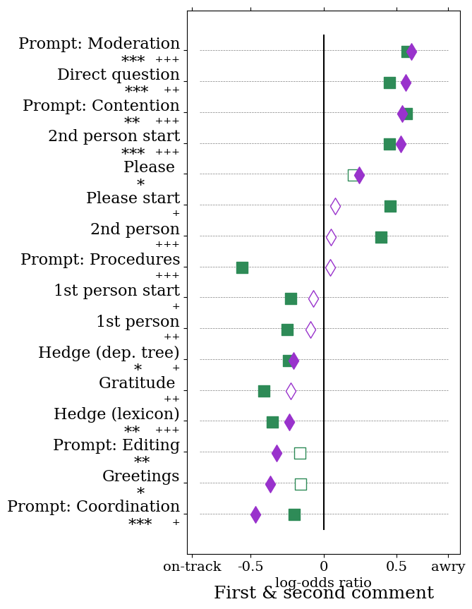

import os
import numpy as np
import pandas as pd
from scipy import stats
from sklearn.pipeline import Pipeline
from sklearn.preprocessing import StandardScaler
from sklearn.linear_model import LogisticRegression
from sklearn.model_selection import GridSearchCV, LeaveOneGroupOut
from sklearn.feature_selection import f_classif, SelectPercentile
from collections import defaultdict
from functools import partial
from multiprocessing import Pool
from convokit import download
from convokit.prompt_types import PromptTypeWrapper
from convokit import PolitenessStrategies
from convokit import Corpus
import matplotlib.pyplot as plt
%matplotlib inlinePredicting Conversations Gone Awry With Convokit
This interactive tutorial demonstrates how to predict whether a conversation will eventually lead to a personal attack, as seen in the paper Conversations Gone Awry: Detecting Early Signs of Conversational Failure, using the tools provided by ConvoKit. It also serves as an illustration of how to use two transformers implemented by ConvoKit: PromptTypes and politeness strategies.
Note that due to updates in the implementation of ConvoKit modules as well as libraries we’ve used, the results in the notebook deviate slightly from what was presented in the paper; however, the overall findings match fairly closely. NOTE: for an updated version of the PromptTypes method, using the Expected Conversational Context Framework and the ExpectedContextModel functionality, see this notebook, which uses the same datasets. We keep this demo around to more closely match with the original publication.
import warnings
warnings.filterwarnings('ignore')Step 1: Load the corpus
The dataset from the Conversations Gone Awry paper is provided through Convokit as “conversations-gone-awry-corpus”. We will download this corpus, which includes precomputed SpaCy dependency parses, and use it for our analysis.
# OPTION 1: DOWNLOAD CORPUS
# UNCOMMENT THESE LINES TO DOWNLOAD CORPUS
# DATA_DIR = '<YOUR DIRECTORY>'
# AWRY_ROOT_DIR = download('conversations-gone-awry-corpus', data_dir=DATA_DIR)
# OPTION 2: READ PREVIOUSLY-DOWNLOADED CORPUS FROM DISK
# UNCOMMENT THIS LINE AND REPLACE WITH THE DIRECTORY WHERE THE TENNIS-CORPUS IS LOCATED
# AWRY_ROOT_DIR = '<YOUR DIRECTORY>'
awry_corpus = Corpus(AWRY_ROOT_DIR)
awry_corpus.load_info('utterance',['parsed'])Dataset already exists at /home/jpchang/.convokit/downloads/conversations-gone-awry-corpusThe original Awry paper and dataset was released at ACL 2018. In the time since initial release, the dataset has been expanded with additional labeled samples, with the later annotation rounds focusing on longer conversations. Since this example notebook is based on the original Awry paper, we will now filter the corpus to keep only the conversations from the original dataset. This can be achieved by checking the “annotation_year” metadata entry; original data will have the value “2018”. However, if you may also skip this filtering stage (skip directly to “Step 2: Extract prompt types features”) if you wish to run the model on the complete dataset (note that the notebook will take quite a while longer to run).
awry_corpus = awry_corpus.filter_conversations_by(lambda convo: convo.meta['annotation_year'] == '2018')awry_corpus.print_summary_stats()Number of Speakers: 2010
Number of Utterances: 6363
Number of Conversations: 1168Step 2: Extract prompt types features
In this step, we will extract the first of the two types of pragmatic features seen in the paper: prompt types. We can learn prompt types and compute types for each utterance in the corpus using ConvoKit’s PromptTypeWrapper class (which implements an end-to-end pipeline that extracts prompt types; see this notebook for examples of particular steps in that pipeline). Note that in keeping with proper machine learning practices, we need a different dataset to use for training the PromptTypeWrapper object. For this, we will use Convokit’s Wikipedia talk corpus (“wiki-corpus”), which is composed of Wikipedia talk page conversations different from those found in the Awry corpus.
# OPTION 1: DOWNLOAD CORPUS
# UNCOMMENT THESE LINES TO DOWNLOAD CORPUS
# DATA_DIR = '<YOUR DIRECTORY>'
# FULL_ROOT_DIR = download('wiki-corpus', data_dir=DATA_DIR)
# OPTION 2: READ PREVIOUSLY-DOWNLOADED CORPUS FROM DISK
# UNCOMMENT THIS LINE AND REPLACE WITH THE DIRECTORY WHERE THE TENNIS-CORPUS IS LOCATED
# FULL_ROOT_DIR = '<YOUR DIRECTORY>'
full_corpus = Corpus(FULL_ROOT_DIR)
full_corpus.load_info('utterance',['parsed'])Downloading wiki-corpus to /home/jpchang/.convokit/downloads/wiki-corpus
Downloading wiki-corpus from http://zissou.infosci.cornell.edu/convokit/datasets/wiki-corpus/wiki-corpus.zip (238.4MB)... DoneWe will train a PromptTypeWrapper object on the downloaded corpus.
(demo continues after long output)
pt_model = PromptTypeWrapper(n_types=6, use_prompt_motifs=False, root_only=False,
questions_only=False, enforce_caps=False, min_support=20, min_df=100,
svd__n_components=50, max_dist=1., random_state=1000)
pt_model.fit(full_corpus)10000/391294 utterances processed
20000/391294 utterances processed
30000/391294 utterances processed
40000/391294 utterances processed
50000/391294 utterances processed
60000/391294 utterances processed
70000/391294 utterances processed
80000/391294 utterances processed
90000/391294 utterances processed
100000/391294 utterances processed
110000/391294 utterances processed
120000/391294 utterances processed
130000/391294 utterances processed
140000/391294 utterances processed
150000/391294 utterances processed
160000/391294 utterances processed
170000/391294 utterances processed
180000/391294 utterances processed
190000/391294 utterances processed
200000/391294 utterances processed
210000/391294 utterances processed
220000/391294 utterances processed
230000/391294 utterances processed
240000/391294 utterances processed
250000/391294 utterances processed
260000/391294 utterances processed
270000/391294 utterances processed
280000/391294 utterances processed
290000/391294 utterances processed
300000/391294 utterances processed
310000/391294 utterances processed
320000/391294 utterances processed
330000/391294 utterances processed
340000/391294 utterances processed
350000/391294 utterances processed
360000/391294 utterances processed
370000/391294 utterances processed
380000/391294 utterances processed
390000/391294 utterances processed
391294/391294 utterances processed
10000/391294 utterances processed
20000/391294 utterances processed
30000/391294 utterances processed
40000/391294 utterances processed
50000/391294 utterances processed
60000/391294 utterances processed
70000/391294 utterances processed
80000/391294 utterances processed
90000/391294 utterances processed
100000/391294 utterances processed
110000/391294 utterances processed
120000/391294 utterances processed
130000/391294 utterances processed
140000/391294 utterances processed
150000/391294 utterances processed
160000/391294 utterances processed
170000/391294 utterances processed
180000/391294 utterances processed
190000/391294 utterances processed
200000/391294 utterances processed
210000/391294 utterances processed
220000/391294 utterances processed
230000/391294 utterances processed
240000/391294 utterances processed
250000/391294 utterances processed
260000/391294 utterances processed
270000/391294 utterances processed
280000/391294 utterances processed
290000/391294 utterances processed
300000/391294 utterances processed
310000/391294 utterances processed
320000/391294 utterances processed
330000/391294 utterances processed
340000/391294 utterances processed
350000/391294 utterances processed
360000/391294 utterances processed
370000/391294 utterances processed
380000/391294 utterances processed
390000/391294 utterances processed
391294/391294 utterances processed
10000/391294 utterances processed
20000/391294 utterances processed
30000/391294 utterances processed
40000/391294 utterances processed
50000/391294 utterances processed
60000/391294 utterances processed
70000/391294 utterances processed
80000/391294 utterances processed
90000/391294 utterances processed
100000/391294 utterances processed
110000/391294 utterances processed
120000/391294 utterances processed
130000/391294 utterances processed
140000/391294 utterances processed
150000/391294 utterances processed
160000/391294 utterances processed
170000/391294 utterances processed
180000/391294 utterances processed
190000/391294 utterances processed
200000/391294 utterances processed
210000/391294 utterances processed
220000/391294 utterances processed
230000/391294 utterances processed
240000/391294 utterances processed
250000/391294 utterances processed
260000/391294 utterances processed
270000/391294 utterances processed
280000/391294 utterances processed
290000/391294 utterances processed
300000/391294 utterances processed
310000/391294 utterances processed
320000/391294 utterances processed
330000/391294 utterances processed
340000/391294 utterances processed
350000/391294 utterances processed
360000/391294 utterances processed
370000/391294 utterances processed
380000/391294 utterances processed
390000/391294 utterances processed
391294/391294 utterances processed
fitting 212967 input pairs
fitting reference tfidf model
fitting prompt tfidf model
fitting svd model
fitting 6 prompt typesHere are the six prompt types that our model has inferred – i.e., prototypical features of the prompts and responses, as well as prototypical utterances for each type.
Note that due to updates in SpaCy’s dependency parsing, as well as in our implementation of the prompt types methodology, the particular types returned don’t fully align with what’s in the paper (though we see that they recover similar prompt types, and down the line may result in better performance accuracies).
demo continues after long output
pt_model.summarize(full_corpus, k=25)TYPE 0
top prompt:
0 1 2 3 4 5 type_id
well_* 0.650458 1.050553 0.702351 1.076953 0.845196 1.096900 0.0
got_* 0.655416 1.092113 0.718272 1.154005 0.838104 1.103844 0.0
too_* 0.663216 1.126098 0.718142 1.138544 0.846150 1.125013 0.0
really_* 0.668041 0.971438 0.806983 1.018529 0.928818 1.132942 0.0
oh>* 0.669572 1.121989 0.788144 1.153735 0.859686 1.171196 0.0
thought_* 0.674321 1.054046 0.766129 1.086536 0.803891 0.997753 0.0
off_* 0.675811 0.962570 0.758636 1.093948 0.933408 1.104960 0.0
oh_* 0.676450 1.121119 0.801333 1.154453 0.860784 1.174679 0.0
:d_* 0.681741 1.073692 0.776019 1.124516 0.879080 1.144497 0.0
yeah>* 0.683447 1.153340 0.806862 1.177334 0.887996 1.238617 0.0
're_* 0.686328 0.929879 0.724062 1.083456 0.897322 1.028071 0.0
lol_* 0.689629 1.147386 0.874661 1.135859 0.874515 1.191733 0.0
yeah_* 0.691990 1.165755 0.814760 1.174938 0.878244 1.242814 0.0
guess_* 0.692082 1.108753 0.882930 1.101769 0.846059 1.129827 0.0
lol>* 0.696620 1.127235 0.889240 1.118512 0.908895 1.236374 0.0
saw_* 0.701814 1.049878 0.813413 1.093511 0.798817 0.984724 0.0
heh_* 0.701984 1.113149 0.880906 1.096404 0.908344 1.185310 0.0
heh>* 0.703125 1.114458 0.903023 1.090302 0.904492 1.184940 0.0
:p_* 0.704126 1.119002 0.849092 1.145958 0.913821 1.182641 0.0
well>* 0.704156 1.100151 0.857222 1.083398 0.902060 1.176201 0.0
anyway_* 0.708794 1.128118 0.755582 1.098700 0.870960 1.178324 0.0
sorry_* 0.709850 0.933494 0.782293 1.076261 0.874176 0.967661 0.0
had_* 0.709898 0.974768 0.850590 1.054314 0.842247 0.943172 0.0
right_* 0.710113 1.021131 0.785387 1.048416 0.846895 1.083220 0.0
around_* 0.710622 1.090373 0.722444 1.139705 0.908177 1.150199 0.0
top response:
0 1 2 3 4 5 type_id
lol_* 0.691570 1.085356 0.965858 1.101107 0.919107 1.181311 0.0
lol>* 0.697353 1.082125 0.971030 1.097587 0.923419 1.182138 0.0
:p_* 0.712141 1.104804 0.929356 1.103890 0.898685 1.167411 0.0
too_* 0.717082 1.166911 0.884220 1.139042 0.951220 1.254455 0.0
cool_* 0.718307 1.122410 0.832979 1.121357 0.871501 1.187276 0.0
:p>* 0.730325 1.113292 0.949795 1.107160 0.911450 1.181783 0.0
anyway>* 0.732701 1.105640 0.965618 1.070537 0.958312 1.188798 0.0
's_oh 0.738186 1.095879 0.974118 1.060049 0.870664 1.122473 0.0
hehe_* 0.739802 1.087222 0.981186 1.085473 0.933666 1.165553 0.0
well_oh 0.740923 1.056348 0.996314 1.067105 0.891725 1.117679 0.0
yeah_* 0.741865 1.177040 0.962845 1.145010 0.921088 1.219063 0.0
anyway_* 0.741899 1.117258 0.971117 1.074322 0.937683 1.169783 0.0
too>* 0.742821 1.155216 1.008456 1.104970 0.970434 1.235290 0.0
yeah>* 0.746277 1.181380 0.962664 1.147500 0.922525 1.222781 0.0
ha>* 0.748432 1.139067 0.998635 1.074313 0.944510 1.214480 0.0
ha_* 0.749607 1.136698 1.004028 1.073448 0.940344 1.205380 0.0
hehe>* 0.750041 1.090953 0.978167 1.096998 0.934838 1.159726 0.0
oh_* 0.750570 1.050547 0.972621 1.073407 0.872155 1.087702 0.0
oh>* 0.751089 1.048808 0.971684 1.073539 0.871934 1.085558 0.0
oh>well 0.757825 1.070047 0.968965 1.100284 0.901160 1.138101 0.0
late_* 0.758307 1.099453 0.927769 1.135204 0.932197 1.152234 0.0
:d_* 0.760045 1.078646 0.816721 1.085222 0.897031 1.137796 0.0
bad_too 0.761256 1.173434 1.025344 1.086340 0.975503 1.278226 0.0
heh_* 0.762219 1.137254 0.997781 1.129926 0.963639 1.167224 0.0
kinda_* 0.764029 1.096028 1.002277 1.136655 0.972093 1.225145 0.0
top prompts:
333303 I love the internet. You never know when someone is taking the piss. Stevey I can live with, I guess. Anyway, thanks for listening. I'm off to bed.
['love_*', 'is_* know_* know_never know_taking never_* taking_* taking_is taking_when when_*', 'guess_*', '', "'m_* 'm_off off_* off_to to_*"]
290548 Nevermind that.... I just saw the legend of Zelda article... Oh well, March (Euro launch) isn't ''too'' far off I guess... :( <font color=\"#3300ff\">
['nevermind>* nevermind_*', 'just_* saw_* saw_just', 'far_* is_* is_off is_oh is_well off_* off_far off_too oh>* oh>well oh_* too_* well_*', 'guess_*', '']
287966 Yeah, Xhix told me. It's quite funny. I'd be surprised if the band cares about it more than their lawyers\/managers ect. do. I hope they win though. Lol.
['told_* told_yeah yeah>* yeah_*', "'s_* 's_funny funny_* funny_quite quite_*", "'d_* about_* be_'d be_* be_cares be_surprised cares_* cares_about cares_if cares_more if_* more_* more_than surprised_* than_*", 'do>* do_*', 'hope_* hope_win though_* win_* win_though', 'lol>* lol_*']
173885 I thought ''it never rains in Southern California''. Oh well, another dream shattered :)
['in_* never_* rains_* rains_in rains_never thought_* thought_rains', 'oh>* oh>well oh_* shattered_* shattered_oh shattered_well well_*']
488160 Ha! I thought my sentence was stronger. Anyway I think that Doright has resolved your objection.--
['ha>* ha_*', 'stronger_* thought_* thought_was was_* was_stronger', 'anyway>* anyway_* has_* resolved_* resolved_has resolved_that that_* think_* think_anyway think_resolved']
307977 Heh. I hadn't yet, no! Kind of weird to think I might be passing one of ye in the street.
['heh>* heh_*', 'had_* had_no had_yet no_* yet_*', 'be_* kind>* kind_* might_* of_* of_kind passing_* passing_be passing_might think_* think_passing think_to to_* weird_* weird_of weird_think']
612505 Heh. I hadn't yet, no! Kind of weird to think I might be passing one of ye in the street.
['heh>* heh_*', 'had_* had_no had_yet no_* yet_*', 'be_* kind>* kind_* might_* of_* of_kind passing_* passing_be passing_might think_* think_passing think_to to_* weird_* weird_of weird_think']
125858 I guess either you didnt get my joke or didnt think it was that funny, oh well. Fribbulus Xax is one of the levels in the Commander Keene video game, and I thought it was an interesting coincidence. '''
['did_* either_* funny_* funny_that get_* get_did get_either get_nt guess_* guess_get nt_* that_* think_* think_did think_nt think_was was_* was_funny', 'oh>* oh_* well_* well_oh', 'is_* thought_* thought_was was_*']
297993 LOL... I did kinda forget that. It's gone now anyway... Jappa came along and took it out. Sorry about that!
['lol>* lol_*', 'did_* forget_* forget_did forget_kinda kinda_*', "'s_* anyway_* gone_'s gone_* gone_anyway gone_now now_*", 'along_* came_* came_along out_* took_* took_out', 'about_* sorry>* sorry_* sorry_about']
217333 Yeah man, I ready fuh de holidays. Actually I pretty busy here shoveling snow. We got 4 to 5 inches new snow pon de ground and it still snowing. If I in de mood I play some Caribbean Christmas tunes, listen to VOB, watch Channel 8. I caught this nice Farmer's Choice Ham christmas commercial the other day. Really lovely, mek me feel like homesick to de rock. Yuh hear dat [[Olga Lopes-Seale|Auntie Olga]] in de QEH wid broken hip? Joerg, the [[image:Flag of Barbados.svg|20px]]
['man_* man_yeah ready_* ready_man yeah>* yeah_*', 'actually>* actually_* busy_* busy_actually busy_here busy_pretty busy_shoveling here_* pretty_* shoveling_*', 'got_* snowing_* snowing_still still_*', 'if>* if_* listen_* listen_play listen_to play_* play_if to_* watch_*', 'caught_*', 'feel_* feel_like like_* lovely_* lovely_really mek_* mek_feel mek_lovely really>* really_*', 'hear_* hear_in in_*', '']
586286 Heh, heh, well, there's quite a lot to say, and I'm actually catching up on some recent things mysel, too. :) I was on a break for a month. Anyway, I'm glad you're back.
["'m_* 's_* 's_heh 's_there 's_well actually_* catching_'m catching_* catching_actually catching_on catching_too catching_up heh>* heh_* on_* there_* too_* up_* well_*", '', 'on_* was_* was_on', "'m_* 'm_anyway 'm_glad 're_* 're_back anyway>* anyway_* back_* glad_'re glad_*"]
541683 Yeah, I'm not really turned on by the idea of keeping possibly controversial articles by \"hiding\" them from people who might want to nominate them for deletion.
["'m_* by_* not_* on_* really_* turned_'m turned_* turned_by turned_not turned_on turned_really turned_yeah yeah>* yeah_*"]
287948 Yeah, you're right. I've been intemperate. Too bad I've already fucked that up over at FOB discography. I haven't even rendered a proper review of it for the love of god. Live and learn...I thought it was [[Dream Days at the Hotel Existence]] you were talking about, but it doesn't have a FAC template on the talk page\u2014WTF?
["'re_* 're_right 're_yeah right_* yeah>* yeah_*", "'ve_* been_* intemperate_'ve intemperate_* intemperate_been", "'ve_* already_* at_* bad_* bad_too fucked_'ve fucked_* fucked_already fucked_bad fucked_over over_* over_at over_up too>* too_* up_*", 'even_* for_* have_* rendered_* rendered_even rendered_for rendered_have', 'learn_* live>* live_*', 'thought_* thought_was was_*', 'about_* does_* have_* have_does have_on on_* talking_* talking_about talking_were were_*']
454749 Heh. That was a joke message left on Samir's talk page. [http:\/\/en.wikipedia.org\/w\/index.php?title=Special%3ALog&type=block&user=&page=User%3ASamir+%28The+Scope%29 He's not blocked really]. I hope he gets a good shock when he opens up his talk page. <tt>:D<\/tt> —
['heh>* heh_*', 'was_*', '', '', "'s_* blocked_'s blocked_* blocked_not blocked_really not_* really_*", 'gets_* gets_opens hope_* hope_gets opens_* opens_up opens_when up_* when_*', '']
378849 Hey, thanks. And, yeah, I'm back. I had a very pleasant break.
['', "'m_* 'm_back 'm_yeah and>* back_* yeah_*", 'had_*']
180621 Yeah, years ago we'd spend the summers in the wilderness of Southern Utah, driving this winding dirt road into the mountain wilderness, sometimes with the old Dodge van half off the road, and when it rained it became really hairy...
["'d_* ago_* became_* became_hairy driving_* driving_into driving_with hairy_* hairy_really into_* rained_* rained_became rained_when really_* sometimes_* spend_'d spend_* spend_ago spend_driving spend_yeah when_* with_* with_sometimes yeah>* yeah_*"]
448537 Lol! Thanks. Btw, I had absolutely *no* idea that \"I\" had my own article on wp, when I registered under that nick..and I was quite horrified when I read the article here... The [[Huldra]]-article here has hardly anything to do with the [http:\/\/en.wikipedia.org\/wiki\/File:Norske_folke_og_huldre-eventyr.jpg Asbj\xf8rnsen and Moe] I grew up with! Oh well. Cheers!
['lol>* lol_*', '', 'absolutely_* btw>* btw_* had_* had_absolutely had_btw', '', 'and>* here_* horrified_* horrified_quite quite_* read_* read_here read_when was_* was_horrified was_read when_*', '', 'grew_* grew_up grew_with up_* with_*', 'oh>* oh_* well_* well_oh', '']
59500 Yeah, maybe. I was in the middle of refactoring my comment when you replied. I had meant to say \"...when the text gets close to your preferred version\/style\". --
['maybe_* yeah>* yeah_* yeah_maybe', 'in_* was_* was_in', 'close_* close_to gets_* gets_close gets_when had_* meant_* meant_had meant_say say_* say_gets say_to to_* when_*']
275396 I'm feeling better today, weather wasn't too bad when I was down there. I was at the [[:File:Melbourne Museum interior 1.jpg|Melbourne Museum]] on Saturday and the [[RAAF Museum]] the day before. Never got the chance to do the photography I wanted to do due to the tight itinerary, but I want to head back down in spring. I hope all goes well on Thursday!
["'m_* bad_* bad_too better_* down_* feeling_'m feeling_* feeling_better there_* there_down too_* was_* was_bad was_feeling was_there was_when when_*", 'at_* was_* was_at', 'back_* down_* got_* got_never head_* head_back head_down head_in head_to in_* never>* never_* to_* want_* want_head', 'goes_* goes_on goes_well hope_* hope_goes on_* well_*']
366191 It was an awesome game. You just had to see it live to feel the pain I guess. So you never saw many of the greats play? I've kinda lost touch with modern footy, hence my only AFL contributions being kinda old hat. I was almost 18 when that game kicked off. Old enough to take it hard :) --
['was_*', 'feel_* feel_to had_* had_just had_see just_* live_* live_feel see_* see_live see_to to_*', 'never_* play_* saw_* saw_never saw_play saw_so so>* so_*', "'ve_* kinda_* lost_'ve lost_* lost_kinda", 'kicked_* kicked_off kicked_when off_* was_* was_kicked when_*', 'enough_* hard_* old>* old_* old_enough old_take take_* take_hard take_to to_*']
573981 I will lay off. I guess certain individuals are just rubbing off on me (with their penchant for throwing the word around as easy as I breath).
['lay_* lay_off lay_will off_* will_*', 'are_* guess_* guess_rubbing just_* off_* on_* rubbing_* rubbing_are rubbing_just rubbing_off rubbing_on rubbing_with with_*']
536644 Well, I guess I am kind of amazing and brilliant. You've got a point. :p <span style=\"font-family:Trebuchet MS\">
['am_* am_amazing amazing_* amazing_of brilliant_* guess_* guess_am guess_well kind_* of_* of_kind well>* well_*', "'ve_* got_'ve got_*", ':p>* :p_*', '']
499306 Well, I guess I am kind of amazing and brilliant. You've got a point. :p <span style=\"font-family:Trebuchet MS\">
['am_* am_amazing amazing_* amazing_of brilliant_* guess_* guess_am guess_well kind_* of_* of_kind well>* well_*', "'ve_* got_'ve got_*", ':p>* :p_*', '']
499220 Ah, sometimes this Wikithing is ''hard''. :p Oh well, I've rambled enough now. Take care, — '''
['ah>* ah_* ah_sometimes hard_* is_* is_ah is_hard sometimes_*', ':p>* :p_*', "'ve_* enough_* now_* oh>* oh>well oh_* rambled_'ve rambled_* rambled_enough rambled_now rambled_oh rambled_well well_*", 'take>* take_*']
536558 Ah, sometimes this Wikithing is ''hard''. :p Oh well, I've rambled enough now. Take care, — '''
['ah>* ah_* ah_sometimes hard_* is_* is_ah is_hard sometimes_*', ':p>* :p_*', "'ve_* enough_* now_* oh>* oh>well oh_* rambled_'ve rambled_* rambled_enough rambled_now rambled_oh rambled_well well_*", 'take>* take_*']
top responses:
419258 Hehe, I remember how crazy it can be. Enjoy it while you can! College life beats real life. :P But I do hope you're doing great. As for me, I recently finished my Master's degree, which freed up my time considerably, let me tell ya! I'm contributing again to the Spanish Wikipedia quite actively. I had missed editing articles, isn't that funny? But when I returned to the English wikipedia, I saw that many of the \"old\" faces were gone. Allstarecho, David Shankbone, WJBscribe (although it seems he's back now, yay), you... I guess it can't be helped, life does go on. But I was happy to see you pop up on my watchlist the other day. :) Maybe you'll let the wikibug bite you again, hehe. Cheers
['be_* be_can be_crazy can_* crazy_* crazy_how hehe>* hehe_* how_* remember_* remember_be remember_hehe', 'can_* can_while enjoy>* enjoy_* enjoy_can while_*', 'beats_*', ':p>* :p_*', "'re_* but>* do_* doing_'re doing_* doing_great great_* hope_* hope_do hope_doing", 'as>* as_* as_for finished_* finished_as finished_recently for_* let_* let_tell recently_* tell_*', "'m_* actively_* actively_quite again_* contributing_'m contributing_* contributing_actively contributing_again contributing_to quite_* to_*", 'funny_* had_* is_* is_funny is_missed missed_* missed_had', 'but>* but>when gone_* gone_that gone_were returned_* returned_to returned_when saw_* saw_gone saw_returned that_* to_* were_* when_*', '', 'be_* ca_* does_* go_* go_does go_guess go_on guess_* guess_helped helped_* helped_be helped_ca on_*', 'but>* happy_* happy_see on_* pop_* pop_on pop_up see_* see_pop see_to to_* up_* was_* was_happy', '', "'ll_* again_* bite_* bite_again hehe_* let_'ll let_* let_bite let_hehe let_maybe maybe>* maybe_*", '']
392708 LOL, nice!
['lol>* lol_* lol_nice nice_*']
148996 Belated April fools, Iowa, change to summer time. I'm feeling weird too lol
['', "'m_* feeling_'m feeling_* feeling_lol feeling_weird lol_* lol_too too_* weird_*"]
274556 Cool, hope you had a great trip. I had some time off for Easter and so my \"watch\" dropped off a bit around then. Anyway, glad to see you back now, Steve. Take care,
['cool>* cool_* had_* hope_* hope_cool hope_had', 'for_* had_* had_for', 'and>* and>so around_* dropped_* dropped_around dropped_off dropped_so dropped_then off_* so_* then_*', 'anyway>* anyway_* back_* glad_* glad_anyway glad_see now_* now_back see_* see_now see_to to_*', 'take>* take_*']
517503 Thank you. Have the '''Ye Olde Bidet Award of 2005''' in recognition of your stout efforts in the Great April Fool's Hoax War! [[User:Bishonen|Bishonen]]|[[User talk:Bishonen|Talk]] 00:01, 7 Apr 2005 (UTC). P. S. Yeah, and I'll social process you! --
['thank>* thank_*', 'have>* have_*', '', '', 'yeah>* yeah_*', "'ll_* and>*"]
301239 LOL :D
[':d_* lol>* lol_* lol_:d']
22581 Thanks for the message, that was quick! Oh, I love that category you created. Songs in memory of Marvin Gaye! Best, --
['quick_* that_* was_* was_quick was_that', 'love_* love_oh oh>* oh_*', '', 'best>* best_*']
429217 lol, cool
['cool_* lol>* lol_*']
345842 Cool, just tell me when you find it. Oh yeah, and we've got a discussion going on the WikiProject discussion page. You, CBD, and I are the only real members on this WikiProject <tt>:P<\/tt>. *sigh* Anyway, I'd like to hear your feedback on the topics in the talk page. \u2014'''[[User:Mirlen|<font color=\"coral\">Mir<\/font>]][[User talk:Mirlen|<font color=\"darkorange\"><span style=\"cursor:help\">l<\/span><\/font>]]
['cool>* cool_* find_* find_when just_* tell_* tell_cool tell_find tell_just when_*', 'oh>* oh_* oh_yeah yeah_*', "'ve_* and>* got_'ve got_*", 'are_*', "'d_* anyway>* anyway_* hear_* hear_on hear_to like_'d like_* like_anyway like_hear on_* to_*", '', '', '', '']
609949 Yeah, I think Saw I was the best - but I still love all the others. Hehe, and I loved the code you left :P \u2248
['think_* think_yeah yeah>* yeah_*', 'saw>* saw_*', 'love_* love_still still_* was_*', 'hehe>* hehe_*', ':p_* and>* loved_* loved_:p']
558630 And hey - well caught on that OS dude -
['and>* and>hey caught_* caught_hey caught_on caught_well hey_* on_* well_*']
109414 OK, pal. I learned too. :-)
['ok>* ok_* pal_* pal_ok', 'learned_* learned_too too_*']
14257 And for M. Vincent Seigner too. And for anyone else that has donated images through you.
['and>* for_* for_too too_*', 'and>* for_*']
520874 And someone wikified [[Alutor]] too.
['and>* too_* wikified_* wikified_too']
272717 lol - you were quick tonight with your reverts. He always give himself away with the line \"Sydney is famous for its ''culture''
['lol>* lol_* quick_* were_* were_lol were_quick were_with with_*', 'always_* away_* famous_* famous_for for_* give_* give_always give_away give_is give_with is_* is_famous with_*']
288343 Moo. Commented there too. It's lucky for you NSR that I'm so argumentative :D '''
['', 'commented>* commented_* commented_there commented_too there_* too_*', "'s_* 's_for 's_lucky for_* lucky_*", '', ':d>* :d_*']
32311 LOL. Actually I live very close to Euroidiomas <del>Gringolandia<\/del> Miraflores, :-D BTW, it's great to see you back at Wikipedia, [[WP:PERU]] has a lot of nominal members but very few active ones. Oh, and thanks for the compliments. --
['lol>* lol_*', 'actually>* actually_* close_* close_to close_very live_* live_actually live_close to_* very_*', "'s_* 's_btw 's_great 's_see at_* back_* back_at btw>* btw_* great_* see_* see_back see_to to_*", 'has_*', 'oh>* oh_*']
439329 lol, up from the deap blue sea, breathing the polluted air again. :p ~
['again_* breathing_* breathing_again breathing_up from_* lol>* lol_* lol_breathing up_* up_from', ':p>* :p_*']
232333 LOL! Your answer, and more importantly (to me), you attitude, are both appreciated and enjoyed. Thanks!
['lol>* lol_*', 'appreciated_* appreciated_are appreciated_attitude are_* attitude_* enjoyed_*', '']
611576 Sorry. It just looks so cool! Oh well. Anyway, thank for the heads up. Happy Editing! [[User:Sasuke-kun27|<font color=\"blue\">'''Sasuk'''<\/font>]]
['sorry>* sorry_*', 'cool_* cool_so just_* looks_* looks_cool looks_just so_*', 'oh>* oh_* well_* well_oh', 'anyway>* anyway_* for_* thank_* thank_anyway thank_for thank_up up_*', '', '']
394633 lol, I like those too.
['like_* lol>* lol_* lol_like lol_too too_*']
133729 Oh, okay, so it's a personal attack. I'm glad we've cleared that up.
["'s_* 's_oh 's_okay 's_so oh>* oh_* okay_* so_*", "'m_* 'm_glad 've_* cleared_'ve cleared_* cleared_up glad_* glad_cleared up_*"]
170351 Thanks, that's really nice :) I totally thought of you when they got their Polar Music Prize.
["'s_* 's_nice 's_thanks nice_* nice_really really_* thanks>* thanks_*", 'got_* got_when of_* thought_* thought_got thought_of thought_totally totally_* when_*']
204943 Darnit! He beat me anyway! lol. <small>
['', 'anyway_* beat_* beat_anyway', 'lol>* lol_*', '']
422046 That was the contract, really? Holy crap. I don't think I remembered that. I just hope you cool off before we play again. Not relishing M & M boys slaughtering our 2005 CY Young rotation. I hate interleague. Can someone shoot it please? <font face=\"Verdana\" color=\"6633FF\">
['really_* was_* was_really', '', 'do_* remembered_* think_* think_do think_remembered', 'again_* before_* cool_* cool_off cool_play hope_* hope_cool hope_just just_* off_* play_* play_again play_before', 'not>* not_* relishing_* relishing_not', 'hate_*', 'can>* can_* please_* shoot_* shoot_can shoot_please', 'font_*']
====
TYPE 1
top prompt:
0 1 2 3 4 5 \
continue_* 1.079315 0.641412 1.075864 0.960816 1.172275 1.047202
continue_if 1.125753 0.641506 1.154465 0.952065 1.154258 1.007006
stop_* 1.132407 0.648510 1.178018 0.912515 1.161075 1.002126
disruptive_* 1.127569 0.650522 1.223225 0.907014 1.198780 1.044636
from_editing 1.111545 0.653577 1.135528 0.941201 1.120463 0.949603
being_* 0.987724 0.654449 1.144087 0.868447 1.132641 1.001881
making_* 1.083886 0.668972 1.127261 0.899226 1.124161 1.001241
reverting_* 1.025865 0.675572 1.093219 0.911062 1.059302 0.948244
stop_to 1.087043 0.681402 1.128454 1.003844 1.186480 1.053271
blocked_violate 1.129559 0.683825 1.185024 0.926808 1.138908 0.993405
without_* 1.071851 0.684280 1.104564 0.836262 1.029507 0.796643
editing_* 0.945179 0.685462 0.948171 0.968784 1.007476 0.965571
violate_if 1.099831 0.696772 1.185056 0.913934 1.136455 1.024571
reverted_* 1.014752 0.699525 1.062348 0.901621 0.967660 0.798950
refrain_* 1.142672 0.700486 1.176504 0.872944 1.109992 0.926693
refrain_from 1.147183 0.700813 1.175996 0.879879 1.118012 0.935594
violating_* 1.149753 0.703821 1.226973 0.963303 1.246884 1.107224
again_* 0.885456 0.706423 0.825717 1.027566 0.974665 0.870238
reverted_have 1.111508 0.708243 1.091727 0.882775 1.042208 0.848204
discuss_to 1.160469 0.709116 1.193966 0.862186 1.172429 1.002063
be_continue 1.117284 0.709659 1.162169 0.935574 1.098232 0.979577
is_disruptive 1.127224 0.711078 1.201138 0.923999 1.197693 1.076453
constructively_* 1.039858 0.713818 1.135789 0.971337 1.110724 0.935824
violate_even 1.148164 0.714237 1.184077 0.928727 1.138025 0.999862
posting_* 1.025572 0.714796 1.066635 1.016060 1.171653 1.112526
type_id
continue_* 1.0
continue_if 1.0
stop_* 1.0
disruptive_* 1.0
from_editing 1.0
being_* 1.0
making_* 1.0
reverting_* 1.0
stop_to 1.0
blocked_violate 1.0
without_* 1.0
editing_* 1.0
violate_if 1.0
reverted_* 1.0
refrain_* 1.0
refrain_from 1.0
violating_* 1.0
again_* 1.0
reverted_have 1.0
discuss_to 1.0
be_continue 1.0
is_disruptive 1.0
constructively_* 1.0
violate_even 1.0
posting_* 1.0
top response:
0 1 2 3 4 5 \
again>* 1.087940 0.692158 1.060553 0.897767 1.085021 0.865934
reverting_* 1.064221 0.692223 1.160397 0.940421 1.110834 0.973285
responding_* 1.029781 0.693227 1.050948 0.996917 1.158763 1.067548
revert_not 1.123513 0.706633 1.145906 0.923964 1.109957 0.976456
again_once 1.037593 0.714548 1.005035 0.954709 1.042148 0.818938
posting_* 1.115486 0.717083 1.123128 1.026617 1.189256 1.027438
stop_* 1.126586 0.720285 1.152407 0.978676 1.184211 1.080914
reverted_have 1.092021 0.723119 1.098040 0.922395 1.049625 0.845458
again_* 0.987744 0.723648 0.923475 1.017968 1.024587 0.820000
responding_to 1.065962 0.724014 1.089643 1.002093 1.182839 1.093840
stop_to 1.120467 0.725000 1.189110 1.004546 1.227744 1.139931
repeatedly_* 1.183193 0.726545 1.274112 0.940643 1.214661 1.056015
editing_* 1.032489 0.728814 1.094565 1.051982 1.166621 1.114704
reverted_* 1.032556 0.729036 1.107260 0.934086 1.021478 0.858583
disruptive_* 1.184179 0.738688 1.276384 0.928678 1.247937 1.130847
see_above 1.093184 0.739951 1.154282 0.929098 1.107594 0.925199
is_disruptive 1.197241 0.743362 1.239655 0.912807 1.216416 1.083241
edit_not 1.111447 0.743419 1.150885 0.979441 1.138153 1.089179
do_again 1.047832 0.746671 1.072383 1.034738 1.120719 1.024807
continue_* 1.159675 0.747891 1.148351 1.024307 1.224183 1.126872
warring_* 1.155230 0.748407 1.262944 0.915362 1.217199 1.118679
stop_please 1.147538 0.749983 1.123228 0.963868 1.130623 0.996721
stop>* 1.131320 0.750416 1.186846 0.982913 1.208981 1.138498
revert_will 1.139021 0.750714 1.123527 0.967777 1.112487 0.955810
attacking_* 1.139136 0.753748 1.265236 0.966849 1.238598 1.172086
type_id
again>* 1.0
reverting_* 1.0
responding_* 1.0
revert_not 1.0
again_once 1.0
posting_* 1.0
stop_* 1.0
reverted_have 1.0
again_* 1.0
responding_to 1.0
stop_to 1.0
repeatedly_* 1.0
editing_* 1.0
reverted_* 1.0
disruptive_* 1.0
see_above 1.0
is_disruptive 1.0
edit_not 1.0
do_again 1.0
continue_* 1.0
warring_* 1.0
stop_please 1.0
stop>* 1.0
revert_will 1.0
attacking_* 1.0
top prompts:
185971 Whatever your reasons, please stop reverting, and take the issue to [[Template Talk:Infobox Stadium]]. I won't revert you again, but if you don't discuss it civilly, and continue to revert others, you risk getting blocked for violating [[WP:3RR]]. -
['please_* reverting_* stop_* stop_please stop_reverting stop_whatever take_* take_to to_* whatever>* whatever_*', 'again_* blocked_* blocked_for blocked_getting civilly_* continue_* continue_revert discuss_* discuss_civilly discuss_do discuss_if do_* for_* for_violating getting_* if_* revert_* revert_again revert_to revert_wo risk_* risk_blocked risk_discuss to_* violating_* wo_*']
573781 I am not the editor [[User:Netscott]] is accusing me of being, would you please stop this person from attacking me thank you. He has posted a bunch of stuff at a webpage on wiki. You can understand the mentality of the person I am dealing with now. Thank you
['accusing_* accusing_am accusing_is accusing_of accusing_stop am_* am_not attacking_* being_* from_* from_attacking is_* not_* of_* of_being please_* stop_* stop_from stop_please stop_would thank_* would_*', 'at_* has_* posted_* posted_at posted_has', 'can_* understand_* understand_can', 'thank>* thank_*']
39460 It wasn't my decision to delete the article. We had clear community consensus. Please stop taking thins personally.
['was_*', 'had_*', 'personally_* please>* please_* stop_* stop_please stop_taking taking_* taking_personally']
47663 [[Image:Nuvola apps important.svg|25px]] Please stop your disruptive editing. If you continue to disrupt Wikipedia, {{#if:|as you did at [[:{{{1}}}]],}} you will be [[Wikipedia:Blocking policy|blocked from editing]]. <!-- Template:uw-vandalism3 --> ''[https:\/\/secure.wikimedia.org\/wikipedia\/en\/w\/index.php?title=User:Dream_Focus&diff=prev&oldid=285366082 Calling someone a fool], even on your talk page, is a violation of the [[WP:NPA]] and [[WP:CIVIL]] policies.'' --
['', 'please>* please_* stop_* stop_please', 'be_* be_continue be_will continue_* continue_disrupt continue_if disrupt_* disrupt_to if>* if_* to_* will_*', '', '', '', '', 'calling_* even_* is_* is_calling is_on on_* on_even']
277625 Important note before this escelates into legal threats. Do not make threats or claims of legal action on Wikipedia. If you have a dispute with the Community or its members, use [[dispute resolution]]. A polite report of a legal problem such as defamation, ect., is not threatening and will be acted on quickly. If you do choose to take legal action, please refrain from editing until it is resolved and note that your user account or IP address may be blocked.--Hu12 (talk) 20:41, 9 January 2008 (UTC)
['', 'do>* do>not do_* make_* make_do make_not not_*', 'have_* have_if if>* if_* use_* use_have', 'acted_* acted_be acted_quickly acted_will be_* is_* not_* on_* quickly_* quickly_on threatening_* threatening_is threatening_not will_*', 'be_* blocked_* blocked_be blocked_may blocked_that choose_* choose_do choose_if choose_take do_* editing_* from_* from_editing if>* if_* is_* may_* note_* note_blocked please_* refrain_* refrain_choose refrain_from refrain_please refrain_resolved resolved_* resolved_is resolved_until take_* take_to that_* to_* until_*', '']
300101 The offending word has been censored. Your \"auto-revert everything and ask questions later\" bot is more disruptive than I could ever be.--
['been_* censored_* censored_been censored_has has_*', 'disruptive_* disruptive_more is_* is_disruptive more_*']
417411 You have undone many redirects against consensus. This is clearly disruptive, as you are wasting many editor's time fixing your edits. Please do not repeat this, or you may be blocked from editing. If you wish to make an edit that conflicts with a previous community decision, please discuss it first.
['have_* undone_* undone_have', 'are_* as_* clearly_* disruptive_* is_* is_clearly is_disruptive is_wasting wasting_* wasting_are wasting_as', 'be_* blocked_* blocked_be blocked_from blocked_may do_* from_* may_* not_* please>* please>do please_* repeat_* repeat_do repeat_not repeat_please', 'discuss_* discuss_first discuss_please discuss_wish first_* if>* if_* make_* make_to please_* to_* wish_* wish_if wish_make']
301063 I can understand removing the material once before going to the talk page. Repeating the removal when other editors clearly disagree is disruptive. Please convince others on the article's talk page before making such a drastic change.
['before_* before_going before_once can_* going_* going_to once_* removing_* to_* understand_* understand_before understand_can understand_removing', 'clearly_* disagree_* disagree_clearly disagree_when disruptive_* is_* is_disruptive is_repeating repeating>* repeating_* repeating_disagree when_*', 'before_* before_making convince_* convince_before convince_on convince_please making_* on_* please>* please_*']
283089 Please stop accusing me of being a sockpuppet of [[User:CrestvilIe]] as you can see I am a MAJOR contributer over on Wikiquote.
['accusing_* accusing_of am_* as_* being_* can_* of_* of_being please>* please_* see_* see_am see_as see_can stop_* stop_accusing stop_please stop_see']
185496 If you refuse to understand that your behaviour is disruptive after so many editors have tried to explain the matter, further discussion of the point is unlikely to be worthwhile. Try instead to understand that you ''will'' be blocked if you violate the editing restriction and that most admins are getting tired of the argument. Wikipedia is an encyclopedia, not a debating society nor an arena where you can spar with WMC.
['after_* be_* be_to be_worthwhile disruptive_* explain_* explain_to have_* if>* if_* is_* is_disruptive is_refuse is_that is_tried is_unlikely refuse_* refuse_if refuse_understand that_* to_* tried_* tried_after tried_explain tried_have understand_* understand_is understand_to unlikely_* unlikely_be worthwhile_*', 'are_* be_* blocked_* blocked_be blocked_that blocked_violate blocked_will getting_* getting_are getting_that getting_tired if_* instead_* of_* that_* tired_* tired_of to_* try>* try>instead try_* try_understand understand_* understand_blocked understand_instead understand_to violate_* violate_if will_*', 'is_*']
8138 I asked you to stop typing \"would\" on these articles. It's not proper grammar. --
['asked_* asked_stop on_* stop_* stop_to stop_typing to_* typing_* typing_on', "'s_* 's_not not_*"]
133600 [[Image:Nuvola apps important.svg|25px]] <s>Please stop your disruptive editing. If you continue to [[Wikipedia:Vandalism|vandalize]] Wikipedia, {{#if:User:William M. Connolley|as you did at [[:User:William M. Connolley]],}} you will be [[Wikipedia:Blocking policy|blocked]] from editing. {{#if:|{{{2}}}|}}<!-- Template:uw-vandalism3 --> ''What the hell?''<\/s>
['', 'please_* s_* s_stop stop_* stop_please', 'continue_* continue_if continue_to if>* if_* to_*', 'if_*', 'at_* did_* did_at', '', '']
552732 The arbitrator was talking about whether or not to blank the talk page. That has no bearing on whether or not EffK is entitled to edit it: he is not. His ban is total. Violating a ban gets the ban extended. This is not a matter of my personal interpretation. It is, fractionally, interpretive whether or not the talk page should be blanked. It is immaterial to the banned user, however, since they are forbidden from editing it in any case. He has no right to edit anywhere on Wikipedia, nor to use his talk page to continue to engage in exactly that which got him banned. It ''is'' invention that he is only banned from articles and his userpage, since the Arbitration remedy says no such thing. I am not going to either unblock him, or unprotect his userpage: he has demonstrated that he will abuse the situation if I do. -
['about_* about_blank blank_* blank_not blank_to blank_whether not_* talking_* talking_about talking_was to_* was_* whether_*', 'has_* is_* is_has is_not not_*', 'is_* is_total total_*', 'gets_* gets_violating violating>* violating_*', 'is_* is_not not_*', 'be_* blanked_* blanked_be blanked_not blanked_should blanked_whether fractionally_* interpretive_* interpretive_blanked is_* is_fractionally is_interpretive not_* should_* whether_*', 'are_* editing_* editing_in forbidden_* forbidden_are forbidden_from forbidden_since from_* from_editing however_* immaterial_* immaterial_to in_* is_* is_forbidden is_however is_immaterial since_* to_*', 'continue_* continue_engage continue_to engage_* engage_in engage_to has_* in_* to_* use_* use_continue use_to', 'is_* is_says says_* says_since since_*', 'abuse_* abuse_do abuse_that abuse_will am_* demonstrated_* demonstrated_abuse demonstrated_going demonstrated_has do_* do_if either_* going_* going_am going_not going_unblock has_* if_* not_* that_* to_* unblock_* unblock_either unblock_to unprotect_* will_*']
42526 Please stop, '''now'''. Calling other users [http:\/\/en.wikipedia.org\/w\/index.php?title=User_talk:Tedius_Zanarukando&diff=186551834&oldid=186551582 offensive slang terms] is completely unacceptable. If you continue to insult other users and expound controversial views that many people have found insulting and asked you to stop, you will be blocked. Wikipedia is an encyclopedia, not a personal soapbox. '''<font color=\"#ff9900\">
['now_* please>* please_* stop_* stop_now stop_please', 'calling>* calling>other calling_* completely_* is_* is_calling is_unacceptable unacceptable_* unacceptable_completely', 'asked_* asked_stop be_* blocked_* blocked_be blocked_continue blocked_will continue_* continue_if continue_insult expound_* if>* if_* insult_* insult_to stop_* stop_to to_* will_*', 'is_*']
271484 <'''IMPORTANT'''>It is not dangerous to comment; problems arise when you act in haste. I have undone your precipitous strikes. For your own protection and that of the encyclopedia, I am banning you from editing [[2010 Haiti earthquake]] and its talk page for 36 hours from this timestamp. I hope this will provide you time to think about the matter with more perspective. I expect you will follow this ban; you may be blocked if you do not. Thanks, ''
['act_* act_in act_when arise_* arise_act arise_is comment_* comment_to dangerous_* in_* is_* is_comment is_dangerous is_not not_* to_* when_*', 'have_* undone_* undone_have', 'am_* banning_* banning_am banning_for banning_from editing_* for>* for_* from_* from_editing', 'hope_* hope_provide provide_* provide_will will_*', 'be_* blocked_* blocked_be blocked_do blocked_expect blocked_may do_* do_if do_not expect_* expect_follow follow_* follow_will if_* may_* not_* will_*', '']
52273 Please stop\u2014your recent messages, such as [http:\/\/en.wikipedia.org\/w\/index.php?title=User_talk:Fvasconcellos&diff=prev&oldid=267605298 this] one, constitute what is known as [[Wikipedia:Canvassing|canvassing]] on Wikipedia. This is ''very'' inappropriate. You wouldn't believe how much this is frowned upon; you may even be blocked if you continue. Best,
['', 'inappropriate_* inappropriate_very is_* is_inappropriate very_*', 'be_* believe_* believe_frowned believe_would blocked_* blocked_be blocked_believe blocked_continue blocked_even blocked_may continue_* continue_if even_* frowned_* frowned_is frowned_upon how_* if_* is_* may_* upon_* upon_how would_*', 'best>* best_*']
478662 I was already warned for that. Please stop and leave me alone. --
['already_* for_* warned_* warned_already warned_for warned_was was_*', 'alone_* leave_* leave_alone please>* please_* stop_* stop_please']
253196 Please stop posting robotic messages to people's talk pages when they edit an article you are monitoring. ~
['edit_* edit_when please>* please_* posting_* posting_edit posting_to stop_* stop_please stop_posting to_* when_*']
547063 Cactus.... Supreme Deliciousness is acting up at Asmahan again, bringing back potentially copyrighted text that had been removed. For the sake of peace on WP, please stop this. --
['', 'acting_* acting_again acting_at acting_bringing acting_is acting_up again_* at_* back_* bringing_* bringing_back is_* up_*', 'for>* for_* please_* stop_* stop_for stop_please']
463332 NightOftheBigWind: Are you harrasing me or wikihounding me, as you are following me to any edit I do and intervening at any discuss I intervene? you were already warned to stop that by an admin[http:\/\/en.wikipedia.org\/w\/index.php?title=User_talk:Night_of_the_Big_Wind&diff=438462937&oldid=438457240] -- <font face=\"Berlin Sans FB\" color=\"#ffffff\" size=\"2\"><span style=\"color:black; text-shadow:orange 0.2em 0.2em 0.1em; class=texhtml\">
['', 'already_* by_* stop_* stop_by stop_to to_* warned_* warned_already warned_stop warned_were were_*', '', '', 'black>* black_*']
408082 consider this your last warning, if you continue reverting you will be reported to admins. [[User:Tbhotch|<font color=\"#4B0082\">Tb<\/font><font color=\"#6082B6\">hotch<\/font>]].<sup>[[User talk:Tbhotch|<font color=\"#6B8E23\"><big>\u2122<\/big><\/font>]]<\/sup> Grammatically incorrect? '''Correct it!'''
['be_* consider>* consider_* continue_* continue_if continue_reverting if_* reported_* reported_be reported_consider reported_continue reported_will reverting_* will_*', '']
84682 I have not accused you of being a liar at any point in time, so please stop falsely making allegations to that effect. If this is the type of response you give to editors who express a concern over your approach in matters where you are involved, that is a serious problem, and I've noted this at the amendment request.
['accused_* accused_have accused_not accused_of at_* being_* being_at falsely_* have_* making_* making_falsely making_to not_* of_* of_being please_* so_* stop_* stop_accused stop_making stop_please stop_so to_*', "'ve_* at_* if>* if_* is_* is_if noted_'ve noted_* noted_at"]
543169 [[Image:Information.png|25px]] Please refrain from repeatedly undoing other people's edits {{{{{subst|}}}#if:United States|, as you are doing in [[:United States]]}}. If you continue, you may be [[Wikipedia:Blocking policy|blocked]] from editing Wikipedia. The [[Wikipedia:Three-revert rule|three-revert rule]] prohibits making more than three reversions in a content dispute within a 24 hour period. Additionally, users who perform a large number of reversions in content disputes may be blocked for [[Wikipedia:Edit war|edit warring]], even if they do not technically violate the [[Wikipedia:Three-revert rule|three-revert rule]]. Rather than reverting, please discuss disputed changes on the talk page. The revision you want is not going to be implemented by edit warring. {{{2|Thank you.}}}<!-- {{uw-3rr1}} -->
['', 'from_* from_undoing please>* please_* refrain_* refrain_from refrain_please repeatedly_* undoing_* undoing_repeatedly', 'are_* as_* be_* be_continue be_doing be_from be_may continue_* continue_if doing_* doing_are doing_as doing_in editing_* from_* from_editing if_* in_* may_*', 'in_* making_* making_in prohibits_* prohibits_making', 'additionally>* additionally_* be_* blocked_* blocked_additionally blocked_be blocked_for blocked_may blocked_violate do_* even_* for_* if_* may_* not_* technically_* violate_* violate_do violate_even violate_if violate_not violate_technically', 'discuss_* discuss_please discuss_than please_* rather>* rather_* reverting_* than_* than_rather than_reverting', 'be_* by_* going_* going_implemented going_is going_not implemented_* implemented_be implemented_by implemented_to is_* not_* to_*', '']
244942 Olive, in the past week you appear to have accused me of spreading untruths and mischaracterizations, of having biases and an agenda, and of engaging in incivility. When I asked you to substantiate those charges you said that you would only do so in a forum like the ArbCom. You are free to file an ArbCom case, but whatever you choose to do please don't continue to make unsubstantiated allegations against myself or any other Wikipedia editor. <b>
['accused_* accused_have accused_of accused_to appear_* appear_accused appear_in engaging_* engaging_in have_* having_* in_* of_* of_engaging of_having of_spreading spreading_* spreading_of to_*', 'asked_* asked_substantiate asked_when do_* do_in do_only do_so do_that do_would in_* only_* said_* said_asked said_do so_* substantiate_* substantiate_to that_* to_* when>* when_* would_*', 'against_* are_* are_free choose_* choose_do continue_* continue_choose continue_do continue_make continue_please do_* do_to do_whatever file_* file_to free_* free_file make_* make_against make_to please_* to_* whatever_*', 'b_*']
366667 Pat, I strongly urge you to stop this. You are not \"allotted three reverts\" during the course of the day, you are LIMITED to three reverts to prevent the exact same sort of revert-warring you are engaging in. Furthermore, you did violate the 3RR. BorgHunter legitimately blocked you for a short cool down period- after which you've chosen to violate Wikipedia's civility policy by calling him a \"bully\" and stating that \"he is destroying wikipedia\". You need to calm down and realize that you're not in the right here, and cool off a little.
['stop_* stop_to strongly_* to_* urge_* urge_stop urge_strongly', 'are_* are_limited are_prevent engaging_* engaging_are engaging_in in_* limited_* limited_to prevent_* prevent_to to_*', 'did_* furthermore>* furthermore_* violate_* violate_did violate_furthermore', 'blocked_* blocked_by blocked_down blocked_for blocked_legitimately by_* by_calling calling_* destroying_* destroying_is destroying_that down_* for_* is_* legitimately_* stating_* stating_destroying that_*', "'re_* 're_in 're_not 're_that calm_* calm_down calm_to cool_* cool_off down_* in_* need_* need_calm not_* off_* realize_'re realize_* that_* to_*"]
top responses:
13533 The correct merge procedure was followed. Again, raise any objections on the relevant talk page. Stop stalking me.
['followed_* followed_was was_*', 'again>* again_* raise_* raise_again', 'stalking_* stop>* stop_* stop_stalking']
483799 I echo Vampire Warrior's sentiments - please stop bothering me and kindly block some vandals. Thanks,
['block_* block_kindly bothering_* echo_* echo_stop kindly_* please_* stop_* stop_bothering stop_please', '']
583257 I have fully-protected the article for the time being. After semi-protection, Emccsm reverted again, and I had originally semi-protected the article to stop that reverting. Please discuss this issue on [[Talk: Buy.com]], and take a look at [[Wikipedia: Dispute resolution]].
['being_* for_* for_being fully_* have_* protected_* protected_for protected_fully protected_have', 'after>* after_* again_* had_* originally_* protected_* protected_had protected_originally protected_stop reverted_* reverted_after reverted_again stop_* stop_to to_*', 'discuss_* discuss_on discuss_please on_* please>* please_* take_*']
167819 OK, counting here, count me as number three opposing the overcategorisation that you are doing. I saw on [[Wikipedia talk:WikiProject Chemicals]] that also others are opposing this overcategorisation. I am sorry, I am asking you to a) stop immediately, b) revert the new creations and c) discuss ''before'' even considering to continue. Please consider this as a final request. Thank you. --
['as_* count_* count_as count_counting count_ok counting_* counting_here here_* ok>* ok_*', 'on_* saw_* saw_on', '', '', 'also_* are_* opposing_* opposing_also opposing_are opposing_that that>* that>also that_*', 'am_* am_sorry asking_* asking_am asking_to b_* before_* considering_* considering_continue considering_even continue_* continue_to discuss_* discuss_before even_* revert_* revert_b revert_considering sorry_* to_*', 'as_* consider_* consider_as consider_please please>* please_*', 'thank>* thank_*']
28987 Another [https:\/\/secure.wikimedia.org\/wikipedia\/en\/w\/index.php?title=Queen_Elizabeth_II%27s_visit_to_the_Republic_of_Ireland&diff=429678656&oldid=429678491 misleading] edit summary. Again, stop it.
['', 'again>* again_* stop_* stop_again']
116149 Dear sir, as administrator, you are requested to stop Mr. Mayor for making lobby against all Dalits on Hindi Wikipedia.--
['against_* are_* as_* dear>* for_* for_making making_* making_against requested_* requested_are requested_as requested_stop stop_* stop_for stop_to to_*']
104180 I take this opportunity to warn you again against editing an article for which you have a conflict of interest. --
['again_* against_* against_editing editing_* take_* take_warn to_* warn_* warn_again warn_against warn_to']
67987 I have reverted your edits per [[WP:BRD|R part of BRD]]. I respect your right to proceed per [[WP:BRD|D part of BRD]] (discussion).
['have_* reverted_* reverted_have', 'respect_*']
573514 These are all the same person, some months ago this person agreed to stop editing at Wikipedia and no further action was taken. {{vandal|Hipocrite}} is posting again and vandalised the [[Monkey-baiting]] and other baiting articles. Would you please \"Block\" all four of these accounts to stop this nonsense. Thank you
['ago_* agreed_* agreed_ago agreed_stop are_* are_agreed at_* editing_* editing_at stop_* stop_editing stop_to taken_* taken_was to_* was_*', 'again_* is_* posting_* posting_again posting_is vandalised_*', '', 'thank>* thank_*']
84684 I'm sorry, I just don't see your threats as credible, given that you've repeatedly vandalized my user page. Please stop. [[Special:Contributions\/24.177.120.138|24.177.120.138]] (
["'m_* 'm_sorry 've_* as_* as_credible credible_* do_* given_* given_vandalized just_* repeatedly_* see_'m see_* see_as see_do see_given see_just sorry_* that_* vandalized_'ve vandalized_* vandalized_repeatedly vandalized_that", 'please>* please_* stop_* stop_please', 'special_*']
240832 Once again, [[User:Rollosmokes|Rollosmokes]] has resumed edit warring and continues to disregard Wikipedia editors' instructions to stop reverting \"The CW\" and \"The WB\" to \"the CW\" and \"the WB\", while I unfairly continue to be labeled as a \"sock puppet.\"
['again_* again_once as_* be_* continue_* continue_labeled continue_unfairly continue_while continues_* continues_disregard continues_stop disregard_* disregard_to has_* labeled_* labeled_as labeled_be labeled_to once>* once_* resumed_* resumed_again resumed_continue resumed_has reverting_* reverting_to stop_* stop_reverting stop_to to_* unfairly_* while_*']
573878 You're a troll, obviously...stop trolling...you were warned by myself and others not to post attacks on your userpage, so have a nice day.--
["'re_* 're_obviously obviously_* stop_'re stop_*", 'by_* have_* not_* post_* post_not post_to to_* warned_* warned_by warned_post warned_were were_*']
369716 please would you block this user [http:\/\/en.wikipedia.org\/wiki\/Special:Contributions\/Adamfinmo Adamfinmo]; he is warring and putting an uncompleted page of mine into mainspace, removing an \"unfinished flag\" and generaly trolling. Thank you.
['block_* block_please block_would is_* please>* please>would please_* putting_* putting_removing removing_* warring_* warring_block warring_is would_*', 'thank>* thank_*']
385645 When you first reverted my edit I elaborated my reasoning and responded to your edit summary on the talk page, and now you revert again, without any explanation whatsoever. If you insist that I am wrong, refute me on the talk page; if you simply revert again, I will report to administrators.--
['again_* elaborated_* elaborated_reverted first_* now_* responded_* responded_to revert_* revert_again revert_now revert_without reverted_* reverted_first reverted_when to_* when>* when_* without_*', 'again_* am_* am_that am_wrong if>* if_* insist_* insist_am insist_if on_* refute_* refute_insist refute_on report_* report_refute report_revert report_to report_will revert_* revert_again revert_if revert_simply simply_* that_* to_* will_* wrong_*']
603181 About four other editors have also reverted you. I remember you had a very racist link on your userpage once that you absolutely refused to take off even when administators warned you. You can not edit his page, please ask him to remove it. I have nicely responded to your answer. Good bye. --
['about>* also_* have_* reverted_* reverted_also reverted_have', 'absolutely_* even_* had_* had_refused off_* once_* refused_* refused_absolutely refused_once refused_take refused_that refused_warned remember_* remember_had take_* take_off take_to that_* to_* warned_* warned_even warned_when when_*', 'ask_* ask_edit ask_please ask_remove can_* edit_* edit_can edit_not not_* please_* remove_* remove_to to_*', 'have_* nicely_* responded_* responded_have responded_nicely responded_to to_*', 'bye_* bye_good good>* good_*']
574595 Mongo, my request to you was friendly and civil, even '''after''' you insulted me by calling me 'galactically inane' a snide insult now you claim was a 'joke', rather than take responsibility for, and admit was conduct unbecoming an Admin hoping to become part of Arbcom. I asked you to instruct another editor to stop breaking WP:CIVIL, using an insulting nickname towards me. He insisted that I stop calling him 'Ruthbar'. I did. I now see that Crockspot feels I am insulting him by calling him CP! I will gladly stop. I asked a simple request of you as an Admin. I'm sorry that for whatever reason, you refused to honor my request that you advise \/ warn another editor who doesn't want me to post on his page to follow WP:CIVIL. I will ask you again. Will you '''advise\/warn''' Ruthfulbarbarity to stop breaking WP:CIVIL by calling me 'Neocons', and to call me FAAFA, or do I need take my concerns elsewhere? -
['after_* by_* by_calling calling_* calling_now civil_* even_* friendly_* insulted_* insulted_after insulted_by insulted_even insulted_was now_* was_* was_friendly', 'admit_* was_*', 'asked_* asked_instruct asked_using breaking_* instruct_* instruct_stop instruct_to stop_* stop_breaking stop_to to_* using_*', 'calling_* insisted_* insisted_stop stop_* stop_calling stop_that that_*', 'did_*', 'am_* by_* by_calling calling_* feels_* feels_insulting feels_that insulting_* insulting_am insulting_by now_* see_* see_feels see_now that_*', 'gladly_* stop_* stop_gladly stop_will will_*', 'asked_*', "'m_* 'm_sorry for_* for_whatever honor_* honor_to refused_* refused_for refused_honor refused_that sorry_* sorry_refused that_* to_* whatever_*", 'again_* ask_* ask_again ask_will will_*', '', 'breaking_* do_* elsewhere_* need_* need_do need_take stop_* stop_breaking stop_to take_* take_elsewhere to_*']
42527 I apologize for insulting other users expounding my controversial views that many find objectionable. I will never do that again. I had enough threats of punishment as it is. Okay?
['apologize_* apologize_for expounding_* for_* for_insulting insulting_* insulting_expounding', 'again_* do_* do_again do_never do_will never_* will_*', 'as_* had_* had_is is_* is_as', '']
245879 You were clearly edit-warring against consensus on the page [[Radical Right]]; and you did indeed vandalize Peter.C's userpage. Please review [[WP:NPOV]], [[WP:NPA]] and [[WP:CON]]. Regards,
['against_* clearly_* did_* indeed_* vandalize_* vandalize_did vandalize_indeed vandalize_were warring_* warring_against were_* were_clearly were_warring', '', 'please>* please_* review_* review_please', '', '']
379486 You were clearly edit-warring against consensus on the page [[Radical Right]]; and you did indeed vandalize Peter.C's userpage. Please review [[WP:NPOV]], [[WP:NPA]] and [[WP:CON]]. Regards,
['against_* clearly_* did_* indeed_* vandalize_* vandalize_did vandalize_indeed vandalize_were warring_* warring_against were_* were_clearly were_warring', '', 'please>* please_* review_* review_please', '', '']
46589 all of the above notwithstanding, as i bang away here at my keyboard trying to reason with you, i see you have once again reverted my corrections. after completing this note on your talk page, i will ask you once again to '''stop'''. if you revert again, i will report you as being clearly and intentionally disruptive and for violation of the [[wp:3rr]]. --
['again_* again_once as_* at_* away_* bang_* bang_as bang_away bang_here bang_trying have_* here_* here_at once_* reason_* reason_to reason_with reverted_* reverted_again reverted_have reverted_see see_* see_bang to_* trying_* trying_reason with_*', 'after>* after_* after_completing again_* again_once ask_* ask_after ask_again ask_to ask_will completing_* completing_on on_* once_* to_* will_*', 'again_* as_* as_being being_* being_clearly clearly_* disruptive_* disruptive_intentionally for_* if>* if_* intentionally_* report_* report_as report_revert report_will revert_* revert_again revert_if will_*']
240980 Once again, [[User:Rollosmokes|Rollosmokes]] has resumed edit warring and continues to disregard Wikipedia editors' instructions to stop reverting \"The CW\" and \"The WB\" to \"the CW\" and \"the WB\", while I unfairly continue to be labeled as a \"sock puppet.\" Please advise. Thanks.
['advise_* advise_please advise_resumed again_* again_once as_* be_* continue_* continue_labeled continue_unfairly continue_while continues_* continues_disregard continues_stop disregard_* disregard_to has_* labeled_* labeled_as labeled_be labeled_to once>* once_* please_* resumed_* resumed_again resumed_continue resumed_has reverting_* reverting_to stop_* stop_reverting stop_to to_* unfairly_* while_*', '']
392028 Dear Francis Tyers. You block my bot on TG but also mi ip address on it. I inform you by mail but i do it also here. I stopped my bot on TG and if you would i request a bot flag, please unblock my ip address. Sincerely --
['', 'block_* block_on mi_* on_*', 'by_* inform_* inform_by', 'also_* but>* do_* do_also do_here here_*', 'if_* on_* please_* request_* request_if request_would stopped_* stopped_on unblock_* unblock_please unblock_request would_*', 'sincerely>* sincerely_*']
100098 Dear Francis Tyers. You block my bot on TG but also mi ip address on it. I inform you by mail but i do it also here. I stopped my bot on TG and if you would i request a bot flag, please unblock my ip address. Sincerely --
['', 'block_* block_on mi_* on_*', 'by_* inform_* inform_by', 'also_* but>* do_* do_also do_here here_*', 'if_* on_* please_* request_* request_if request_would stopped_* stopped_on unblock_* unblock_please unblock_request would_*', 'sincerely>* sincerely_*']
547063 Cactus.... Supreme Deliciousness is acting up at Asmahan again, bringing back potentially copyrighted text that had been removed. For the sake of peace on WP, please stop this. --
['', 'acting_* acting_again acting_at acting_bringing acting_is acting_up again_* at_* back_* bringing_* bringing_back is_* up_*', 'for>* for_* please_* stop_* stop_for stop_please']
573139 I have as you can see been unblocked by NSLE who however wants me to take the matter up with [[WP:RFAR]].However,as I told him,I do not want to get into any more conflicts with you.I am sorry if I offended you via my e-mails or my comments on your English.I am also sorry for insulting Americans.I hope you will accept this apology.I have no desire to have any animosity with you.I will refrain from indulging in trolling-however I request you to please stop blocking me repeatedly for trivial issues.It is my wish that we can both bury the hatchet and move on since the constant arguements between us are pointless.Once again,I am sorry if I have offended you.
['as_* been_* by_* can_* have_* have_see see_* see_as see_can see_unblocked unblocked_* unblocked_been unblocked_by', 'as_* do_* get_* get_into get_to into_* not_* to_* told_* told_as want_* want_do want_get want_not want_told', 'am_* am_offended am_sorry if_* offended_* offended_if offended_via sorry_* via_*', 'also_* am_* am_also am_sorry for_* for_insulting insulting_* sorry_* sorry_for', 'accept_* accept_will hope_* hope_accept will_*', 'have_*', 'blocking_* blocking_for blocking_repeatedly for_* from_* from_indulging however_* in_* indulging_* indulging_in please_* refrain_* refrain_from refrain_will repeatedly_* request_* request_however request_stop stop_* stop_blocking stop_please stop_to to_* will_*', 'is_*', 'again_* again_once am_* am_again am_offended am_sorry have_* if_* offended_* offended_have offended_if once>* once_* sorry_*']
====
TYPE 2
top prompt:
0 1 2 3 4 5 \
'll_* 0.745851 1.106218 0.546856 1.165599 0.789734 1.054335
've_* 0.720101 0.999139 0.566243 1.117977 0.802344 0.961572
let_* 0.842378 0.998821 0.570935 1.140695 0.870273 0.966441
let_know 0.886324 1.072630 0.571281 1.170978 0.839807 0.949479
soon_* 0.813826 1.067789 0.602611 1.166668 0.906236 1.064830
get_back 0.816398 1.042579 0.603004 1.148733 0.933016 1.097847
up_* 0.678746 1.031218 0.603317 1.131812 0.812939 1.020114
get_* 0.770823 1.098446 0.603527 1.182967 0.853751 1.095752
great_* 0.829520 1.195827 0.608022 1.211178 0.832725 1.142710
try_'ll 0.802697 1.165051 0.610285 1.178338 0.785319 1.105057
working_on 0.896097 1.173716 0.611457 1.223185 0.876626 1.111769
able_* 0.862725 1.131195 0.615028 1.163778 0.818089 1.049303
working_* 0.873244 1.158970 0.616959 1.208829 0.875983 1.093690
see_to 0.730285 1.068843 0.619464 1.146178 0.878639 1.076581
now_right 0.807968 1.033820 0.624269 1.162323 0.919417 1.057153
help_* 0.937267 1.063384 0.626513 1.179656 0.902813 1.018541
be_'ll 0.776302 1.088059 0.627466 1.184288 0.908365 1.127103
need_* 0.907127 1.081501 0.628376 1.142570 0.811002 0.976233
busy_* 0.782173 1.075544 0.628461 1.166470 0.894046 1.096733
be_able 0.920469 1.158816 0.628925 1.177961 0.854605 1.104612
hey>* 0.756128 1.111377 0.629906 1.185823 0.808675 1.016406
get_to 0.818064 1.129946 0.630627 1.191396 0.886854 1.157486
'd_* 0.736331 1.120718 0.632964 1.152152 0.825994 1.072233
give_* 0.864207 1.018199 0.635483 1.093603 0.826609 0.942975
hey_* 0.740907 1.112962 0.636947 1.179605 0.806707 1.023395
type_id
'll_* 2.0
've_* 2.0
let_* 2.0
let_know 2.0
soon_* 2.0
get_back 2.0
up_* 2.0
get_* 2.0
great_* 2.0
try_'ll 2.0
working_on 2.0
able_* 2.0
working_* 2.0
see_to 2.0
now_right 2.0
help_* 2.0
be_'ll 2.0
need_* 2.0
busy_* 2.0
be_able 2.0
hey>* 2.0
get_to 2.0
'd_* 2.0
give_* 2.0
hey_* 2.0
top response:
0 1 2 3 4 5 \
great>* 0.881746 1.135198 0.739176 1.119205 0.874415 1.103129
finished_* 0.866121 1.089059 0.745614 1.150109 0.900689 1.042885
alright>* 0.851478 1.048409 0.750478 1.073112 0.891724 1.017682
sometime_* 0.915313 1.155732 0.753358 1.178159 0.950548 1.165129
best>* 0.880956 1.043708 0.757670 1.068804 0.921247 1.019408
alright_* 0.802314 1.057699 0.762938 1.086669 0.879507 1.038932
thanks_* 0.846849 1.081943 0.768997 1.110392 0.846232 1.042892
thanks>* 0.854400 1.086605 0.772178 1.112184 0.849448 1.044889
great_* 0.906854 1.164830 0.778234 1.122269 0.878412 1.135311
ok>* 0.853337 1.014980 0.778525 1.030005 0.779227 0.933331
started_'ve 0.924337 1.078566 0.784964 1.154077 0.942569 1.043914
's_great 0.798588 1.147466 0.791543 1.115667 0.913618 1.171245
finish_* 0.939919 1.096122 0.794327 1.185132 0.981925 1.143031
okay>* 0.830574 1.010820 0.797847 1.056524 0.829737 0.964877
okay_* 0.805934 1.036234 0.801536 1.063099 0.809654 0.980428
do_'ll 0.884347 1.098153 0.806837 1.157017 0.946274 1.146599
hey>* 0.833861 1.115454 0.813963 1.170007 0.915378 1.111365
hey_* 0.821709 1.115190 0.818234 1.167828 0.915851 1.118478
'll_* 0.910985 1.109288 0.818541 1.147467 0.946051 1.142620
font_* 0.911626 1.104467 0.820645 1.098458 0.895860 1.056146
start_'ll 0.931680 1.157758 0.821608 1.148752 0.983540 1.189339
excellent_* 0.941259 1.098608 0.825392 1.077752 0.952364 1.091876
soon_* 0.939016 1.087798 0.826931 1.157862 1.008810 1.130660
started_on 0.906863 1.050252 0.827570 1.128790 0.971830 1.059618
excellent>* 0.968230 1.088388 0.828747 1.081593 0.955852 1.064095
type_id
great>* 2.0
finished_* 2.0
alright>* 2.0
sometime_* 2.0
best>* 2.0
alright_* 2.0
thanks_* 2.0
thanks>* 2.0
great_* 2.0
ok>* 2.0
started_'ve 2.0
's_great 2.0
finish_* 2.0
okay>* 2.0
okay_* 2.0
do_'ll 2.0
hey>* 2.0
hey_* 2.0
'll_* 2.0
font_* 2.0
start_'ll 2.0
excellent_* 2.0
soon_* 2.0
started_on 2.0
excellent>* 2.0
top prompts:
538582 I was inspired by your list of Oklahoma head coaches and I have been working on creating a list of North Carolina Tar Heels men's basketball head coaches [[User:Remember\/SandboxUNC|here]]. I think the list is good enough to go live now and I was going to propose it as a DYK. I was then going to get it up to GA and then FA status. Let me know if you want to help out with any of this. Any help you could give would be most appreciated.
['been_* by_* creating_* have_* inspired_* inspired_by inspired_was on_* on_creating was_* working_* working_been working_have working_on', 'as_* enough_* go_* go_live go_now go_to going_* going_propose going_was good_* good_enough good_go is_* is_good live_* now_* propose_* propose_as propose_to think_* think_is to_* was_*', 'get_* get_to get_up going_* going_get going_then going_was then_* to_* up_* was_*', 'help_* help_out help_to help_with if_* know_* know_want let>* let_* let_know out_* to_* want_* want_help want_if with_*', 'appreciated_* appreciated_be appreciated_most appreciated_would be_* most_* would_*']
293044 I can probably help out with this. Just let me know what you're working on at the moment and I'll try to pitch in as I have time.
['can_* help_* help_can help_out help_probably help_with out_* probably_* with_*', "'re_* at_* at_what just>* just_* know_* know_working let_* let_just let_know on_* what_* working_'re working_* working_at working_on", "'ll_* and>* as_* have_* have_as in_* pitch_* pitch_have pitch_in pitch_to to_* try_'ll try_* try_pitch"]
438576 P.S. I've been meaning to get my own bot up and running to help with other copyright tasks but I'm happy to help you get this bot up and running again first if you want as that seems more urgent. Let me know if you want any help.
["'ve_* been_* get_* get_to get_up help_* help_to help_with meaning_'ve meaning_* meaning_been meaning_get running_* running_help to_* up_* with_*", "'m_* 'm_happy again_* as_* but>* first_* get_* get_up happy_* happy_help help_* help_get help_to if_* more_* running_* running_again running_first running_want seems_* seems_as seems_urgent to_* up_* urgent_* urgent_more want_* want_if want_seems", 'if_* know_* know_want let>* let_* let_know want_* want_if']
510815 Well, I'm currently working on a program similar to VandalProof but with many more gizmos that will be usable on ''any'' foundation wiki, but it won't be available for another couple of months. However, VP1.3 has the ability to be easily adapted for multiple wikis. If you, or someone else, would be willing to spend some time translating string tables, I'd have no problem adapting it for frwiki. I'll try to get back to you in a few days, but if I don't, please feel free to nag me.
["'m_* available_* available_for be_* be_available be_that be_usable be_will be_wo currently_* for_* on_* that_* usable_* usable_on well>* well_* will_* with_* wo_* working_'m working_* working_be working_currently working_on working_well", 'has_* has_however however>* however_*', "'d_* be_* be_if be_willing be_would have_'d have_* have_be if>* if_* spend_* spend_to spend_translating to_* translating_* willing_* willing_spend would_*", "'ll_* back_* back_to do_* do_if feel_* feel_do feel_free feel_please free_* free_to get_* get_back get_in get_to if_* in_* please_* to_* try_'ll try_* try_get"]
605291 Aharon42, you wrote to me at a time where I was overseas and really busy, so it took me a while to respond. I'll be most happy to try and help you with any questions you may have. Many of our articles on calculus could use a bit of work. I can also look over your shoulder and give you advice on a specific article if you would like, just tell me the article you're working on. --
['at_* to_* took_* wrote_* wrote_at wrote_to', "'ll_* be_'ll be_* be_happy happy_* happy_most happy_try help_* help_with most_* to_* try_* try_to with_*", 'could_* use_* use_could', 'also_* can_* give_* give_like if_* like_* like_if like_would look_* look_also look_can look_over over_* would_*']
11452 I was wondering if you wanted to work together on another project. Right now I have [[User:Crisco 1492\/Violence against Chinese Indonesians]] going, and it promises to be a pretty long haul. I have prepared a rough outline of what I'm planning to do, but any input from you would be greatly appreciated. (Right now I'm doing some easy stuff first, but I plan starting the sections on the stuff we don't have later)
['if_* on_* to_* together_* wanted_* wanted_if wanted_work was_* wondering_* wondering_wanted wondering_was work_* work_on work_to work_together', 'be_* be_to going_* going_have have_* have_now now_* now_right promises_* promises_be right>* right_* to_*', 'appreciated_* appreciated_be appreciated_greatly appreciated_would be_* greatly_* have_* prepared_* prepared_have would_*', "'m_* doing_'m doing_* doing_first doing_now first_* now_* now_right plan_* plan_starting right_* starting_*"]
82812 Great to see Madison county NRHP list all stubbed out! Hey, i wonder if you'd be interested\/willing to do Suffolk or Nassau counties next, out of your apparent west-to-east order. Those counties and the [[wp:LONGI]] wikiproject could use some activity; others there might possibly then be energized and develop further. I expect that [[User:DanTD]] and others there would just be glad to see the activity. Let me know which you're working on next, anyhow, and I may try to help out occasionally as with Madison. --
['great>* great>to great_* great_see out_* see_* see_to stubbed_* stubbed_great stubbed_out to_*', 'wonder_*', '', 'be_* could_* develop_* develop_further energized_* energized_be energized_might energized_possibly energized_then energized_use further_* might_* possibly_* then_* use_* use_could', 'be_* be_glad be_just be_that be_would expect_* expect_be glad_* glad_see just_* see_* see_to that_* to_* would_*', "'re_* anyhow_* as_* as_with help_* help_as help_occasionally help_out help_to know_* know_anyhow know_working let>* let_* let_know may_* next_* occasionally_* on_* on_which out_* to_* try_* try_help try_may which_* with_* working_'re working_* working_next working_on"]
254030 I have left my final comments on this article on the GA page. Once these are taken care of, the article will be good to go for GA status. Please let me know if you are still working on this article!
['have_* left_* left_have', 'are_* be_* be_go be_good be_taken be_will for_* go_* go_for go_to good_* once>* once_* taken_* taken_are taken_once to_* will_*', 'are_* if_* know_* know_working let_* let_know let_please on_* please>* please_* still_* working_* working_are working_if working_on working_still']
375655 Thanks much sj! Your user\/talk page and Wikipedia experience is impressive! I've got a small list of easy edits just to get started with, and I'll begin those this weekend. Also I'll work on getting my user page nice and pretty. Just a heads up, there may be some lapses in my edits and responses, I am a full time student with three jobs and am very busy, but I am willing to work at this, and would very much would like to be a good editor. Thanks again! rockstaranon 03:44, 9 February 2011 (UTC)
['', 'impressive_* is_* is_impressive', "'ll_* 've_* begin_'ll begin_* get_* got_'ve got_* got_started just_* started_* started_get started_just started_to started_with to_* with_*", "'ll_* also>* also_* getting_* getting_nice nice_* on_* on_getting pretty_* work_'ll work_* work_also work_on", 'am_* am_be am_busy am_willing at_* be_* be_may be_there be_to busy_* busy_very just>* like_* like_be like_much like_would may_* much_* much_very there_* to_* very_* willing_* willing_work work_* work_at work_to would_*', '', 'rockstaranon>* rockstaranon_*']
471653 Thanks for asking me about this again. The timing's not great, as I have a few other things going at the moment, but once I've got those out of the way (in a couple of weeks), I think I have been procrastinating long enough and would like to look into what areas of admin backlogs I could help out with, and then submit an RfA (or ask someone like you if they would like to nominate me). Once I've done that, I'll get back to you.
['', "'s_* 's_great 's_have 's_not 've_* as_* ask_* ask_like been_* could_* enough_* enough_long got_'ve got_* got_once got_out great_* have_* have_as help_* help_could help_out help_with if_* in_* into_* into_what like_* like_if like_look like_nominate like_would long_* look_* look_into look_to nominate_* nominate_to not_* of_* once_* out_* out_of procrastinating_* procrastinating_been procrastinating_enough procrastinating_have submit_* submit_then then_* think_* think_got think_help think_in think_procrastinating to_* what_* what_of with_* would_*", "'ll_* 've_* back_* back_to done_'ve done_* done_once get_'ll get_* get_back get_done once>* once_* to_*"]
448308 Hi - I'll be only too happy to help you out! I would prefer to work thru e-mail - will this be convenient for you? A few particulars on me - I became an admin last November ([[Wikipedia:Requests for adminship\/Rama's Arrow|my first failed nom (May 2006)]], [[Wikipedia:Requests for adminship\/Rama's Arrow 2|second successful nom]]).
["'ll_* be_'ll be_* be_happy be_hi happy_* happy_help happy_only happy_too help_* help_out help_to hi>* hi_* only_* out_* to_* too_*", 'be_* be_convenient be_for be_prefer be_will convenient_* for_* prefer_* prefer_work prefer_would thru_* to_* will_* work_* work_thru work_to would_*', '', 'became_*', '', '']
413284 If you would like. I just wanted to get it to at least B-class. I might do the same with another current driver soon, as well as some others such as [[Wayne Anderson]]. '''<span style=\"border: 2px grey solid;background:silver;font-family: Arial\">
['if>* if_* like_* like_if like_would would_*', 'get_* get_to just_* to_* wanted_* wanted_get wanted_just', 'do_* do_might do_soon do_with might_* soon_* with_*', '', '', '', '']
7853 Hello. I am back now and will be working on the Forum Invest article this week. I hope that you will be able to help and look over some of the links I have added to support the article, if you have some time. I am also waiting on some links from more notable European Institutions which have mentioned the company so that I can add them as well. I will also work on rewording some of the text so that it does not match the company's website. As usual, any help that you can provide is greatly appreciated, please let me know of any changes I can make to ensure the article complies with all of Wikipedia's regulations.
['hello>* hello_*', 'am_* am_now back_* be_* now_* now_back on_* will_* working_* working_be working_on working_will', 'able_* able_help be_* be_able be_that be_will have_* have_if help_* help_to hope_* hope_be hope_have if_* look_* look_over over_* that_* to_* will_*', 'add_* add_can add_so add_that add_well also_* am_* as_* can_* on_* so_* that_* waiting_* waiting_add waiting_also waiting_am waiting_on well_* well_as', 'also_* does_* match_* match_does match_not match_so match_that not_* on_* on_rewording rewording_* rewording_match so_* that_* will_* work_* work_also work_on work_will', 'appreciated_* appreciated_as appreciated_greatly appreciated_is as>* as_* as_usual greatly_* is_* know_* know_of let_* let_appreciated let_know let_please of_* please_* usual_*']
564085 That's good advice, I'll look at that project tomorrow and post a request. If you still fancy working on that article, let me know what would interest you and I'll try to help find the relevant sources. I'll understand if you want to wait and see if I get help from the experts.
["'ll_* 's_* at_* look_'ll look_'s look_* look_at post_*", 'fancy_* fancy_if fancy_still fancy_working if>* if_* interest_* interest_what interest_would know_* know_interest let_* let_fancy let_know on_* still_* what_* working_* working_on would_*', "'ll_* and>* find_* help_* help_find help_to to_* try_'ll try_* try_help", "'ll_* get_* get_if if_* see_* see_get to_* understand_'ll understand_* understand_want wait_* wait_to want_* want_if want_wait"]
288206 Back when the Nirvana article was a COTW (in like September I think) I started working out a \"Musical style\" section on a userpage, but never finished it. Would you like to help out with it?
['back>* back>when back_* back_was in_* in_like like_* think_* think_in was_* was_think was_when when_*', 'finished_* finished_never never_* on_* out_* started_* started_working working_* working_on working_out', 'help_* help_out help_to help_with like_* like_help like_would out_* to_* with_* would>* would_*']
147397 I took your advice, and done just that. I see you have 120 edits done on The Beatles discography, being the only person who has more edits than me. Anyway, the point I'm trying to make, is ...''I'm asking''... if you could please help me on my sandbox page, and maybe we can turn this discography into an FL status one. I know you can write good (and good narrative prose), maybe you can work on the prose like you've done for the original discography, or do what you feel needs improved, I won't mind. So, you have my permission to edit on that sandbox page, if you like, and when it's all done, maybe we can transfer it over in place of the discography that's already there. I need and want help on this, and you're the best! Thanks! (''Awaiting your response''} Best, --[[User:Discographer|Discographer]] ([[User talk:Discographer|talk]]) 20:42, 28 September 2009 (UTC)
['done_* took_*', 'being_* done_* done_on have_* have_being have_done on_* see_* see_have', 'anyway>* anyway_* is_* is_anyway', "'m_* asking_'m asking_* asking_help can_* could_* help_* help_could help_if help_on help_please if_* into_* maybe_* on_* please_* turn_* turn_can turn_into turn_maybe", "'ve_* can_* do_* do_feel done_'ve done_* done_for done_like feel_* feel_improved for_* improved_* improved_what know_* know_write like_* maybe_* mind_* mind_wo mind_work on_* what_* wo_* work_* work_can work_done work_know work_maybe work_on write_* write_can", "'s_* can_* done_'s done_* done_when have_* have_so in_* maybe_* over_* so>* so_* transfer_* transfer_can transfer_done transfer_in transfer_maybe transfer_over when_*", "'re_* need_* want_*", '', '', '']
505807 That would be great. I am currently working with a couple of other editors on getting [[Kenneth Walker]] to at least A class and he has that particular badge. --
['be_* be_great be_would great_* would_*', 'am_* currently_* getting_* on_* on_getting to_* with_* working_* working_am working_currently working_on working_to working_with', 'and>* has_*']
122915 I'm working on Claire Cribbs right now. I'd like to do Jewell Young and Elwood Romney after, inless you're burning to do them.
["'m_* now_* now_right on_* right_* working_'m working_* working_now working_on", "'d_* after_* do_* do_after do_to like_'d like_* like_do to_*"]
3037 14 and 28 were my blunders, put right now. While I'm waiting for some more sources to help me with the music section (old Percy Young c. 1951 is surprisingly good, btw), I shall mainly be working in a sandbox on the subarticle list of movements (and attending to some reviewing duties ''and'' getting Ferrier ready for FAC if I can find the time). Thanks for the list of editions - looks like another subarticle in the making but we can decide later on that.
['now_* now_right put_* put_now right_* were_* were_put', "'m_* attending_* attending_to be_* btw_* can_* find_* find_can find_if for_* getting_* getting_find getting_ready good_* good_surprisingly help_* help_for help_to help_with if_* in_* is_* is_btw is_good is_waiting mainly_* ready_* ready_for shall_* surprisingly_* to_* waiting_'m waiting_* waiting_help waiting_while while>* while_* with_* working_* working_be working_in working_is working_mainly working_shall", 'can_* decide_* decide_can decide_later decide_on later_* like_* looks_* looks_like on_*']
480343 Hi Josh, I'd like to help, but I've really no idea how to put it together. It's great to see how you're moving the project forward though. --
["'d_* 've_* 've_really help_* help_to hi>* hi_* like_'d like_* like_help like_hi really_* to_*", "'re_* 's_* 's_great 's_see forward_* great_* how_* moving_'re moving_* moving_forward moving_how moving_though see_* see_moving see_to though_* to_*"]
5143 Gotcha, thanks. :) DYK is really just a bonus though, heh. It's enough that the article has been expanded. I'll try to nominate ''[[Belemnotheutis]]'' later today after I finish the last section and start cleaning up.--'''<span style=\"font-family:century gothic\">
['', '', '', "'s_* 's_enough 's_expanded been_* enough_* expanded_* expanded_been expanded_has expanded_that has_* that_*", "'ll_* after_* cleaning_* finish_* finish_after nominate_* nominate_to start_* start_cleaning to_* try_'ll try_* try_finish try_nominate"]
434223 {{done}}. And is it ok if ''I'' nominate [[Brooklyn]] to GA status. I would like to help out the project as much as I can. BTW, I will be offline for a few minutes.--<font face=\"Edwardian Script ITC\" size=\"3\">
['', 'and>* is_* is_nominate is_ok nominate_* nominate_to ok_* to_*', 'as_* can_* can_as help_* help_much help_out help_to like_* like_help like_would much_* much_as much_can out_* to_* would_*', 'be_* be_btw be_will btw>* btw_* will_*']
207572 Hello. Thanks alot for the thorough review. I've being going through your points for the last while, and I'm working on it right now. I'll let you know when I've addressed them all.--
['hello>* hello_*', 'alot_* alot_for for_*', "'m_* 've_* being_* for_* going_'ve going_* going_being going_for going_through now_* now_right on_* right_* through_* working_'m working_* working_now working_on", "'ll_* 've_* addressed_'ve addressed_* addressed_when know_* let_'ll let_* let_addressed let_know when_*", '']
39014 Keep up the good work, and let me know if you want any copyediting help. I'd be glad to look it over before FAC. \u2014
['if_* keep>* keep_* keep_up know_* let_* let_know let_want up_* want_* want_if', "'d_* be_'d be_* be_glad before_* glad_* glad_look look_* look_before look_over look_to over_* to_*", '']
342026 Hey man. I was wondering if I could ask a favor. I've currently got [[Year Zero (album)]] at FAC, and am doing my best to keep up with the suddenly very active FAC. One user suggested a copy edit from another user. Think you could help me out on this one? Even a quick once-over and stuff would be appreciated muchly. Either way, thanks again for those awesome NIN sources. I plan on working on the earlier albums shortly.
['', 'ask_* ask_could ask_if could_* if_* was_* wondering_* wondering_ask wondering_was', "'ve_* am_* at_* currently_* doing_* doing_am doing_keep got_'ve got_* got_at got_currently keep_* keep_to keep_up keep_with to_* up_* with_*", 'one>* suggested_*', 'could_* help_* help_could help_on help_out on_* out_* think>* think_* think_help', 'appreciated_* appreciated_be appreciated_muchly appreciated_would be_* even>* muchly_* would_*', '', 'on_* on_working plan_* plan_on shortly_* working_* working_on working_shortly']
top responses:
536236 Great! Once you've finished, I don't suppose you could backdate that for the other two months on that page? Pretty please? \u2014
['great>* great_*', "'ve_* backdate_* backdate_could backdate_for could_* do_* finished_'ve finished_* finished_once for_* once>* once_* suppose_* suppose_backdate suppose_do suppose_finished", 'please_* please_pretty pretty>* pretty_*', '']
586181 Wow, thanks so much for the barnstar. It's great to be appreciated every once and again.
['', "'s_* 's_appreciated 's_great again_* appreciated_* appreciated_be appreciated_once appreciated_to be_* great_* once_* to_*"]
186202 Thanks, that's great.
["'s_* 's_great 's_thanks great_* thanks>* thanks_*"]
467104 Thanks, that's great :)
["'s_* 's_great 's_thanks great_* thanks>* thanks_*"]
467181 Thanks, that's great :)
["'s_* 's_great 's_thanks great_* thanks>* thanks_*"]
202225 Thanks, that's great. [[Special:Contributions\/94.197.144.106|94.197.144.106]] (
["'s_* 's_great 's_thanks great_* thanks>* thanks_*", 'special_*']
438607 Hey KGV!, I forwarded your request for help to [[User:Mike Dillon]], who is far more of an expert in the field. Best, --
['forwarded_* forwarded_to hey>* to_*', 'best>* best_*']
533553 Great, appreciated. Have a good dinner :-) --'''
['appreciated_* appreciated_great great>* great_*', 'have>* have_*']
154004 Great! I saw that you updated the article with the ref and other great edits. Thanks!--
['great>* great_*', 'saw_* saw_updated that_* updated_* updated_that updated_with with_*', '']
577813 Great, will do. --
['do_* do_great do_will great>* great_* will_*', '']
100944 Yep, I'm sure. I'll send permission requests for all three (as some people don't reply :[) I hope the person replies. I've started making fixes for ''Irresistible''. I'm developing CB offline (writing down on paper lol) :) A small issue in real life. As soon as it clears off, I'll update the whole article :D <font face=\"Arial\" color=\"CornflowerBlue\">
["'m_* 'm_sure 'm_yep sure_* yep>* yep_*", "'ll_* as_* do_* hope_* hope_replies hope_send replies_* reply_* reply_as reply_do send_'ll send_* send_reply", "'ve_* for_* making_* making_for started_'ve started_* started_making", "'m_* developing_'m developing_* developing_writing down_* on_* writing_* writing_down writing_on", '', "'ll_* :d_* as>* as_* clears_* clears_as clears_off off_* soon_* soon_as soon_clears update_'ll update_* update_:d update_soon"]
161623 Great! Thanks for your speedy response. I've now completed the [[Wikipedia:Image license migration|image license migration]] for your maps which the bots had tagged as needing manual review. \u2013
['great>* great_*', '', "'ve_* completed_'ve completed_* completed_for completed_now for_* now_*", '']
554506 OK, thanks, great!
['great_* great_ok great_thanks ok>* ok_* thanks_*']
393302 OK I have an asshole stalking me. Great.
['have_* have_ok ok>* ok_*', 'great>* great_*']
471701 That's great, thanks. Apologies for the public ticking of notes off a list... :-) Will now aim for tomorrow.
["'s_* 's_great great_*", '', 'aim_* aim_for aim_now aim_will for_* now_* will>* will>now will_*']
297578 That sounds great--thank you for your advice! C: I'll do that.
['for_* great_* sounds_* sounds_great thank_* thank_for thank_sounds', '', "'ll_* do_'ll do_*"]
211229 OK. I've just started reviewing them.
['ok>* ok_*', "'ve_* just_* reviewing_* started_'ve started_* started_just started_reviewing"]
459888 Great! Thanks for the lesson on how to set up and use your AWB find-replace templates. I'll give it a go this weekend, hopefully. Cheers,
['great>* great_*', '', "'ll_* give_'ll give_* give_hopefully hopefully_*", '']
223580 Alright I've sent you an email. --
["'ve_* alright>* alright_* sent_'ve sent_* sent_alright"]
23157 OK, I'll join.
["'ll_* join_'ll join_* join_ok ok>* ok_*"]
232238 Great job with cannon, much appreciated. :) I made a couple of slight changes to the wording, hope you're alright with them. Cheers, and thanks again. \xb7
['appreciated_* great>*', '', "'re_* 're_alright alright_* alright_with hope_'re hope_* made_* with_*", '', '']
15425 Great, I'll get started on the new article now. Thanks!
["'ll_* get_* great>* great_* now_* on_* started_'ll started_* started_get started_great started_now started_on", '']
534373 It <i>is<\/i> disturbing. And the irony in that was great *chuckle*. Will do.
['disturbing_*', 'and>* was_*', 'do_* do_will great>* will_*']
478274 Hey Leftorium, if you've got time could you help me beef up the Production section for a few Simpsons articles I'm working on? Specifically, [[Two Dozen and One Greyhounds]], [[The Day the Violence Died]], and [[Bart the Mother]]. I don't have access to the DVDs, so your help would be greatly appreciated. Thanks in advance! :D <font face=\"Verdana\">
["'ve_* beef_* beef_for beef_up could_* for_* got_'ve got_* got_if help_* help_beef help_could help_got help_hey hey>* hey_* if_* up_*", '', 'appreciated_* appreciated_be appreciated_greatly appreciated_have appreciated_so appreciated_would be_* do_* greatly_* have_* have_do so_* would_*', '', ':d>* :d_*', 'font_*']
235986 Great; I fixed the quotes - my errors.
['fixed_* fixed_great great>* great_*']
====
TYPE 3
top prompt:
0 1 2 3 4 5 \
is_not 1.205970 0.870840 1.345856 0.717533 1.133808 0.969333
stated_* 1.138280 0.806000 1.236086 0.742382 1.124428 1.021899
is_in 1.082141 0.993191 1.173418 0.753107 0.923850 0.989458
relevant_* 1.161348 0.981950 1.231430 0.757035 1.036019 1.024104
therefore_* 1.185389 0.902343 1.226679 0.757344 1.052850 0.908991
in>* 1.023306 0.894741 1.118011 0.759678 0.933214 0.917600
clearly_* 1.175687 0.813044 1.315735 0.762401 1.157712 1.004247
clear_* 1.080492 0.823369 1.239539 0.765639 1.136592 1.099335
specifically_* 1.096673 0.971059 1.200410 0.768540 0.996700 1.028374
are_not 1.182901 0.873704 1.285013 0.770518 1.118916 1.014886
said_* 1.020774 0.841613 1.248185 0.770633 1.139171 1.174578
based_* 1.087903 0.900601 1.171493 0.770839 1.077288 1.018264
considered_* 1.110724 0.800796 1.234827 0.771066 1.062178 0.937586
are_that 1.124438 0.917345 1.213910 0.773204 1.098178 1.075855
called_* 1.071951 0.960890 1.268439 0.773782 1.028489 1.079227
based_on 1.106473 0.880111 1.190344 0.774199 1.100865 1.007616
is_relevant 1.173038 1.023150 1.224031 0.775530 1.012365 1.003150
important_* 1.149509 0.990102 1.201555 0.777854 1.064102 1.055937
wrong_* 1.075158 0.860048 1.258193 0.779846 1.056684 1.040340
disagree_* 1.153916 0.883810 1.306468 0.779999 1.202616 1.079078
saying_* 1.109035 0.947001 1.293391 0.781225 1.131157 1.162879
saying_is 1.120558 1.017958 1.300593 0.784017 1.097918 1.150969
explicitly_* 1.131327 0.963059 1.238798 0.784350 1.022273 0.962539
is_how 1.122219 0.953645 1.243878 0.784780 1.079608 0.994698
considered_be 1.174785 0.827269 1.270376 0.784930 1.110489 0.975344
type_id
is_not 3.0
stated_* 3.0
is_in 3.0
relevant_* 3.0
therefore_* 3.0
in>* 3.0
clearly_* 3.0
clear_* 3.0
specifically_* 3.0
are_not 3.0
said_* 3.0
based_* 3.0
considered_* 3.0
are_that 3.0
called_* 3.0
based_on 3.0
is_relevant 3.0
important_* 3.0
wrong_* 3.0
disagree_* 3.0
saying_* 3.0
saying_is 3.0
explicitly_* 3.0
is_how 3.0
considered_be 3.0
top response:
0 1 2 3 4 5 \
clearly_* 1.232050 0.921794 1.397663 0.770309 1.209690 1.094755
is_clearly 1.216129 0.973642 1.360654 0.774697 1.192309 1.136983
is_that 1.242444 1.081191 1.369720 0.779071 1.169786 1.184293
irrelevant_* 1.235249 0.981256 1.396390 0.781919 1.225735 1.182823
is_not 1.269531 1.046536 1.379283 0.785751 1.161601 1.115576
misleading_* 1.185214 1.031773 1.374094 0.790545 1.146447 1.185614
is_irrelevant 1.239410 0.986443 1.394092 0.790546 1.227391 1.184954
completely_* 1.096465 0.853383 1.296571 0.799956 1.184445 1.120545
that>* 1.161707 1.086307 1.393912 0.800134 1.153104 1.229678
is_simply 1.244126 1.073909 1.394234 0.803142 1.174231 1.149795
simply_* 1.280384 0.982907 1.423118 0.805068 1.210712 1.090637
quoted_* 1.189354 1.057254 1.325436 0.809101 1.057940 1.087439
merely_* 1.216449 0.939523 1.371212 0.809778 1.160987 1.033143
inaccurate_* 1.195992 1.045122 1.347921 0.813340 1.112518 1.100127
false_* 1.197070 0.943273 1.379018 0.815709 1.193363 1.149279
says_is 1.194219 1.138037 1.325644 0.815937 1.055557 1.153290
is_true 1.184869 1.124804 1.388081 0.816114 1.180092 1.263532
is_says 1.179121 1.125120 1.347465 0.816280 1.108835 1.199999
incorrect_* 1.211176 1.016062 1.331215 0.816528 1.113237 1.020497
stating_* 1.253195 0.976964 1.370179 0.816687 1.170363 1.102260
is_inappropriate 1.222888 0.900735 1.311967 0.817801 1.167899 1.032372
inappropriate_* 1.217961 0.829295 1.317746 0.821367 1.192696 0.990371
is_incorrect 1.227738 1.052969 1.324615 0.822838 1.097071 1.043915
is_again 1.181288 0.886962 1.219918 0.823756 1.088513 0.972492
specifically_* 1.248970 1.012919 1.341594 0.824627 1.115225 1.092340
type_id
clearly_* 3.0
is_clearly 3.0
is_that 3.0
irrelevant_* 3.0
is_not 3.0
misleading_* 3.0
is_irrelevant 3.0
completely_* 3.0
that>* 3.0
is_simply 3.0
simply_* 3.0
quoted_* 3.0
merely_* 3.0
inaccurate_* 3.0
false_* 3.0
says_is 3.0
is_true 3.0
is_says 3.0
incorrect_* 3.0
stating_* 3.0
is_inappropriate 3.0
inappropriate_* 3.0
is_incorrect 3.0
is_again 3.0
specifically_* 3.0
top prompts:
459366 If you argue that an image of an ''Elf'' is not relevant on an article on ''Elf'', I do assert that you are wrong. The caption states that she acts as an Elf.--
['are_* are_that are_wrong argue_* argue_if argue_is assert_* assert_are assert_argue assert_do do_* if>* if_* is_* is_not is_relevant is_that not_* on_* relevant_* relevant_on that_* wrong_*', 'acts_* acts_as acts_that as_* states_* states_acts that_*']
263144 I did not say Metformin should not obey policies and regulations, what I said is ''it would be more productive to avoid citing them at each other''. My point is that discussions conducted in the plane of Wikilaw between us are never fruitful. Both of our views are based on policies, guidelines and precedents. We know them well, we can cite them in support of our views. But what we usually argue about is in gray areas of Wikilaw. That is why I suggest to base discussions between us on the universal law of reason.
['at_* avoid_* avoid_citing avoid_to be_* be_avoid be_productive be_would citing_* citing_at did_* is_* is_be is_said more_* not_* obey_* obey_not obey_should productive_* productive_more said_* said_what say_* say_did say_is say_not say_obey should_* to_* what_* would_*', 'are_* are_fruitful are_never are_that fruitful_* is_* is_are never_* that_*', 'are_* based_* based_are based_on on_*', 'can_* cite_* cite_can cite_in cite_well in_* know_* know_cite well_*', 'about_* about_what argue_* argue_about argue_usually but>* but>what in_* is_* is_argue is_in usually_* what_*', 'base_* base_to is_* is_suggest suggest_* suggest_base suggest_why to_* why_*']
533954 I believe so. In case it is not too late (old news) --'''
['believe_* believe_so so_*', 'in>* in_* is_* is_in is_not not_*']
604297 I agree that it is indeed a logical fallacy to conclude the truth of some statement from the fact that most (or even everybody) think it is true. However, I don't see where I have committed this mistake. In the second sentence of the fragment quoted to above, I say that the \"Bosnian\/NATO point of view\" is far more widespread than the Serbian one, which implies that it should get more attention since \"[i]f we are to represent the dispute fairly, we should present competing views in proportion to their representation among experts on the subject, or among the concerned parties\" (quoting from [[WP:NPOV]]). What I do believe to be the case, though I am not saying above, is that widespread belief strongly ''suggests'' truth. --
['agree_* agree_is conclude_* conclude_from conclude_to from_* indeed_* is_* is_conclude is_indeed is_that that_* to_*', 'committed_* committed_have committed_where do_* have_* however>* however_* see_* see_committed see_do see_however where_*', 'among_* far_* in>* in_* is_* is_among is_that is_widespread more_* more_far present_* present_should say_* say_in say_is should_* than_* that_* widespread_* widespread_more widespread_than', 'above_* am_* be_* be_to be_what believe_* believe_be believe_do do_* is_* is_believe is_saying not_* saying_* saying_above saying_am saying_not saying_though though_* to_* what>* what_*']
345273 [[Wikipedia:Wikiquette_alerts#Constructive_edits_being_repeatedly_called_.22vandalism.22.2C_block_warnings_posted_without_any_attempts_of_discussing_the_matter|On this page]] and [[Talk:Jerry_Seinfeld#.22Jewish_American.22| on this page]], other users disagree with Drone2Gather. Jewish does not necessarily refer to nationality while American refers to citizenship\/residency.
['disagree_* disagree_with with_*', 'does_* necessarily_* not_* refer_* refer_does refer_necessarily refer_not refer_refers refer_to refers_* refers_to refers_while to_* while_*']
434893 FWIW, from the last paragraph of [[WP:You are not irreplaceable#You can be replaced]]: ''\"On a more sober note, '''no individual contributor is so essential that consistent poor behavior will be tolerated'''. While it is true that idiosyncrasies are more tolerated in established editors with a track record of good contributions, the community has sanctioned any number of editors who made positive contributions to the encyclopedia because their behavior failed to uphold the civility [[WP:5P|pillar]].\"'' I rest my case. --<small>
['', 'are_* are_not are_replaced be_* can_* not_* replaced_* replaced_be replaced_can', '', 'are_* are_that are_tolerated has_* in_* is_* is_are is_true is_while more_* sanctioned_* sanctioned_has sanctioned_is that_* tolerated_* tolerated_in tolerated_more true_* while>* while_*', 'rest_*', '', '']
133268 The Mahayana sutras often claim that the Buddha gave teachings in other realms that were then later revealed to human practitioners. This is not a question of history, it is a question of whether the reader choses to believe that or not. The providence of the Mahayana sutras is clear in the article. It is not appropriate for wikipedia to adopt a POV about whether those claims are \"fictional\" or not - the reader can decide for him or herself. The article on Jesus says \"the Gospels state that Jesus rose from the dead.\" It does not state, \"the Gospels state that Jesus rose from the dead, an obviously fictional claim.\"
['claim_* claim_gave claim_often gave_* gave_in gave_that in_* often_* that_*', 'believe_* believe_to is_* is_believe is_not not_* to_*', 'clear_* in_* is_* is_clear is_in', 'about_* about_are adopt_* adopt_about adopt_for adopt_to appropriate_* are_* are_whether can_* decide_* decide_can decide_for decide_not for_* is_* is_adopt is_appropriate is_not not_* to_* whether_*', 'says_*']
32816 The main reason that PAR\u2019s revert was reasonable is that your changed wording implies that the tax savings are the important driving cause of wealth condensation, but that\u2019s clearly wrong. Saving and investment lead to wealth accumulation because the value of investments increases over time as the society prospers and its economy grows. The poorest of the poor pay very little tax, and for good reason \u2013 they need all the money they can get just to pay for food. The richest of the rich don\u2019t need to spend much money as a percentage of their wealth, so they invest it instead. This is true whether the tax system is progressive or regressive, whether the rate is 1% or 60%, whether its form is sales tax or property tax or capital gains tax. In other words, the tax differences are a distraction to the main point, and elevating them as you did would make the sentence misleading. \u2013
['are_* are_that clearly_* implies_* implies_are implies_that is_* is_implies is_was reasonable_* that_* was_* was_reasonable wrong_* wrong_clearly', '', '', 'instead_* invest_* invest_instead invest_so so_*', 'is_* is_progressive is_true is_whether progressive_* regressive_* true_* whether_*', 'are_* are_in as_* did_* did_as elevating_* elevating_did in>* in>other in_* make_* make_elevating make_would would_*', '']
401503 But if there is nothing that says it is legitimate, then it ''is'' illegitimate use of the template. The mere fact that nothing says something is illegitimate is not indication of legitimacy; in these cases, if nothing says it is legitimate, then it is not legitimate\u2014 template's must be used according to what is said to be legitimate-- not based on what is not said to be illegitimate. The reason I refute your advice is because it is the ''wrong advice''. \u2014
['but>* but>if if_* is_* is_if is_then is_there then_* there_*', 'according_* according_to based_* based_not based_on be_* be_illegitimate be_to if_* illegitimate_* in_* is_* is_in is_legitimate is_not is_says is_then is_used legitimate_* must_* not_* on_* on_said said_* said_be said_is said_not said_what says_* says_if says_is then_* to_* to_based to_said used_* used_according used_be used_must what_*', 'because_* is_* is_because', '']
229709 I strongly disagree. The Pussycat Dolls are a music group. That's what they are. The intro doesn't say that they are the only entity. In pop culture, they are a music group. Every artist is a brand. The Spice Girls was a brand; Beyonce is a brand. Yet, their opening paragraphs don't say \"Beyonce is an American brand etc...\"
['disagree_* disagree_strongly strongly_*', 'are_*', "'s_* 's_are are_* are_what what_*", 'are_* are_that does_* say_* say_are say_does that_*', 'are_* are_in in>* in_*', 'is_*', 'is_* is_was was_*', 'do_* is_* say_* say_do say_is say_yet yet>* yet_*', '']
62039 One more time. You acknowledge there is a dispute over the cause of death, that it is \"still a question.\". You also say that \"most historians\" do not present a definitive report. Therefore, [[WP:NPOV]], which is policy requires that all sides of the dispute be presented. I note that the Vietnamese Wikipedia article states that \"In a battle fierce fighting, Phan Dinh Phung seriously injured, and died on 28 December in 1895\" (per Google translation). It also cites a source, which the Google translation doesn't provide a clear of identification of for me to review. But in the absence of any definitive proof as to which account is correct, Wikipedia policy requires that both versions be presented in the article, without presenting a preferred version as factual. I highly doubt that MILHIST will dispute the application of NPOV, given the fact that you acknowledge the existence of a dispute as to the cause of death.
['', 'acknowledge_* acknowledge_is is_* is_that is_there that_* there_*', 'also_* do_* not_* present_* present_do present_not present_that say_* say_also say_present that_*', 'be_* presented_* presented_be presented_that requires_* requires_presented requires_therefore that_* therefore>* therefore_*', 'died_* died_on died_per injured_* injured_seriously injured_that note_* note_states on_* per_* seriously_* states_* states_injured states_that that_*', 'also_* cites_* cites_also', 'as_* as_factual be_* but>* but>in factual_* in_* presented_* presented_be presented_in presented_that presented_without presenting_* presenting_as requires_* requires_in requires_presented that_* without_* without_presenting', 'dispute_* dispute_given dispute_that dispute_will doubt_* doubt_dispute doubt_highly given_* highly_* that_* will_*']
504589 In addition, what is most relevant is not whether or not Freedom House, or any other individual source or organization, considers Israel to be free\/democratic\/etc, but that Israel is widely and generally considered to be such. Citing Freedom House does not in any way help to prove this. You yourself have said that Wikipedia guidelines dictate that we \"avoid weasel words where possible\", yet your statement that \"Israel is ''considered'' a liberal democracy\" by this one particular source (which, incidentally, I had never heard of before) is really equivalent to saying \"Israel is considered by some (but not necessarily others)...\" or \"Israel is considered by Freedom House (but not necessarily anyone else) to be a liberal democracy.\" You may not be stating it outright, but you're still employing the logic of weasel words. This is why we need a source that explicitly and directly, with citations to other reputable sources, states outright that Israel is widely and generally considered to be a liberal democracy. To cite that Freedom House considers it so makes no solid statement on whether anyone else considers it so, thus making the citation meaningless, regardless of how reliable or reputable you may believe Freedom House to be as a source.
['be_* be_such be_to considered_* considered_be considered_widely considers_* considers_be generally_* in>* in_* is_* is_considered is_in is_not is_relevant is_that is_what is_whether most_* not_* relevant_* relevant_most such_* that_* to_* what_* whether_* widely_*', '', 'by_* considered_* considered_by considered_is dictate_* dictate_that equivalent_* equivalent_to have_* is_* is_equivalent is_really really_* said_* said_dictate said_have saying_* saying_considered that_* to_* to_saying', 'by_* considered_* considered_by considered_is is_*', "'re_* be_* employing_'re employing_* employing_still may_* not_* outright_* stating_* stating_be stating_may stating_not stating_outright still_*", 'be_* be_to considered_* considered_be considered_is considered_widely directly_* explicitly_* explicitly_that generally_* is_* is_considered is_need is_that need_* need_explicitly need_why need_with that_* to_* why_* widely_* with_*', 'as_* be_* be_as be_to believe_* believe_be believe_may believe_reliable cite_* cite_considers cite_to considers_* considers_makes considers_that how_* makes_* makes_making makes_regardless makes_so making_* making_meaningless making_thus may_* meaningless_* of_* of_believe regardless_* regardless_of reliable_* reliable_how reputable_* so_* that_* thus_* to>* to_*']
318538 You said: \"''The image is of a very notable scientist. Therefore it is a very notable image.''\". This [[Non sequitur (logic)|does not follows]]. --''
['is_* is_of of_* said_* said_is', 'is_* is_therefore therefore>* therefore_*', '']
395385 Salman; I understand what you are saying - but this causes a revert war that will never stop. Those who are not Shi'a and do not believe he was martyred, can point at the physical body of a martyr and say they are physically, medically dead. Yes, alive spiritually (at least in the eyes of Shi'a) and therefore not 'totally' dead - but there is still a physically medically dead body left behind. Therefore to say they are not dead may be correct in the spiritual sense, but physically, medically is just not accurate. You cannot force others to believe everything you believe - this is what causes conflicts. You can only say what is universal - in this case, there is a medically dead body that meets the physical prerequisites for a doctor to declare them 'dead' and someone to collect the insurance. Then you can say that you believe them to be martyr and therefore have a different status. But there must be a common ground that can be found.
['are_* causes_* saying_* saying_are saying_what understand_* understand_saying what_*', 'are_* are_dead are_physically at_* can_* dead_* dead_medically medically_* physically_* point_* point_at point_can say_* say_are', 'alive_* alive_spiritually alive_yes at_* dead_* dead_not dead_therefore dead_totally in_* in_least is_* is_still is_there least_* least_at not_* spiritually_* spiritually_in still_* there_* therefore_* totally_* yes>* yes_*', 'accurate_* are_* are_dead are_not be_* be_correct be_in be_may be_say correct_* dead_* in_* is_* is_accurate is_just is_medically is_not is_physically just_* may_* medically_* not_* physically_* say_* say_are say_therefore say_to therefore>* therefore>to therefore_* to_*', 'believe_* believe_to can_* causes_* causes_what force_* force_believe force_can force_not is_* is_causes is_force not_* to_* what_*', 'can_* in_* is_* is_in is_there is_universal is_what only_* say_* say_can say_is say_only there_* universal_* what_*', 'be_* be_to believe_* believe_be believe_that can_* have_* have_therefore say_* say_believe say_can say_then that_* then>* then_* therefore_* to_*', 'be_* be_must be_there but>* but>there must_* there_*']
66401 What the dispute is about is the relative weight to give each of these groups of sources, and more specifically whether what the third group of sources says is mathematically accurate and should be treated as a mainstream POV (or even simple mathematical fact) in the article or whether it should be treated as a minority (or even fringe) POV. What the arbcom case is about is the behavior of at least one of the editors who favors minority\/fringe treatment of this third set of sources. --
['about_* about_what accurate_* accurate_mathematically as_* be_* in_* is_* is_about is_accurate is_says is_specifically is_whether mathematically_* more_* says_* says_what should_* specifically_* specifically_more treated_* treated_as treated_be treated_in treated_should treated_whether what>* what_* whether_*', 'about_* about_what is_* is_about what>* what_*']
39839 Hi. I happen to be an expert in nomenclature and taxonomy. There is a formal, official Code governing the proper spelling of scientific names (the [[International Code of Zoological Nomenclature]]). One of the rules is that the name of a species must agree in gender with the name of the genus. The name \"Pyrops\" is masculine, and all names in the genus must be formed to also be masculine. While it is true that nearly everyone in the world refers to the species as \"candelaria\", those folks who do so are all wrong, and their ignorance of the rule is no reason to perpetuate the misspelling. That's exactly why rules of nomenclature exist; so when there is a difference of opinion, there is one clear and definitive answer. The genus ''Pyrops'' is masculine, therefore, all the species names in the genus must also be masculine.
['hi>* hi_*', 'be_* be_to happen_* happen_be to_*', 'is_* is_there there>* there_*', 'agree_* agree_in agree_must agree_that agree_with in_* is_* is_agree must_* that_* with_*', 'also_* be_* be_also be_masculine be_to formed_* formed_be formed_must is_* is_masculine masculine_* must_* to_*', 'all_* are_* are_all are_is are_wrong as_* is_* is_refers is_true is_while nearly_* refers_* refers_as refers_nearly refers_that refers_to that_* to_* true_* while>* while_* wrong_*', "'s_* 's_why exactly_* is_'s is_* is_so is_there is_when of_* so_* there_* when_* why_* why_exactly why_of", 'also_* be_* be_also be_masculine be_must is_* is_masculine is_therefore masculine_* must_* therefore_*']
350783 Unless ''the very image itself'' is notable, a Fair Use claim is without merit. That some templates associated with the policy are ambiguous and, most of all, that many people purposedly refuse to understand what is actually written, is irrelevant.
['is_* is_notable is_without notable_* unless>* without_*', 'actually_* ambiguous_* are_* are_ambiguous are_that irrelevant_* is_* is_are is_irrelevant most_* most_of of_* purposedly_* refuse_* refuse_most refuse_purposedly refuse_that refuse_understand that>* that_* to_* understand_* understand_to understand_written what_* written_* written_actually written_is written_what']
401088 A large-scale, bot-based conversion is an issue for the larger community to decide, but in any event, it is not something I plan to work on.
['in_* is_* is_in is_not not_*']
76574 Information being incomplete is not a valid argument for removing the extant information, in my opinion. —
['in_* is_* is_in is_not not_*']
148846 Tony, you as an active participant in the debate attempted to close the debate and assert there was consensus. This is not in keeping with Wikipedia convention for closing debates. (
['', 'in_* is_* is_in is_not not_*', '']
452035 Lead image is not in the article (technicality)
['in_* is_* is_in is_not lead>* not_*']
196564 A large-scale, bot-based conversion is an issue for the larger community to decide, but in any event, it is not something I plan to work on.
['in_* is_* is_in is_not not_*']
101293 The problem is that the section on \"Compressible vs incompressible flow\" is not about the compressibility of gas but is about the compressible flows. That is why I said the image is not appropriate in that section. <span style=\"\">
['about_* is_* is_about is_not is_that not_* that_*', 'appropriate_* appropriate_in in_* is_* is_appropriate is_not is_said not_* said_* said_is said_why why_*', '']
19251 Greetings! [[Direct-controlled municipality]] is not proper subject for a disambiguation page, because the various entities listed on the page are all the same kind of thing (a governmental subdivision), and therefore are not ambiguous in the sense that a link to this page would be incorrect. Disambiguation here is no more correct than disambiguation of [[Soft drink]] to a list of soft drinks. Cheers!
['', 'ambiguous_* are_* are_ambiguous are_because are_in are_not are_therefore because_* in_* is_* is_are is_not not_* therefore_*', 'correct_* correct_more correct_than is_* is_correct is_to more_* than_* to_*', '']
1657 The \"some commentators\" are clearly defined in the \"Commentary and criticism\" section. I disagree with the sentence's inclusion in the lead since it gives undue weight, but I will abide by consensus.--
['are_* clearly_* defined_* defined_are defined_clearly defined_in in_*', 'abide_* abide_by abide_will by_* disagree_* disagree_gives disagree_with gives_* gives_since since_* will_* with_*']
top responses:
249222 I understood what you meant. Re my style, it's not so much that I agree with the [[MOS:FILM]], but have you read it? Quote: \"Credits should be written in the \"ACTOR as CHARACTER\" format...\" And as for: \"I changed all instances of as in the Amarcord entry to make it consistent with other film entries on Wikipedia.\" You are wrong about that, especially in Start & B articles. Articles above Start & B grades usually describe the character and so forth. Again, I follow policy in order to keep Wiki uniform, not that I agree with some of the policies. I suggest you change the articles you have worked on accordingly.
['meant_* meant_what understood_* understood_meant what_*', "'s_* 's_agree 's_much 's_not 's_re agree_* agree_that agree_with have_* much_* much_so not_* re>* re_* read_* read_have so_* that_* with_*", '', 'about_* are_* are_in are_wrong as_* as_for as_in be_* changed_* changed_as changed_make consistent_* consistent_with especially_* for_* in_* in_especially make_* make_are make_consistent make_to should_* to_* with_* written_* written_as written_be written_in written_should wrong_* wrong_about', 'describe_* describe_usually forth_* forth_so so_* usually_*', 'again>* again_* agree_* agree_not agree_that agree_with follow_* follow_again follow_agree follow_in in_* not_* that_* with_*', 'change_* suggest_* suggest_change']
486463 I agree with you on some points, but actually the major part of the section includes not biases and criticism, but the facts all russian mass media talked about. This guy insulted a woman at a press conference, which was legally and officially recorded on video, and attacked another singer in the restaurant - with whatever neutral words it is said, it remains a fact, and there is enough evidence for it. That's why the section is called \"Scandals\" and not \"Criticism\". And I didn't find where [[WP:BLP]] says - \"delete all unreferenced stuff which may be controversal ''immediately'' without asking for sources or discussing\". That's the point. Best Regards \/
['actually_* agree_* agree_on agree_with includes_* includes_actually on_* with_*', 'at_* attacked_* attacked_with insulted_* insulted_at is_* is_there neutral_* remains_* said_* said_is said_whatever there_* whatever_* whatever_neutral with_* with_said', "'s_* 's_called called_* called_is called_why is_* why_*", 'and>* asking_* asking_for did_* find_* find_did find_says find_without for_* says_* says_where where_* without_* without_asking', "'s_*", '']
287368 P.S. my condolences for having to deal with the guy above me on this talk page, that kind of of language is completely uncalled for
['', 'completely_* for_* is_* is_for is_uncalled uncalled_* uncalled_completely']
52791 Yo, does everything on this article that I put up have to be uniform to your type of writing? Please explain this to me. Also, is it necessary to mention \"conservative talk radio program\" ? I think saying Levin is enough. No other quote mentions the name of the radio program or news channel, it is unnecessary, that is what cited sources is for... also, I don't believe it is a neutral point of view because many will reject the paragraph once they see \"conservative talk\".. and like I said before, it doesn't matter what show it is, the notable person said something and is worth quoting.
['does_* does_on on_*', 'explain_* explain_please explain_to please>* please_* to_*', 'also>* also_* is_* is_also is_mention is_necessary mention_* mention_to necessary_* to_*', 'enough_* is_* is_enough saying_* saying_is think_* think_saying', 'also_* for_* is_* is_also is_for is_mentions is_unnecessary mentions_* unnecessary_*', 'because_* believe_* believe_do believe_is do_* is_* is_reject once_* reject_* reject_because reject_see reject_will see_* see_once will_*', 'and>* and>like before_* does_* is_* is_what is_worth like_* matter_* matter_does matter_is matter_said quoting_* said_* said_before said_like said_matter what_* worth_* worth_quoting']
104299 Please clarify; I read the german, which is why I re-added the term. While it's not ''direct'' translation to \"middle office,\" the description is the exact definition of the M.O., and it mentions the functions of the middle office support role, while comparing it to front and back office roles (listed in the \"see also\" section. In finance, the terms \"controller\" and \"middle office\" are easily interchangeable. I think the IW link belongs; care to discuss?\u2014
['clarify_* clarify_please please>* please_* read_* read_clarify', "'s_* 's_not 's_while not_* while>* while_*", '', 'comparing_* comparing_while is_* mentions_* mentions_comparing while_*', '', 'belongs_* care_* care_think care_to think_* think_belongs to_*']
579877 I've not quite understood your removal of the categories. [[WP:CAT-RD]] says that this kind of categorization is acceptable, I'm bothered by this unexplained change of yours, really. [[:Category:EastEnders characters]] is an example of a category for its redirects. Thoughts?
["'ve_* not_* quite_* understood_'ve understood_* understood_not understood_quite", "'m_* acceptable_* bothered_'m bothered_* bothered_by bothered_really bothered_says by_* is_* is_acceptable is_that really_* says_* says_is that_*", 'is_*', '']
324357 As above. I have noticed Yuje gaming the 3RR rules by previously stopping eveytime three reverts were made, but I suppose he couldn't control himself this time. Bringing in content disagreements into discussions here is also irrelevant, if he understands the basis for the 3RR in the first place. Wikipedia is not a democracy, and just because I was the minority in opposing his attempts to add inaccurate information (along with a whole bunch of like-minded individuals who have continously ganged up to oppose me) does not mean my comments are invalid or inaccurate. And to claim that I was singling him out to revert war is hardly any further from the truth. I act based on factual content, and not on the person. If the person chooses to continously add factual errors, then inevitably, it is his edits which will be constantly scrutinised, although far from the [[wikistalking]] ways of another [[User:instantnood|famed user]].--
['above_* above_as as>* as_*', 'control_* control_could could_* have_* made_* made_were noticed_* noticed_have suppose_* suppose_control were_*', 'also_* bringing>* bringing_* bringing_here bringing_in bringing_into here_* if_* in_* into_* irrelevant_* is_* is_also is_bringing is_irrelevant is_understands understands_* understands_if', 'are_* are_invalid because_* does_* in_* in_opposing inaccurate_* invalid_* is_* is_not just_* mean_* mean_are mean_does mean_not not_* opposing_* was_* was_because was_in was_just', 'and>* and>to claim_* claim_singling claim_to from_* further_* further_from hardly_* is_* is_claim is_further is_hardly out_* revert_* revert_to singling_* singling_out singling_revert singling_that singling_was that_* to_* was_*', 'act_* act_based based_* based_on not_* on_* on_not', 'add_* add_continously add_to chooses_* chooses_add chooses_if continously_* if>* if_* inevitably_* is_* is_chooses is_inevitably is_then then_* to_*', '']
97664 Sunray, my problem is that because of reverting direktors lead edits (\"Chetniks collborators\") I was acccused of \"Battleground mentality\" and \"disruptive behavior\" (it is what it says on ARBMAC!) because direktor purposly didn\xb4t informed in the report (to which I wasn\xb4t notified to, so I couldn\xb4t explain it myself) about the mediation and the complexities of the case. He just presented it as \"insistent removal of sourced content\". I need you, as mediator, please to explain to the admin that the case is not that simple and that his edit is the exact reason why the mediation started in first place. I need that because otherwise a totaly wrong impression is left. If I was, for exemple, glorifiying them in leads, as much sources as I could add direktor would certainly claim that he is rightfully reverting to the previous version. I think the admin doesn\xb4t beleave me, or something, and i am planing to appeal the decition, however I do hope that with someones clarification it wan\xb4t be necessary, or at least the unfair observation will be removed. I was definitely not disruptive neither it was ''me'' having a battleground mentality, but rather direktor who knows those edits must be discussed and would be reverted, that is for sure. The admin seems to think that Direktor was making fine sourced contributions, and I was the one being desruptive, which is definitely not fair, and was a situation created actually by direktor to punish me.
['about_* acccused_* acccused_because acccused_of acccused_that acccused_was because_* because_lead because_of explain_* explain_about is_* is_acccused is_says is_sunray lead_* lead_reverting notified_* notified_to of_* on_* reverting_* says_* says_on says_what sunray>* sunray_* that_* to_* was_* what_*', 'as_* just_* presented_* presented_as presented_just', 'as_* explain_* explain_is explain_to is_* is_not is_simple is_that need_* need_as need_please not_* please_* please_explain simple_* simple_that that_* to_*', 'because_* is_* left_* left_because left_is left_otherwise need_* need_left otherwise_*', 'certainly_* claim_* claim_certainly claim_for claim_glorifiying claim_reverting claim_was claim_would for_* glorifiying_* glorifiying_in if>* if_* in_* is_* reverting_* reverting_is reverting_rightfully reverting_that reverting_to rightfully_* that_* to_* was_* was_if would_*', 'am_* appeal_* appeal_to at_* be_* be_necessary be_that do_* hope_* hope_be hope_do hope_however hope_think however_* least_* least_at necessary_* planing_* planing_am planing_appeal removed_* removed_be removed_least removed_will that_* think_* to_* will_*', 'be_* definitely_* discussed_* discussed_be discussed_must disruptive_* for_* for_sure having_* is_* is_for is_was must_* neither_* not_* reverted_* reverted_be reverted_would sure_* was_* was_definitely was_disruptive was_having was_neither was_not would_*', 'being_* definitely_* fair_* is_* is_definitely is_fair is_not is_which making_* making_that making_was not_* seems_* seems_think that_* think_* think_making think_to to_* was_* was_being was_is which_*']
242350 [http:\/\/en.wikipedia.org\/w\/index.php?title=Andrew_Van_de_Kamp&diff=273768348&oldid=273755559 This edit] is not what the source says. That is why I have reverted it.
['is_* is_not is_says not_* says_* says_what what_*', 'have_* is_* is_reverted reverted_* reverted_have reverted_why why_*']
42480 ''It is wrong to discriminate against men or view such discrimination as acceptable. Believing or teaching that discrimination against men is acceptable and that discrimination against women is unacceptable constitutes discrimination against men. Such teaching is called reverse sexist doctrine.'' - I agree 100% with you on this point.--'''
['against_* discriminate_* discriminate_against discriminate_to is_* is_discriminate is_wrong to_* view_* wrong_*', 'acceptable_* believing>* believing_* constitutes_* is_* is_acceptable is_unacceptable teaching_* teaching_is unacceptable_*', 'called_* called_is is_* such>*', 'agree_* agree_on agree_with on_* with_*']
423522 3) I already explained to you clearly that I objected to it because I believed that it was not necessary to state that she was born and raised there. Most articles ''I've'' seen clearly simply note that the subject was ''born'' in a place and that was enough; they were really born and raised there, and that was the end of it. However, now you're telling me, \"If this is really true, there is no MoS that denotes that, so therefore I think either format is acceptable. A lot of notable articles still say that they are born ''and'' raised there.\"
['already_* because_* believed_* believed_because believed_was born_* born_that born_was clearly_* explained_* explained_already explained_clearly explained_objected explained_to necessary_* not_* objected_* objected_believed objected_that objected_to raised_* raised_there state_* state_to that_* there_* to_* was_* was_born was_necessary was_not was_state was_that', '', "'ve_* born_* born_in born_note born_really born_was born_were clearly_* enough_* in_* note_'ve note_* note_born note_clearly note_simply raised_* raised_there really_* simply_* that_* there_* was_* was_enough was_that were_*", "'re_* acceptable_* however>* however_* is_* is_acceptable is_there is_true now_* really_* so_* telling_'re telling_* telling_however telling_is telling_now there_* therefore_* think_* think_is think_so think_telling think_therefore true_* true_really", 'are_* born_* born_are born_that raised_* say_* say_born say_still still_* that_*']
216219 is not at all appropriate, as it is uncivil and, frankly, incorrect. Did you read the foundation issues I linked to you? -- Anonymous IPs are, according to Jimbo and the Foundation, ''specifically included'' in the community. -
['all_* all_at appropriate_* as_* at_* frankly_* incorrect_* is>* is_* is_all is_appropriate is_as is_frankly is_incorrect is_not is_uncivil not_* uncivil_*', 'did>* did_* read_* read_did', 'according_* according_to are_* are_according in_* included_* included_are included_in included_specifically specifically_* to_*']
1601 I'm confused why you believe that I am edit warring ([[User_talk:Stargat#Edit_Warrior|this note on my page]]). Last week we discussed the inclusion of the fact that stock photography was used on the Newt Gingrich fundraising committee website, which you seem to think is important but I think is trivial. I gave a [[Talk:Newt_Gingrich_presidential_campaign,_2012|perfectly reasonable explanation]] for why it should not be included, but you did not respond. Specifically, I challenged your claim that it was \"widely covered\" and demonstrated it was not. Several days later, without any response, I changed it back. Now, I see that you still have not responded on the talk page, but your edit summary stated that \"there is no clear dispute of the material on the talk page\". That's not true. I don't dispute that it's factual, but I do dispute that it's relevant. Based on guidelines, I don't think it belongs. And please do not accuse me of edit warring. I aim to be polite and discuss changes based on policy, but for some reason you won't talk to me.
["'m_* 'm_confused am_* am_that believe_* believe_am believe_why confused_* confused_believe that_* why_*", 'discussed_* is_* is_trivial last>* think_* think_is trivial_*', 'be_* did_* for_* for_included gave_* gave_for included_* included_be included_not included_should included_why not_* respond_* respond_did respond_not should_* why_*', 'challenged_* challenged_specifically demonstrated_* demonstrated_was not_* specifically>* specifically_* was_* was_not', 'back_* changed_* changed_back changed_later changed_without later_* several>* without_*', 'have_* is_* is_that not_* now>* now_* on_* responded_* responded_have responded_not responded_on responded_still responded_that see_* see_now see_responded stated_* stated_is still_* that_*', "'s_* 's_not 's_true not_* true_*", "'s_* 's_factual 's_relevant 's_that dispute_'s dispute_* dispute_do do_* factual_* relevant_* that_*", 'based>* based_* based_on belongs_* do_* on_* think_* think_based think_belongs think_do', 'accuse_* accuse_do accuse_not accuse_of accuse_please and>* and>please do_* not_* of_* please_*', 'aim_* aim_be be_* be_polite be_to discuss_* for_* polite_* talk_* talk_for talk_to talk_wo to_* wo_*']
160153 It was me who, I believe, suggested that ArbCom recommend the policies be changed. I do not and never have thought that they could change policies themsleves. I said I had a \"proposal for them\", I didn't say that the proposal was that ''they'' would change policy. However, that is not so relevant. What ''is'' relevant is that even your apology is in violation of talk page guidelines, and, as per the template recently added to the top of the page, should be removed immediately as such. Please at least ''try'' to stick to the point, which is dealing with the article, not making misleading statements regarding the statements of others. Thank you.
['be_* believe_* changed_* changed_be recommend_* recommend_changed recommend_that suggested_* suggested_believe suggested_recommend suggested_who that_* was_* was_suggested who_*', 'change_* change_could change_that could_* do_* do_not have_* never_* not_* that_* thought_* thought_change thought_have thought_never', 'had_* said_* said_had', 'change_* change_would did_* say_* say_did say_was that_* was_* was_change was_that would_*', 'however>* however_* is_* is_however is_not is_relevant not_* relevant_* relevant_so so_*', 'as_* as_per be_* immediately_* in_* is_* is_in is_relevant is_removed is_that is_what per_* relevant_* removed_* removed_as removed_be removed_immediately removed_should removed_such should_* such_* such_as that_* what>* what_*', 'at_* least_* least_at making_* making_not not_* please>* please>at please_* stick_* stick_to to_* try_* try_least try_making try_please try_stick', 'thank>* thank_*']
462114 Fantasy, just to clarify, because we had discussed this some before. At the time your grandfather died in prison wasn't his political goal more for having the province join again with Austria? It seems by the mid 60s there was a situation with relatively equal language rights and an influential SVP; please correct me if I'm wrong. Anyway, I believe no one is saying to remove any names. The opposite is true, and I would personally insist that the Italian, German, and most importantly local dialects are included. Also, it is a good learning experience to also realize that others in the region were pushed down in the past. In order for the German language to come into this region originally, it took some domination over the locals. So it is a cycle that goes on and on. The most important thing is it for it to stop and <u>people<\/u> to live as neighbors and friends. take care.
['because_* before_* clarify_* clarify_discussed clarify_just clarify_to discussed_* discussed_because discussed_before discussed_had had_* just_* to_*', 'again_* at>* at_* for_* for_having having_* having_join join_* join_again join_with more_* more_for was_* was_at was_more with_*', "'m_* 'm_if 'm_wrong by_* correct_'m correct_* correct_please correct_seems if_* please_* seems_* seems_by seems_was there_* was_* was_there wrong_*", 'believe_* believe_saying is_* remove_* remove_to saying_* saying_is saying_remove to_*', 'are_* included_* included_are included_that insist_* insist_included insist_personally insist_would is_* is_true personally_* that_* true_* would_*', 'also>* also_* is_* is_also', 'in>* in_* took_* took_in', 'is_* is_so so>* so_*', 'as_* for_* is_* is_stop live_* live_as live_to stop_* stop_for stop_live stop_to to_*', 'take>* take_*']
587533 Hi Mecu, I think by now you have seen my post at the RfC, but I wanted to respond to you directly. My thought is that Ed was wrong on this issue, and that he did break policy. However, I wouldn't call for desysopping of an admin based upon one bad act. Also, as a practical matter, it is clear that a lot of people think he actually behaved appropriately. That is very disapointing to me, but it is what it is and it shows that we are a long way away from support for desysopping. Desysopping is a very rare event, by the way. I don't know the exact number of people that have been desysopped, but it is only a handful - less than 10 I think. There are some proposals along the lines of making \"admin recall\" a little easier, please see [[:Category:Administrators_open_to_recall]], for instance.
['at_* by_* by_now directly_* have_* hi>* hi_* now_* respond_* respond_directly respond_to seen_* seen_at seen_by seen_have think_* think_hi think_seen to_* wanted_* wanted_respond', 'break_* break_did break_that did_* is_* is_was on_* that_* was_* was_that was_wrong wrong_* wrong_on', 'call_* call_for call_however call_would for_* however>* however_* would_*', 'actually_* also>* also_* appropriately_* as_* behaved_* behaved_actually behaved_appropriately clear_* is_* is_also is_as is_clear is_think that_* think_* think_behaved think_that', 'are_* are_away are_that away_* away_from disapointing_* disapointing_to disapointing_very from_* is_* is_disapointing is_what shows_* shows_are that_* to_* very_* what_*', 'by_* is_* is_by', 'do_* is_* is_only know_* know_do only_*', 'are_* are_there for_* please_* see_* see_are see_for see_please there>* there_*']
614014 I made a small change to this in the Young Earth creationism section to change \"god\" to \"a god\" which you reverted. Why? The text implies that there is only one god, clearly a POV statement.
['in_* made_* made_in', 'why>* why_*', 'implies_* implies_is is_* is_that is_there that_* there_*']
309486 I made a small change to this in the Young Earth creationism section to change \"god\" to \"a god\" which you reverted. Why? The text implies that there is only one god, clearly a POV statement.
['in_* made_* made_in', 'why>* why_*', 'implies_* implies_is is_* is_that is_there that_* there_*']
191515 Q3) You state that my criteria for classification of someone as Palestinian, namely that it \"includes anyone who moved to the area\", is incorrect. Yet we see that RS call [[[[Menahem Lonzano]] Palestinian, even though he was not born there. You have never once stated what you would agree is a correct classification of being called Palestinian, the reason of your dispute here. What is it?
['', 'incorrect_* is_* is_incorrect is_namely is_that namely_* state_* state_is that_*', 'call_* call_that see_* see_call see_yet that_* yet>* yet_*', '', 'agree_* agree_what agree_would have_* is_* is_agree never_* once_* stated_* stated_have stated_is stated_never stated_once what_* would_*', 'is_* is_what what>* what_*']
497151 [http:\/\/www.musicfactory.se\/newsShow.aspx?id=6bd84e43-6297-4003-af2a-c89b37bb4b99&pageId=ba5859a8-9ae9-4c9d-956a-94a8f300f559 This] mention the website and its founder. And the source clearly states that Melodic.net is the Europe's leading webzine for modern rock.--
['mention_*', 'and>* clearly_* is_* is_that states_* states_clearly states_is that_*']
220831 This is not [http:\/\/en.wikipedia.org\/wiki\/Special:Contributions\/Damac acceptable], and edit summaries like this are completely unacceptable \u201cRemoved Irish name made up by User:Vintagekits\u201d --
['acceptable_* are_* are_unacceptable completely_* is_* is_acceptable is_not not_* unacceptable_* unacceptable_completely']
523612 Stub assessment is based on the stub tag at the bottom of the article. Change it if you disagree. I didn't read the text past \"porn actress\", and so my assessment is necessarily arbitrary.
['based_* based_is based_on is_* on_*', 'change>* change_* change_disagree disagree_* disagree_if if_*', 'arbitrary_* did_* is_* is_arbitrary is_necessarily is_so necessarily_* read_* read_did so_*']
257133 What recent attempt at comment? Awesome Android? What discussion ensued there went against your edits. I believe you are being disingenuous about the arbitration case being prepared regarding your behavior. That case exists, and stating factually that this is so is not \"inflammatory and only opinion.\" --
['at_* recent_* what>* what>recent what_* what_at what_recent', '', 'against_* ensued_* ensued_there there_* went_* went_against went_what what>* what_* what_ensued', 'about_* are_* being_* being_are being_disingenuous believe_* believe_being disingenuous_* disingenuous_about', 'exists_* factually_* is_* is_not is_so is_that not_* so_* stating_* stating_factually stating_is that_*']
22654 My point is very simple, and doesn't require all that refutation. What you wrote about the Morgan family name is absolutely fine, it just belongs in the article on the Morgan family name, with perhaps a link in LHM's article to the article on the name. Yes, you quoted a source - I didn't say it was unreferenced. But the source doesn't mention LHM at all, so the inference on our part connecting him to the family is indeed synthesis, ''even if it is true''. So, a simple way to avoid some editor simply deleting the material as irrelevant at some point is to move it to [[Morgan (surname)]] to which you can still link in the LHM article, and where that material will also benefit readers of the article on the name.
['does_* is_* is_simple require_* require_does simple_* simple_very very_*', 'about_* absolutely_* belongs_* belongs_in belongs_is belongs_just belongs_with fine_* fine_absolutely in_* is_* is_fine is_wrote just_* what>* what_* with_* wrote_* wrote_about wrote_what', 'quoted_* quoted_yes yes>* yes_*', 'did_* say_* say_did say_unreferenced unreferenced_* unreferenced_was was_*', 'all_* all_at at_* but>* does_* even_* if_* indeed_* is_* is_even is_if is_indeed is_true mention_* mention_all mention_does true_*', 'also_* as_* at_* benefit_* benefit_also benefit_on benefit_where benefit_will can_* deleting_* deleting_irrelevant deleting_simply deleting_so in_* irrelevant_* irrelevant_as irrelevant_at is_* is_deleting is_link is_move link_* link_can link_in link_still link_to move_* move_to on_* simply_* so>* so_* still_* to_* to_which where_* which_* will_*']
275172 Patton's representative contacted the foundation about this matter and I handled the case. You say Patton's representative \"could not provide a valid reference for the middle name change\" but could you provide a valid reference for the name that you repeatedly restored? I ask because the version of the article I came to had no source at all cited and I looked back through a number of different versions of the article and it doesn't seem to have ever been sourced and actually seems to have first been added by an IP user [http:\/\/en.wikipedia.org\/w\/index.php?title=Will_Patton&action=historysubmit&diff=221627312&oldid=214695609]. Interestingly, the IP who added that information made one other edit that day and that was to add false information to the [[Lewis Black]] article [http:\/\/en.wikipedia.org\/w\/index.php?title=Lewis_Black&diff=prev&oldid=221567288]. While IMDb is generally considered a questionable source under the reliable sources guideline due to the fact the bulk of their material is user-generated, in this case we have on the one hand a completely unsourced BLP containing questionable unsourced information and on the other, a representative of the subject telling us this information is incorrect and that IMDb's information is correct. WP:RS is very important but don't forget it is a guideline and it doesn't trump the policy on biographies of living people which requires questionable unsourced information be \"removed immediately and without waiting for discussion\" and also clearly states that we should \"remove any unsourced material to which an editor objects in good faith\". We absolutely should not be maintaining unsourced information in BLPs that we've been told by the subject's representative is false. I can understand you generally not wanting to accept IMDb as a source and I've explained to Patton's people that IMDb is considered a questionable source for most information due to the user generated content, but I cannot understand you insisting on maintaining unsourced information in a BLP when you've been told it is incorrect and repeatedly reverting to keep the unsourced information in the article. I would have understood if you'd just removed the middle name entirely on being told it was incorrect as as it's really not vital to have a person's middle name and no middle name is certainly better than a false one, but I can't understand you insisting that the unsourced name had to remain in the article in the face of a representative of the artist saying it was not only unsourced but incorrect. Even if you don't believe the person was who they claimed, the fact remains the information originally in the article was unsourced and someone was making what appeared to be a good faith attempt to tell us this information is incorrect. Think about this carefully for a moment: The original middle name that you repeated restored to the article was unsourced. While I agree that IMDb is not a great source to use, it's certainly a step up from no source at all. I will also add that I'm not entirely comfortable with the way you were using rollback in this case. Rollback should only be used on vandalism and blatantly unproductive edits. Those edits were made by someone you knew was identifying themselves as a representative of the subject and there was no evidence at all to suggest that they were a vandal or otherwise editing in bad faith, rather they had explained that they were making a good faith attempt to remove incorrect unsourced information from a BLP, which is entirely supported by policy. This was more like a content dispute and it is not what rollback is meant to be used for. I would really urge you to be more careful with your use of rollback in future and perhaps have another look over the rollback guideline.
['contacted_*', 'and>* handled_*', 'could_* not_* provide_* provide_could provide_not say_* say_provide', 'actually_* added_* added_been added_by added_first added_have added_to ask_* ask_came back_* because_* been_* by_* came_* came_because came_had cited_* does_* ever_* first_* had_* had_to have_* looked_* looked_back looked_through seem_* seem_does seem_sourced seems_* seems_actually seems_added sourced_* sourced_been sourced_ever sourced_have sourced_to through_* to_*', '', 'considered_* considered_generally considered_is considered_while correct_* generally_* have_* have_considered have_in have_on in_* incorrect_* is_* is_correct is_incorrect is_that on_* that_* while>* while_*', '', 'do_* forget_* forget_do forget_is important_* important_very is_* is_important very_*', 'also_* and>* clearly_* does_* for_* on_* states_* states_also states_clearly trump_* trump_does trump_on waiting_* waiting_for without_* without_waiting', 'absolutely_* be_* false_* is_* is_false maintaining_* maintaining_absolutely maintaining_be maintaining_not maintaining_should not_* should_*', 'accept_* accept_as accept_to as_* can_* generally_* not_* to_* understand_* understand_can understand_wanting wanting_* wanting_accept wanting_generally wanting_not', "'ve_* been_* can_* considered_* considered_due considered_is considered_that due_* due_to explained_'ve explained_* explained_considered explained_to in_* incorrect_* insisting_* insisting_on is_* is_incorrect keep_* keep_to maintaining_* maintaining_in not_* on_* on_maintaining repeatedly_* reverting_* reverting_keep reverting_repeatedly that_* to_* told_'ve told_* told_been told_is told_when understand_* understand_can understand_insisting understand_not understand_told when_*", "'d_* 's_* 's_as 's_have 's_not 's_really 's_vital as_* being_* better_* better_than ca_* certainly_* entirely_* had_* had_remain had_that have_* have_to if_* in_* incorrect_* insisting_* insisting_had is_* is_better is_certainly just_* not_* not_only on_* on_told only_* really_* remain_* remain_in remain_to removed_'d removed_* removed_entirely removed_if removed_just removed_on saying_* saying_was than_* that_* to_* told_* told_being told_was understand_* understand_ca understand_insisting understand_saying understood_* understood_have understood_removed understood_would unsourced_* unsourced_not vital_* was_'s was_* was_incorrect was_unsourced would_*", 'appeared_* appeared_be appeared_what be_* be_to believe_* believe_do believe_even believe_if believe_was claimed_* claimed_who do_* even>* even>if even_* if_* in_* making_* making_appeared making_was originally_* remains_* remains_believe remains_was to_* unsourced_* was_* was_claimed was_in was_originally was_unsourced what_* who_*', 'about_* carefully_* for_* think>* think_* think_about think_carefully think_for think_was unsourced_* was_* was_unsourced', "'s_* 's_agree 's_certainly agree_* agree_is agree_while certainly_* is_* is_not is_that not_* that_* while>* while_*", "'m_* 'm_comfortable 'm_not 'm_that add_'m add_* add_also add_will also_* comfortable_* comfortable_entirely comfortable_with entirely_* not_* that_* will_* with_*", 'be_* on_* only_* should_* used_* used_be used_on used_only used_should', 'as_* by_* explained_* explained_had explained_making explained_rather had_* identifying_* identifying_as identifying_made identifying_was made_* made_by made_were making_* making_that making_were rather_* that_* there_* was_* was_there were_*', 'be_* for_* is_* is_meant is_not like_* like_more meant_* meant_is meant_used meant_what more_* not_* to_* used_* used_be used_for used_to was_* was_like what_*', 'be_* be_careful be_to careful_* careful_more careful_with have_* have_perhaps more_* perhaps_* really_* to_* urge_* urge_be urge_really urge_would with_* would_*']
====
TYPE 4
top prompt:
0 1 2 3 4 5 \
added_* 0.919091 1.051065 0.802458 1.024366 0.710716 0.810738
sure_* 0.766346 1.080839 0.740551 1.076681 0.714730 0.930819
noticed_* 0.824509 1.066017 0.744658 1.098326 0.718288 0.842643
check_* 0.888193 1.039735 0.807937 1.076304 0.719550 0.751190
found_* 0.910141 1.120872 0.887638 1.052989 0.725088 0.904998
have_do 0.878323 1.152760 0.805881 1.081777 0.726931 1.005937
know_do 0.863331 1.166720 0.853725 1.113142 0.731659 1.006686
also_* 0.978594 0.969842 0.866236 0.946245 0.731699 0.820036
added_to 0.946086 1.052936 0.812555 1.043668 0.741034 0.848596
copied_* 0.943797 1.042471 0.899677 1.051222 0.747953 0.813748
's_there 0.796097 1.135420 0.791012 1.066291 0.750636 0.996503
find_* 0.977146 1.137530 0.924985 1.038821 0.751532 0.895633
'm_not 0.763525 1.093837 0.805975 1.054911 0.752140 1.023375
check_to 0.852858 1.052407 0.756141 1.094834 0.752888 0.879421
link_* 1.048480 1.095908 1.005312 0.986321 0.753080 0.944127
be_should 0.938677 1.116435 0.876505 0.964512 0.754764 0.980804
see>* 0.920429 0.953852 0.875580 1.009723 0.754868 0.790598
add_to 1.026812 1.102542 0.829795 1.056457 0.756830 0.830217
correctly_* 0.951198 1.067078 0.895784 0.994877 0.758073 0.847148
do>* 0.919479 1.102162 0.911309 1.047356 0.759533 0.989841
add_* 1.015316 1.088382 0.822742 1.053426 0.759742 0.835088
replace_* 1.008846 1.070497 0.956156 1.034977 0.760233 0.771364
find_ca 1.012452 1.209167 1.011845 1.055975 0.760609 0.947003
checked_* 0.881287 1.005905 0.869275 1.007201 0.761475 0.832599
also>* 1.015613 1.037027 0.930441 0.962535 0.763741 0.921240
type_id
added_* 4.0
sure_* 4.0
noticed_* 4.0
check_* 4.0
found_* 4.0
have_do 4.0
know_do 4.0
also_* 4.0
added_to 4.0
copied_* 4.0
's_there 4.0
find_* 4.0
'm_not 4.0
check_to 4.0
link_* 4.0
be_should 4.0
see>* 4.0
add_to 4.0
correctly_* 4.0
do>* 4.0
add_* 4.0
replace_* 4.0
find_ca 4.0
checked_* 4.0
also>* 4.0
top response:
0 1 2 3 4 5 \
ok_* 0.834829 1.031912 0.785750 1.030600 0.762788 0.943303
fixed_'ve 0.879861 1.041213 0.859021 1.068284 0.765068 0.856474
fixed_* 0.874677 1.034110 0.889206 1.079394 0.786620 0.840942
changed_'ve 0.934520 1.068331 0.963533 1.023017 0.806775 0.942196
changed_* 0.963735 1.057282 1.059396 0.962709 0.813330 0.919747
fixed>* 0.900625 1.024849 0.934580 1.066751 0.813967 0.870626
fixed_now 0.881096 1.031744 0.920992 1.063123 0.815894 0.898469
checked_* 0.917707 1.072411 1.041373 1.044467 0.818075 0.912830
checked_just 0.887428 1.088305 1.044019 1.043200 0.818792 0.945785
changed_to 1.004038 1.082140 1.064881 0.973439 0.819426 0.934938
update_* 0.990647 1.098928 0.834122 1.145156 0.820202 0.968328
btw_* 0.908924 1.151150 0.964271 1.082194 0.822372 1.119950
updated_* 1.015641 1.128622 0.865570 1.112702 0.822686 0.890869
is_ok 0.985309 1.068841 1.014930 0.914339 0.829972 0.979781
btw>* 0.932940 1.148756 0.969217 1.084656 0.835767 1.116816
added_just 1.043806 1.104764 0.978467 1.048219 0.837826 0.897694
found_just 0.957877 1.149407 1.026984 1.068485 0.840947 1.033563
added_also 1.084146 1.105356 0.990355 1.028501 0.841253 0.892210
double_* 0.987477 1.078122 0.961300 1.061746 0.841909 0.959080
fixed_be 0.990533 1.070802 0.959088 1.060080 0.842436 0.850286
added_* 1.066682 1.098095 0.987370 1.034035 0.843483 0.873062
added_'ve 1.039421 1.098215 0.940778 1.055708 0.843548 0.893336
added_so 1.071870 1.138868 1.025766 1.056638 0.845388 0.907601
linked_* 1.133545 1.133927 1.144323 0.952746 0.846411 0.947800
changed_have 0.981729 1.073595 1.082710 0.968274 0.846822 0.934978
type_id
ok_* 4.0
fixed_'ve 4.0
fixed_* 4.0
changed_'ve 4.0
changed_* 4.0
fixed>* 4.0
fixed_now 4.0
checked_* 4.0
checked_just 4.0
changed_to 4.0
update_* 4.0
btw_* 4.0
updated_* 4.0
is_ok 4.0
btw>* 4.0
added_just 4.0
found_just 4.0
added_also 4.0
double_* 4.0
fixed_be 4.0
added_* 4.0
added_'ve 4.0
added_so 4.0
linked_* 4.0
changed_have 4.0
top prompts:
412454 I've translated the French Wikipedia article and added it to the English Wikipedia. I'm not sure where one would find English-language resources for a French commune with a population of only 195 people, but there are some links to French resources, which I can check out as time permits. Do you have a specific interest in this particular commune?
["'ve_* added_* added_to to_* translated_'ve translated_*", "'m_* 'm_not 'm_sure are_* are_there find_* find_for find_where find_would for_* not_* sure_* sure_find there_* where_* would_*", 'do>* do_* have_* have_do']
514579 Also, don't know if you noticed the discussion on talk (with Shoemaker) where I presented a comparison of spade and notspade in the context of strategy. Shoemaker thought it should be added to NOTSPADE and I tried to fit it in earlier, but I couldn't find a way to make it work. I was thinking, maybe rather than adding to NOTSPADE, I could create a new essay called \"strategic editing\" or \"assertive editing\". I still think that there's a lot of misunderstanding about NOTSPADE - Shoemaker's initial comments are indicative of that misunderstanding - and could use further clarification to sway the battle-weary. Any thoughts?
['also>* also_* do_* if_* know_* know_also know_do know_noticed noticed_* noticed_if', 'added_* added_be added_should be_* should_* thought_* thought_added', 'and>* could_* earlier_* find_* find_could fit_* fit_earlier fit_in fit_to in_* to_* tried_* tried_fit', 'adding_* adding_to could_* create_* create_could maybe_* rather_* than_* than_adding than_rather thinking_* thinking_maybe thinking_than thinking_was to_* was_*', "'s_* 's_that 's_there are_* are_indicative could_* indicative_* indicative_of of_* still_* sway_* sway_to that_* there_* think_'s think_* think_still to_* use_* use_could use_sway", '']
56336 Hi. [http:\/\/www.geocities.com\/SiliconValley\/Lab\/7378\/alekhine.htm Here] Bill Wall mentions ''The Oxford Companion to Chess'' when speaking about Alekhine's studies in Sorbonna. Could you look for the exact qoutation and number of page so that I could give a proper reference? I need this for ruwiki article, but I think, it can also be added in [[Alexander Alekhine]] here. --
['hi>* hi_*', '', 'here>* here_*', 'mentions_*', '', 'could>* could_* for_* give_* give_could give_so give_that look_* look_could look_for look_give so_* that_*', 'added_* added_also added_be added_can added_here added_in also_* be_* can_* for_* here_* in_* need_* need_for think_* think_added']
525008 What is the best way to complete the infobox when an article, such as [[Nemaline myopathy]], has three OMIM and three DBB references? (They list three types: autosomal dominant, autosomal recessive, and Amish.) I also found two eMedicine articles; can I link to both in the box? Or might it be better to put them in an External links section? Regards,
['has_* has_is is_* is_what what>* what_*', 'list_*', 'also_* can_* found_* found_also in_* link_* link_can link_found link_in link_to to_*', 'be_* be_better be_might be_put better_* in_* might_* or>* or>might put_* put_in put_to to_*', '']
526869 Hi ER, which Bio. do you think could use a little of my majic (smile)?
['hi>* hi_* hi_which which_*', 'could_* do>* do_* think_* think_do think_use use_* use_could']
274046 Do you know if there is someone I can ask for advice regarding the copyright of the image? Just to find out if it could actually be listed as free.
['do>* do_* if_* is_* is_if is_there know_* know_do know_is there_*', 'actually_* as_* as_free be_* could_* find_* find_just find_listed find_out find_to free_* if_* just>* just>to just_* listed_* listed_actually listed_as listed_be listed_could listed_if out_* to_*']
448893 Thanks! I have added inline citations now - but I don't know how to add two citations to one source. Is that possible? Or do I have to have duplicates in the reference section?
['', 'add_* add_how add_to added_* added_have added_now do_* have_* how_* know_* know_add know_do now_* to_*', 'is>* is_* is_possible possible_*', 'do_* have_* have_do have_in have_to in_* or>* or>do to_*']
419589 It looks like we can [[RSS]] them, though, using the button under ''Toolbox'' at the relevant Special:Contributions\/ page. -
['at_* looks_* looks_using though_* under_* using_* using_at using_though using_under']
502564 Coins parsers replace the content of the span with a link; I think the span could be empty, but it can't go around article text. If you use Firefox, there's an extension, [http:\/\/nj.oclc.org\/openurlref\/ OpenURLReferrer], which recognises and displays COinS markup. In fact there's also a version for IE at that URL, though I've not tried that.
['around_* be_* be_could be_empty ca_* could_* empty_* go_* go_around go_ca replace_* replace_with think_* think_be think_replace with_*', "'s_* 's_recognises 's_there 's_use if>* if_* recognises_* recognises_which there_* use_* use_if which_*", '', "'s_* 's_also 's_in 's_there 's_tried 've_* also_* in>* in_* not_* there_* though_* tried_'ve tried_* tried_not tried_though"]
467545 Do you know when they will be added? \u2014
['added_* added_be added_when added_will be_* do>* do_* know_* know_added know_do when_* will_*', '']
286451 I'd like to add some of these chapter citations but I don't know how to use the templates. Where can I find the page listing them? I checked [[Wikipedia:WikiProject Harry Potter\/Templates]] but don't see specifically the chapter ones.
["'d_* add_* add_to like_'d like_* like_add to_*", 'but>* do_* how_* know_* know_do know_use to_* use_* use_how use_to', 'can_* find_* find_can find_listing find_where listing_* where>* where>can where_*', 'checked_* do_* see_* see_do']
231848 (I think the Ch\xfbj\xf4 reference is good; I have been using it myself because it seemed the best I could find. But the PDF is scanned badly, there are many [[Optical character recognition|OCR]] errors - \"Proc. 2001. Sot. London\" is \"[[Proceedings of the Zoological Society of London|Proc. Zool. Soc. London]]\". So we can use it as source I presume, but it might be better not to link the PDF.)
['because_* been_* best_* best_find could_* find_* find_could good_* have_* is_* is_good seemed_* seemed_because seemed_best think_* think_is using_* using_been using_have using_seemed using_think', 'are_* are_scanned are_there badly_* but>* is_* scanned_* scanned_badly scanned_is there_*', '', '', 'is_*', 'zool>* zool_*', '', '', 'as_* be_* be_better be_link be_might better_* can_* link_* link_not link_to might_* not_* so>* so_* to_* use_* use_as use_can use_so']
474396 I'd like to link to the Altenmann case in [[Wikipedia:Articles for deletion\/Enochlophobia (2nd nomination)|this]] deletion discussion, but I can't find anything more than a link to a motion to desysop Altenmann. Could you add a link to the case at the deletion discussion? Thanks!
["'d_* ca_* find_* find_ca in_* like_'d like_* like_link link_* link_in link_to to_*", 'add_* add_could add_to could>* could_* to_*', '']
327053 Hi. I didn't look for outside sources, just checked whatlinkshere of that article and saw he was mentioned at [[FC_Rapid_Bucure%C5%9Fti#Current_squad]]. Not sure if the football club article is correct, but a Google search do show some relation to the club official website. [http:\/\/www.google.com\/search?hl=en&q=Doru+Bratu+site%3Afcrapid.ro&btnG=Google+Search]. I think it'd be safer to use AfD to properly evaluate outside refs, as PROD is for completely non-controversial deletion. Best, --
['hi>* hi_*', 'at_* checked_* checked_just did_* for_* just_* look_* look_checked look_did look_for mentioned_* mentioned_at mentioned_was saw_* saw_mentioned was_*', 'correct_* do_* if_* is_* is_correct is_if not>* not_* show_* show_do sure_* sure_is sure_not', '', "'d_* as_* be_'d be_* be_is be_safer be_use evaluate_* evaluate_properly evaluate_to for_* is_* is_as is_for properly_* safer_* think_* think_be to_* use_* use_evaluate use_to", 'best>* best_*']
265304 I would just copy the footnote syntax from the relevant pages on Wikipedia. There are code editors with \"snippet\" functionality and even Wiki markup support. Maybe you could configure some footnote snippets. Also, the avaible external Wikipedia editors might have the functionality to automatically insert footnotes, but I'm not sure about that. Have a look at this [[Wikipedia:Tools|page]]. <strong>
['copy_* copy_just copy_would just_* would_*', 'are_* are_there there>* there_*', 'configure_* configure_could configure_maybe could_* maybe>* maybe_*', "'m_* 'm_not 'm_sure about_* also>* also_* have_* have_also have_might might_* not_* sure_* sure_about", 'have>* have_*', '']
378117 Hi Sage, my proposal to give a \"Wikipedia in Secondary Education\" presentation to the [[New York State School Boards Association]] was accepted. I want to include a slide that overviews the rise in the value of annual Wikimedia Foundation budgets. I've found some values, but not all. Is there a one-stop place I can go to see this information? Even an annual revenue listing would be fine too. My current chart goes as far back as 2004, which is fine since order of magnitude from 2004 to 2011 is so different that include previous years would add minimal impact. Would be a great help! Thanks. '''
['hi>* hi_*', 'accepted_* accepted_was was_*', 'include_* include_to to_* want_* want_include', "'ve_* found_'ve found_*", 'is>* is_* is_there there_*', 'be_* be_fine be_too be_would even>* fine_* too_* would_*', 'add_* add_would as_* back_* back_as back_far different_* different_include different_so far_* far_as fine_* goes_* goes_back goes_is include_* include_that is_* is_different is_fine is_since is_which since_* so_* that_* which_* would_*', 'be_* be_would would>* would_*', '']
525604 Thanks so much Arcadian! That is a BIG improvement over doing refs manually! I also found a site the searched for DOI--do you have any recommendations for that? Thanks! --[[Special:Contributions\/208.123.11.69|208.123.11.69]] ([[User talk:208.123.11.69|talk]]) 20:47, 10 January 2008 (UTC) Ugh! Login issues again! --
['', 'is_*', 'also_* do_* found_* found_also have_* have_do have_found', '', '', '', '', '', 'ugh>* ugh_*', '']
312371 Hi do you know if there is a way to list all the subpages of my user page? I think I might have an unnecessary sandbox page floating around, but I can't remember the name of it. TIA --
['do_* hi>* hi>do hi_* if_* is_* is_if is_there know_* know_do know_hi know_is there_*', 'ca_* have_* have_might might_* remember_* remember_ca think_* think_have', '']
562216 Hi do you know if there is a way to list all the subpages of my user page? I think I might have an unnecessary sandbox page floating around, but I can't remember the name of it. TIA --
['do_* hi>* hi>do hi_* if_* is_* is_if is_there know_* know_do know_hi know_is there_*', 'ca_* have_* have_might might_* remember_* remember_ca think_* think_have', '']
304570 Hi do you know if there is a way to list all the subpages of my user page? I think I might have an unnecessary sandbox page floating around, but I can't remember the name of it. TIA --
['do_* hi>* hi>do hi_* if_* is_* is_if is_there know_* know_do know_hi know_is there_*', 'ca_* have_* have_might might_* remember_* remember_ca think_* think_have', '']
174258 I've tried searching for my answer but couldn't find it. Could someone let me know if it's possible to change the text color of a citation number within an article. The instance is question is on the [[Pittsburgh Pirates seasons]] page where the names\/nicknames are cited as they evolved. Is it possible\/advisable to change the purple citation number to white\/gray\/etc.? It's barely visible on the blue background. Thanks.
["'ve_* could_* find_* find_could for_* searching_* searching_for tried_'ve tried_* tried_searching", "'s_* 's_change 's_if 's_possible change_* change_to change_within could>* could_* if_* know_'s know_* let_* let_could let_know possible_* to_* within_*", 'is_* is_on on_*', '', 'change_* change_to is>* is_* is_change to_*', "'s_* 's_visible barely_* on_* visible_* visible_barely visible_on", '']
253248 Hmm, that's a good point. I don't know really, it was the closest I could find, but you're correct that it isn't really a franchise. I've placed it in [[:Category:Categories named after people]], so perhaps that could replace it. '''
["'s_* 's_hmm hmm>* hmm_*", "'re_* 're_correct correct_* correct_is do_* is_* is_really is_that know_* know_do know_really really_* that_* was_* was_know", "'ve_* could_* in_* perhaps_* placed_'ve placed_* placed_in replace_* replace_could replace_perhaps replace_so so_*"]
603682 I've added a new suspected sock to [[Wikipedia:Sockpuppet investigations\/Backsllash]]. This new one is actually an abusive creation (in that it was created for the sole purpose of removing a speedy template, thereby forcing an AfD on a clearly non-notable and\/or hoax article, [[Ramakapa]]). Is it possible to check the new user (Matapula) against the other socks? —
["'ve_* added_'ve added_* added_to to_*", 'actually_* is_* is_actually', 'against_* check_* check_against check_to is>* is_* is_check is_possible possible_* to_*']
576339 I just readded the posters for Yellowstone and the Grand Canyon...I couldn't find room for the one for lassen...but seems that article is a little too overlaoded with images and maybe you can replace one of those maps or lower resolution images with the poster as I think it does add history to the article.--
['just_* readded_* readded_just', 'add_* add_does add_to as_* can_* could_* does_* find_* find_could is_* is_overlaoded little_* maybe_* overlaoded_* overlaoded_little overlaoded_too overlaoded_with replace_* replace_can replace_maybe replace_think replace_with seems_* seems_is think_* think_add think_as to_* too_* with_*']
516924 It's funny, I've also found a couple of sources that give his birth year as 1867, so that could probably be changed, but I've also found a source (''Soccer: The International Line-ups & Statistics Series - Wales 1876-1960'') that gives his number of caps as 16. \u2013
["'s_* 's_funny 've_* also_* as_* be_* changed_* changed_be changed_could changed_probably changed_so could_* found_'s found_'ve found_* found_also found_changed found_gives funny_* gives_* gives_as gives_that probably_* so_* that_*", '']
top responses:
246670 Ok. I found it, and added the link myself.
['ok>* ok_*', 'added_* found_*']
593358 Ok, found it. [[Template:DeletedMonths\/month]].
['found_* found_ok ok>* ok_*', '']
452867 Ok, I found it.
['found_* found_ok ok>* ok_*']
516483 Ok, cheers for your help, I also fixed fixed the missing ref. [[User:Philc_0780|<font color=\"Green\">Philc<\/font>]] <sub>[[User talk:Philc_0780|T]]<\/sub><sup>[[User:Philc 0780\/Esperanza|E]]<\/sup><sub>[[Special:contributions\/Philc_0780|C]]<\/sub><sup>
['also_* fixed_* fixed_also fixed_ok ok>* ok_*', '', '']
424374 OK maybe not your favourite I know but guess what I found in [[Cat food]] - thanks for giving me the idea and see you around, regards --
['favourite_* favourite_maybe favourite_not favourite_ok maybe_* not_* ok>* ok>maybe ok_*', 'found_* found_in found_what guess_* guess_found in_* know_* what_*', '']
446465 OK, now I've added the translated page template; you can see it on the article talk page. BTW, thanks for the comment about my page, and, yes, you added this section correctly to it. :) <font face=\"Lucida Calligraphy\">
["'ve_* added_'ve added_* added_now added_ok can_* now_* ok>* ok_* on_* see_* see_added see_can see_on", 'added_* added_btw added_correctly added_to added_yes btw>* btw_* correctly_* to_* yes_*', '', '', '']
206461 OK, now I've added the translated page template; you can see it on the article talk page. BTW, thanks for the comment about my page, and, yes, you added this section correctly to it. :) <font face=\"Lucida Calligraphy\">
["'ve_* added_'ve added_* added_now added_ok can_* now_* ok>* ok_* on_* see_* see_added see_can see_on", 'added_* added_btw added_correctly added_to added_yes btw>* btw_* correctly_* to_* yes_*', '', '', '']
55933 Is Artsiukh to be stripped of her gold medal? You added the note but didn't update the results or medal standings.
['be_* is>* is_* is_stripped of_* stripped_* stripped_be stripped_of stripped_to to_*', 'added_* did_* update_* update_did']
407259 Also, I just checked out that citation device and it works great! Thanks for sharing the wealth!
['also>* also_* checked_* checked_also checked_just checked_out great_* just_* out_* works_* works_great', '']
86968 OK, updated, and linked from [[User:Alai\/wonkyalbum]], and transcluded into [[User:Alai\/wonkyalbumall]].
['from_* into_* linked_* linked_from ok>* ok_* transcluded_* transcluded_into updated_* updated_ok']
557628 OK. See you.
['ok>* ok_*', 'see>* see_*']
371841 Ok, I found a number - Acevedo's Flora of St John, US Virgin Islands (1996) says 16 species and has a (very brief) genus description.
['found_* found_ok found_says has_* ok>* ok_* says_*']
468858 Ok, I separated the section out. Hope it looks ok. See: [[List_of_cutaneous_conditions#Melanoma]] Thanks again. ---
['ok>* ok_* out_* separated_* separated_ok separated_out', '', 'looks_* looks_ok ok_*', 'see>* see_*', '']
566675 Ok, I changed them. Cheers, --
['changed_* changed_ok ok>* ok_*', '']
403443 OK I saw [[Longarus of the Delmatae]] and also that the article had been changed to become more of a duplicate. Is this a case of one person having two spellings of their name or just a modern typo? ''
['ok>* ok_* saw_* saw_ok', '', 'is>* is_*']
565033 Thanks. BTW: I changed your [http:\/\/de.wikipedia.org\/w\/index.php?title=Spezial%3ALogbuch&type=rights&page=Benutzer%3AFvasconcellos&uselang=en user rights] on de-WP to [[Wikipedia:Flagged revisions\/Sighted versions|\u201cEditor\u201d]]. --
['', 'btw>* btw_*', 'changed_* changed_en changed_on changed_to en_* on_* to_*']
516334 Ok, thanks that's great. Also, I've moved the JScript to [[Wikipedia:WikiProject User scripts\/Scripts\/Formatter]].
["'s_* 's_great 's_ok great_* ok>* ok_*", "'ve_* also>* also_* moved_'ve moved_* moved_also moved_to to_*"]
96961 Hi. Ok, I have changed article and it now uses a different image with the correct spelling (not Spitsbergen at all, but Svalbard), this was easier.
['hi>* hi_*', 'changed_* changed_have changed_ok easier_* have_* now_* ok>* ok_* uses_* uses_now uses_with was_* was_changed was_easier with_*']
109499 OK, thanks. I'll copy this to the talk page so it can be looked at for reliability, etc.
['ok>* ok_* thanks_* thanks_ok', "'ll_* copy_'ll copy_* copy_to to_*", 'at_* be_* can_* etc_* for_* looked_* looked_at looked_be looked_can looked_etc looked_for looked_so so>* so_*']
128170 OK I've also set the [[wp:Reviewer]] flag, just in case any of the articles you are involved get involved in that test. Cheers ''
["'ve_* also_* ok>* ok_* set_'ve set_* set_also set_ok", '']
583409 OK, it's updated. Thanks again! --
["'s_* ok>* ok_* updated_'s updated_* updated_ok", '']
544470 OK, I updated. Good catch. \u2022 <span style=\"font-variant:small-caps\"><font color=\"#800080\">
['ok>* ok_* updated_* updated_ok', '', '']
135344 Great, I looked into the code and changed the template so that the Category isn't automatically inherited to the articles having the template. Only four of the articles listed in the template didn't include Category:Swimming records explicitly, so I added it to those.
['automatically_* changed_* changed_inherited great>* great_* inherited_* inherited_automatically inherited_is inherited_so inherited_that inherited_to into_* is_* looked_* looked_great looked_into so_* that_* to_*', 'added_* added_include added_so added_to did_* include_* include_did only>* so_* to_*']
194123 Ok, thanks, I saw the page, but found much of it Greek to me!! Cheers,
['found_* found_greek greek_* greek_to ok>* ok_* saw_* saw_ok saw_thanks thanks_* to_*', '']
551401 Ok, I've uploaded a new image now.
["'ve_* now_* ok>* ok_* uploaded_'ve uploaded_* uploaded_now uploaded_ok"]
====
TYPE 5
top prompt:
0 1 2 3 4 5 \
check_please 1.067786 1.009154 0.968061 1.045294 0.875867 0.559231
restored_* 1.067141 0.883566 1.039723 1.001108 0.955374 0.570865
ask_have 1.116651 0.996097 0.998802 1.018305 0.891697 0.573442
tagged_* 1.047295 1.035379 0.983126 1.068061 0.909635 0.573477
specified_* 1.131279 1.056842 1.026685 1.039591 0.909510 0.578216
remove_please 1.141939 0.859620 1.109482 0.962163 1.005374 0.579342
placed_was 1.138788 0.995975 1.102881 0.986402 0.956811 0.581102
by_adding 1.067662 0.932067 0.995858 1.013154 0.910138 0.581639
uploaded_have 1.110870 1.077164 1.042899 1.077454 0.941363 0.581760
ask_at 1.120301 1.029782 1.014049 1.049998 0.910083 0.586396
deleted_may 1.141243 1.076230 1.083171 1.046182 0.936564 0.587181
remove_from 1.118153 0.912938 1.062341 0.948800 0.923748 0.589030
specified_have 1.140036 1.058184 1.051875 1.048571 0.947837 0.590186
deleted_after 1.127814 1.065427 1.083749 1.071353 0.973490 0.590583
remove_* 1.101738 0.864517 1.062988 0.913652 0.924286 0.591661
described_as 1.123476 1.057625 1.086824 1.049783 0.966392 0.594047
described_* 1.130933 1.051080 1.111384 1.014094 0.967542 0.596257
deleting_* 1.150988 0.932259 1.111900 0.986749 1.022268 0.596584
note_deleted 1.122279 1.068020 1.083576 1.058384 0.971523 0.596747
restore_* 1.117761 0.971508 1.030115 1.037347 0.979444 0.597896
uploaded_if 1.122357 1.073640 1.074829 1.066770 0.960980 0.598106
specified_that 1.144274 1.070297 1.068349 1.042839 0.949299 0.603879
consider_uploaded 1.130495 1.064030 1.063433 1.040203 0.941999 0.605147
described_on 1.119663 1.073420 1.068835 1.069348 0.967637 0.608504
deleted_described 1.121113 1.068678 1.080462 1.065786 0.977865 0.609014
type_id
check_please 5.0
restored_* 5.0
ask_have 5.0
tagged_* 5.0
specified_* 5.0
remove_please 5.0
placed_was 5.0
by_adding 5.0
uploaded_have 5.0
ask_at 5.0
deleted_may 5.0
remove_from 5.0
specified_have 5.0
deleted_after 5.0
remove_* 5.0
described_as 5.0
described_* 5.0
deleting_* 5.0
note_deleted 5.0
restore_* 5.0
uploaded_if 5.0
specified_that 5.0
consider_uploaded 5.0
described_on 5.0
deleted_described 5.0
top response:
0 1 2 3 4 5 \
restored_* 1.083015 1.000651 1.064797 1.060053 0.998368 0.627014
restored_'ve 1.047602 0.971543 1.014429 1.061883 0.960281 0.629322
restored_to 1.110687 1.004977 1.070499 1.077908 1.015904 0.658806
restored_have 1.126154 1.021434 1.113336 1.054575 1.049857 0.676394
replaced_* 1.095300 1.098450 1.082212 1.046965 0.942720 0.681118
replaced_with 1.094081 1.108165 1.075134 1.053087 0.929649 0.681285
restored_be 1.160937 1.026574 1.114329 1.048123 1.055390 0.689828
per_* 1.214344 0.984726 1.150177 0.972669 1.027803 0.712014
tagged_* 1.117114 1.120054 1.115433 1.106266 0.999625 0.726145
requested_* 1.085887 0.901267 1.055141 1.058048 1.023301 0.726755
delete_did 1.097678 1.027235 1.157246 1.039026 1.018040 0.741755
replaced_by 1.142614 1.136182 1.136327 1.055030 0.983147 0.743711
restore_* 1.192388 1.020591 1.093549 1.070081 1.061002 0.743925
moved_to 1.056586 1.103103 1.031944 1.067608 0.907920 0.745289
delete_not 1.142569 0.956116 1.151017 1.020742 1.073970 0.749673
moved_have 1.058775 1.077040 1.033646 1.067587 0.936222 0.750308
hello>* 1.119875 0.934103 0.942938 1.057609 0.990693 0.750613
as_per 1.207739 0.966237 1.130132 0.964651 1.040500 0.751501
declined_* 1.118404 0.907064 1.114058 1.063118 1.086512 0.751625
blanked_* 1.057186 0.889996 1.063942 1.053753 0.994987 0.753005
provided_* 1.237400 0.970060 1.258285 0.875432 1.054223 0.753214
hi>* 1.080418 1.025290 0.882574 1.093596 0.917918 0.753454
tagged_was 1.139447 1.126644 1.152829 1.088572 1.034158 0.753994
moved_* 1.041239 1.098507 1.020553 1.072674 0.906371 0.754190
hello_* 1.117240 0.942504 0.942616 1.059656 0.994609 0.756051
type_id
restored_* 5.0
restored_'ve 5.0
restored_to 5.0
restored_have 5.0
replaced_* 5.0
replaced_with 5.0
restored_be 5.0
per_* 5.0
tagged_* 5.0
requested_* 5.0
delete_did 5.0
replaced_by 5.0
restore_* 5.0
moved_to 5.0
delete_not 5.0
moved_have 5.0
hello>* 5.0
as_per 5.0
declined_* 5.0
blanked_* 5.0
provided_* 5.0
hi>* 5.0
tagged_was 5.0
moved_* 5.0
hello_* 5.0
top prompts:
495424 Please see [[Wikipedia:Deletion_review\/Log\/2007 June 13]] \"Accusations of French genocide against Algerians\" It seems that you deleted in November and restored it in April and then restored a page. Please could you shed some light on why you restored it. --
['please>* please_* see_* see_please', '', 'deleted_* deleted_in deleted_that in_* restored_* restored_in restored_then seems_* seems_deleted that_* then_*', 'could_* on_* on_restored please>* please>could please_* restored_* restored_why shed_* shed_could shed_on shed_please why_*']
263304 You may delete the aforementioned image. I have uploaded a new one with better tagging and rational. You may review it. --
['delete_* delete_may may_*', 'have_* uploaded_* uploaded_have', 'may_* review_* review_may']
199925 '''Unsourced and untagged images may be deleted one week after they have been tagged''' per Wikipedia's [[Wikipedia:Criteria for speedy deletion|criteria for speedy deletion]], [[Wikipedia:Criteria for speedy deletion#F4|F4]]. If the image is [[Wikipedia:Copyrights|copyrighted]] and [[Wikipedia:Non-free content|non-free]], '''the image will be deleted 48 hours after 03:51, 2 March 2011 (UTC)''' per [[Wikipedia:Criteria for speedy deletion|speedy deletion]] criterion [[Wikipedia:Criteria for speedy deletion#F7|F7]]. If the file is already gone, you can still make a [[Wikipedia:Requests for undeletion|request for undeletion]] and ask for a chance to fix the problem.<!-- Template:You can request undeletion --> If you have any questions or are in need of assistance please ask them at the [[Wikipedia:Media copyright questions|Media copyright questions page]]. Thank you.<!-- Template:Di-no source-notice -->
['after_* be_* been_* deleted_* deleted_be deleted_may deleted_per deleted_tagged have_* may_* per_* tagged_* tagged_after tagged_been tagged_have', '', 'after_* be_* deleted_* deleted_after deleted_be deleted_is deleted_per deleted_will if>* if_* is_* is_if per_* will_*', 'already_* are_* are_in ask_* ask_at ask_have ask_please at_* can_* gone_* gone_already gone_if gone_is have_* have_if if>* if_* in_* is_* make_* make_can make_gone make_request make_still please_* request_* request_ask request_can still_*', 'thank>* thank_*', '']
146633 I notice that you tagged the page [[:File:Drake-circus-1.jpg]] for speedy deletion with the reason \"image which has been tagged and the uploader notified for more than 7 days as showing no evidence that the copyright holder has released it under the license indicated by the uploader\". While that's a valid reason for speedy deletion in general, this page does not qualify for speedy deletion under that criterion because the image has not been tagged for seven days, and in any case the uploader claims to be the copyright holder and does not need to provide further evidence of that. If you still want the page to be deleted, please consider tagging it with a [[WP:CSD|speedy deletion template]] which does apply, [[Help:Redirect|redirecting]] it to another page, or using the [[WP:FFD]] process. Thanks!
['notice_* notice_tagged tagged_* tagged_that that_*', "'s_* 's_while because_* been_* does_* for_* has_* not_* qualify_'s qualify_* qualify_does qualify_for qualify_not qualify_tagged qualify_under tagged_* tagged_because tagged_been tagged_for tagged_has tagged_not under_* while>* while_*", 'be_* consider_* consider_please consider_tagging consider_want deleted_* deleted_be deleted_to if>* if_* please_* still_* tagging_* tagging_with to_* want_* want_deleted want_if want_still with_*', '']
442031 If you think that the article you created should remain separate, you may contest the deletion by adding <code>{{tl|hangon}}<\/code> to '''the top of [[:Ahmed Khatib|the page that has been nominated for deletion]]''' (just below the existing speedy deletion or \"db\" tag - if no such tag exists then the page is no longer a speedy delete candidate and adding a hangon tag is unnecessary), coupled with adding a note on '''[[Talk:Ahmed Khatib|the talk page]]''' explaining your position, but be aware that once tagged for ''speedy'' deletion, if the page meets the criterion, it may be deleted without delay. Please do not remove the speedy deletion tag yourself, but don't hesitate to add information to the page that would render it more in conformance with Wikipedia's policies and guidelines. Lastly, please note that if the page does get deleted, you can contact [[:Category:Wikipedia administrators who will provide copies of deleted articles|one of these admins]] to request that they [[Wikipedia:Userfication#Userfication_of_deleted_content|userfy]] the page or have a copy emailed to you. Additionally if you would like to have someone review articles you create before they go live so they are not nominated for deletion shortly after you post them, allow me to suggest the [[WP:AFC|article creation process]] and using our search feature to find related information we already have in the encyclopedia. Try not to be discouraged. Wikipedia looks forward to your future contributions.<!-- Template:Db-csd-notice-custom -->
['adding_* adding_to by_* by_adding contest_* contest_by contest_may contest_think if>* if_* may_* remain_* remain_separate remain_should remain_that separate_* should_* that_* think_* think_if think_remain to_*', '', 'aware_* aware_deleted be_* be_aware deleted_* deleted_be deleted_may deleted_meets deleted_tagged deleted_that deleted_without explaining_* for_* if_* may_* meets_* meets_if once_* tagged_* tagged_for tagged_once that_* without_*', 'add_* add_to do_* hesitate_* hesitate_add hesitate_do not_* please>* please>do please_* remove_* remove_do remove_not remove_please to_*', 'can_* contact_* contact_can contact_deleted contact_request contact_that deleted_* deleted_does deleted_get deleted_if does_* get_* if_* lastly>* lastly_* note_* note_contact note_lastly note_please please_* request_* request_to that_* to_*', '', 'additionally>* additionally>if additionally_* after_* allow_* allow_suggest are_* find_* find_to for_* have_* have_to if_* like_* like_have like_if like_would nominated_* nominated_additionally nominated_are nominated_for nominated_like nominated_not nominated_post nominated_so not_* post_* post_after post_shortly shortly_* so_* suggest_* suggest_to to_* using_* using_find would_*', 'be_* discouraged_* discouraged_be discouraged_not discouraged_to not_* to_* try>* try>not try_* try_discouraged', 'forward_* looks_* looks_forward looks_to to_*']
506840 [[Image:Information_icon.svg|left]]Hello, this is a message from [[User:Android Mouse Bot 2|an automated bot]]. A tag has been placed on [[:Jerome Price]], by {{#ifeq:1|1|[[User:Sam42|Sam42]],}} another Wikipedia user, requesting that it be [[Wikipedia:Speedy deletions|speedily deleted]] from Wikipedia. The tag claims that it should be speedily deleted because [[:Jerome Price]] seems to be about a person, group of people, band, club, company, or web content, but it does not indicate how or why the subject is notable: that is, why an article about that subject should be included in an encyclopedia. Under the [[WP:CSD#Articles|criteria for speedy deletion]], articles that do not assert the subject's importance or significance may be deleted at any time. Please [[Wikipedia:Notability|see the guidelines for what is generally accepted as notable]]. <br><br>To contest the tagging and request that administrators wait before possibly deleting [[:Jerome Price]], please affix the template <nowiki>{{hangon}}<\/nowiki> to the page, and put a note on its talk page. If the article has already been deleted, see the advice and instructions at [[WP:WMD]]. '''Please note, this bot is only informing you of the nomination for speedy deletion, it did not nominate [[:Jerome Price]] itself.''' Feel free to leave a message on the [[User talk:Android Mouse|bot operator's talk page]] if you have any questions about this or any problems with this bot. --
['', 'is_*', 'be_* be_that been_* by_* has_* on_* placed_* placed_been placed_by placed_has placed_on placed_requesting requesting_* requesting_be that_*', 'about_* be_* be_about be_to because_* claims_* claims_deleted deleted_* deleted_be deleted_seems deleted_should deleted_speedily deleted_that does_* how_* in_* included_* included_be included_in included_is included_should included_why indicate_* indicate_does indicate_included indicate_is indicate_not is_* is_how is_notable is_that not_* notable_* seems_* seems_be seems_because should_* speedily_* that_* to_* why_*', 'at_* be_* deleted_* deleted_at deleted_be deleted_may deleted_under may_* under>* under_*', '', 'affix_* affix_please on_* please_* put_* put_on', 'already_* been_* deleted_* deleted_already deleted_been deleted_has deleted_if has_* if>* if_* see_* see_deleted', 'did_* informing_* informing_is informing_note informing_of informing_only is_* nominate_* nominate_did nominate_informing nominate_not not_* note_* note_please of_* only_* please>* please_*', 'feel>* feel_* feel_free feel_have free_* free_leave have_* have_if if_* leave_* leave_on leave_to on_* to_*']
457570 If you have uploaded other files, consider verifying that you have specified sources for those files as well. You can find a list of files you have created [{{fullurl:Special:Log|type=upload&user=Jonathunder}} in your upload log]. '''Unsourced and untagged images may be deleted one week after they have been tagged''' per Wikipedia's [[Wikipedia:Criteria for speedy deletion|criteria for speedy deletion]], [[Wikipedia:Criteria for speedy deletion#F4|F4]]. If the image is [[Wikipedia:Copyrights|copyrighted]] and [[Wikipedia:Non-free content|non-free]], '''the image will be deleted 48 hours after 01:39, 16 April 2011 (UTC)''' per [[Wikipedia:Criteria for speedy deletion|speedy deletion]] criterion [[Wikipedia:Criteria for speedy deletion#F7|F7]]. If the file is already gone, you can still make a [[Wikipedia:Requests for undeletion|request for undeletion]] and ask for a chance to fix the problem.<!-- Template:You can request undeletion --> If you have any questions or are in need of assistance please ask them at the [[Wikipedia:Media copyright questions|Media copyright questions page]]. Thank you.<!-- Template:Di-no source-notice -->
['as_* consider_* consider_uploaded consider_verifying for_* have_* if>* if_* specified_* specified_for specified_have specified_that specified_well that_* uploaded_* uploaded_have uploaded_if verifying_* verifying_specified well_* well_as', 'after_* be_* been_* can_* deleted_* deleted_be deleted_may deleted_per deleted_tagged find_* find_can find_deleted have_* may_* per_* tagged_* tagged_after tagged_been tagged_have', 'after_* be_* deleted_* deleted_after deleted_be deleted_is deleted_per deleted_will if>* if_* is_* is_if per_* will_*', 'already_* are_* are_in ask_* ask_at ask_have ask_please at_* can_* gone_* gone_already gone_if gone_is have_* have_if if>* if_* in_* is_* make_* make_can make_gone make_request make_still please_* request_* request_ask request_can still_*', 'thank>* thank_*', '']
457572 If you have uploaded other files, consider verifying that you have specified sources for those files as well. You can find a list of files you have created [{{fullurl:Special:Log|type=upload&user=Jonathunder}} in your upload log]. '''Unsourced and untagged images may be deleted one week after they have been tagged''' per Wikipedia's [[Wikipedia:Criteria for speedy deletion|criteria for speedy deletion]], [[Wikipedia:Criteria for speedy deletion#F4|F4]]. If the image is [[Wikipedia:Copyrights|copyrighted]] and [[Wikipedia:Non-free content|non-free]], '''the image will be deleted 48 hours after 21:52, 22 April 2011 (UTC)''' per [[Wikipedia:Criteria for speedy deletion|speedy deletion]] criterion [[Wikipedia:Criteria for speedy deletion#F7|F7]]. If the file is already gone, you can still make a [[Wikipedia:Requests for undeletion|request for undeletion]] and ask for a chance to fix the problem.<!-- Template:You can request undeletion --> You may wish to read the Wikipedia's [[Wikipedia:image use policy|image use policy]]. If you have any questions or are in need of assistance please ask them at the [[Wikipedia:Media copyright questions|Media copyright questions page]]. Thank you.<!-- Template:Di-no source-notice -->
['as_* consider_* consider_uploaded consider_verifying for_* have_* if>* if_* specified_* specified_for specified_have specified_that specified_well that_* uploaded_* uploaded_have uploaded_if verifying_* verifying_specified well_* well_as', 'after_* be_* been_* can_* deleted_* deleted_be deleted_may deleted_per deleted_tagged find_* find_can find_deleted have_* may_* per_* tagged_* tagged_after tagged_been tagged_have', 'after_* be_* deleted_* deleted_after deleted_be deleted_is deleted_per deleted_will if>* if_* is_* is_if per_* will_*', 'already_* can_* gone_* gone_already gone_if gone_is if>* if_* is_* make_* make_can make_gone make_request make_still request_* request_can still_*', 'are_* are_in ask_* ask_at ask_have ask_please at_* have_* have_if if>* if_* in_* please_*', 'thank>* thank_*', '']
114912 If you have uploaded other files, consider verifying that you have specified sources for those files as well. You can find a list of files you have created [{{fullurl:Special:Log|type=upload&user=Slowking4}} in your upload log]. '''Unsourced and untagged images may be deleted one week after they have been tagged''' per Wikipedia's [[Wikipedia:Criteria for speedy deletion|criteria for speedy deletion]], [[Wikipedia:Criteria for speedy deletion#F4|F4]]. If the image is [[Wikipedia:Copyrights|copyrighted]] and [[Wikipedia:Non-free content|non-free]], '''the image will be deleted 48 hours after 19:24, 5 March 2011 (UTC)''' per [[Wikipedia:Criteria for speedy deletion|speedy deletion]] criterion [[Wikipedia:Criteria for speedy deletion#F7|F7]]. If the file is already gone, you can still make a [[Wikipedia:Requests for undeletion|request for undeletion]] and ask for a chance to fix the problem.<!-- Template:You can request undeletion --> If you have any questions or are in need of assistance please ask them at the [[Wikipedia:Media copyright questions|Media copyright questions page]]. Thank you.<!-- Template:Di-no source-notice -->
['as_* consider_* consider_uploaded consider_verifying for_* have_* if>* if_* specified_* specified_for specified_have specified_that specified_well that_* uploaded_* uploaded_have uploaded_if verifying_* verifying_specified well_* well_as', 'after_* be_* been_* can_* deleted_* deleted_be deleted_may deleted_per deleted_tagged find_* find_can find_deleted have_* may_* per_* tagged_* tagged_after tagged_been tagged_have', 'after_* be_* deleted_* deleted_after deleted_be deleted_is deleted_per deleted_will if>* if_* is_* is_if per_* will_*', 'already_* are_* are_in ask_* ask_at ask_have ask_please at_* can_* gone_* gone_already gone_if gone_is have_* have_if if>* if_* in_* is_* make_* make_can make_gone make_request make_still please_* request_* request_ask request_can still_*', 'thank>* thank_*', '']
236792 If you have uploaded other files, consider verifying that you have specified sources for those files as well. You can find a list of files you have created [{{fullurl:Special:Log|type=upload&user=4meter4}} in your upload log]. '''Unsourced and untagged images may be deleted one week after they have been tagged''' per Wikipedia's [[Wikipedia:Criteria for speedy deletion|criteria for speedy deletion]], [[Wikipedia:Criteria for speedy deletion#F4|F4]]. If the image is [[Wikipedia:Copyrights|copyrighted]] and [[Wikipedia:Non-free content|non-free]], '''the image will be deleted 48 hours after 11:54, 27 May 2011 (UTC)''' per [[Wikipedia:Criteria for speedy deletion|speedy deletion]] criterion [[Wikipedia:Criteria for speedy deletion#F7|F7]]. If the file is already gone, you can still make a [[Wikipedia:Requests for undeletion|request for undeletion]] and ask for a chance to fix the problem.<!-- Template:You can request undeletion --> You may wish to read the Wikipedia's [[Wikipedia:image use policy|image use policy]]. If you have any questions or are in need of assistance please ask them at the [[Wikipedia:Media copyright questions|Media copyright questions page]]. Thank you.<!-- Template:Di-no source-notice -->
['as_* consider_* consider_uploaded consider_verifying for_* have_* if>* if_* specified_* specified_for specified_have specified_that specified_well that_* uploaded_* uploaded_have uploaded_if verifying_* verifying_specified well_* well_as', 'after_* be_* been_* can_* deleted_* deleted_be deleted_may deleted_per deleted_tagged find_* find_can find_deleted have_* may_* per_* tagged_* tagged_after tagged_been tagged_have', 'after_* be_* deleted_* deleted_after deleted_be deleted_is deleted_per deleted_will if>* if_* is_* is_if per_* will_*', 'already_* can_* gone_* gone_already gone_if gone_is if>* if_* is_* make_* make_can make_gone make_request make_still request_* request_can still_*', 'are_* are_in ask_* ask_at ask_have ask_please at_* have_* have_if if>* if_* in_* please_*', 'thank>* thank_*', '']
123338 If you have uploaded other files, consider verifying that you have specified sources for those files as well. You can find a list of files you have created [{{fullurl:Special:Log|type=upload&user=Decora}} in your upload log]. '''Unsourced and untagged images may be deleted one week after they have been tagged''' per Wikipedia's [[Wikipedia:Criteria for speedy deletion|criteria for speedy deletion]], [[Wikipedia:Criteria for speedy deletion#F4|F4]]. If the image is [[Wikipedia:Copyrights|copyrighted]] and [[Wikipedia:Non-free content|non-free]], '''the image will be deleted 48 hours after 01:11, 16 April 2011 (UTC)''' per [[Wikipedia:Criteria for speedy deletion|speedy deletion]] criterion [[Wikipedia:Criteria for speedy deletion#F7|F7]]. If the file is already gone, you can still make a [[Wikipedia:Requests for undeletion|request for undeletion]] and ask for a chance to fix the problem.<!-- Template:You can request undeletion --> If you have any questions or are in need of assistance please ask them at the [[Wikipedia:Media copyright questions|Media copyright questions page]]. Thank you.<!-- Template:Di-no source-notice -->
['as_* consider_* consider_uploaded consider_verifying for_* have_* if>* if_* specified_* specified_for specified_have specified_that specified_well that_* uploaded_* uploaded_have uploaded_if verifying_* verifying_specified well_* well_as', 'after_* be_* been_* can_* deleted_* deleted_be deleted_may deleted_per deleted_tagged find_* find_can find_deleted have_* may_* per_* tagged_* tagged_after tagged_been tagged_have', 'after_* be_* deleted_* deleted_after deleted_be deleted_is deleted_per deleted_will if>* if_* is_* is_if per_* will_*', 'already_* are_* are_in ask_* ask_at ask_have ask_please at_* can_* gone_* gone_already gone_if gone_is have_* have_if if>* if_* in_* is_* make_* make_can make_gone make_request make_still please_* request_* request_ask request_can still_*', 'thank>* thank_*', '']
122587 Hello Gaius Cornelius, this is a message from an [[WP:BOT|automated bot]] to inform you that the page you created, [[:Misstress Barbara]], has been marked for [[WP:CSD|speedy deletion]] by [[User:Peridon]]. This has been done because the page seems to be about a person, band, club, company, or web content, but it does not indicate how or why the subject is important or significant (see [[WP:CSD#A7|CSD]]). If you think the tag was placed in error, please add \"<code>{{tl|hangon}}<\/code>\" to the page text, and edit the {{#if:Misstress Barbara|[[{{TALKPAGENAME:Misstress Barbara}}|talk page]]|talk page}} to explain why the page should not be deleted. If you have a question about this bot, please ask it at [[User talk:SDPatrolBot II]]. If you have a question for the user who tagged the article, see [[User talk:Peridon]]. Thanks, -
['hello>* is_*', 'about_* be_* be_about be_to because_* been_* does_* done_* done_been done_has done_seems has_* how_* important_* indicate_* indicate_does indicate_is indicate_not is_* is_how is_important is_see not_* see_* seems_* seems_be seems_because significant_* to_* why_*', 'add_* add_please add_think add_to be_* deleted_* deleted_be deleted_not deleted_should deleted_why edit_* edit_explain explain_* explain_deleted explain_to if>* if_* in_* not_* placed_* placed_in placed_was please_* should_* think_* think_if think_placed to_* was_* why_*', 'ask_* ask_at ask_have ask_please at_* have_* have_if if>* if_* please_*', 'have_* have_if if>* if_* see_* see_have', '', '']
489056 If you have uploaded other files, consider checking that you have specified their source and tagged them, too. You can find a list of files you have uploaded by following [http:\/\/en.wikipedia.org\/w\/index.php?title=Special:Log&type=upload&user=Elkman this link]. '''Unsourced and untagged images may be deleted one week after they have been tagged''', as described on [[wikipedia:Criteria for speedy deletion#Images.2FMedia|criteria for speedy deletion]]. If the image is copyrighted under a [[Wikipedia:Image copyright tags\/Fair use|non-free license]] (per [[Wikipedia:Fair use]]) then '''the image will be deleted [[WP:CSD#I7|48 hours]] after 03:46, 12 October 2007 (UTC)'''. If you have any questions please ask them at the [[Wikipedia:Media copyright questions|Media copyright questions page]]. Thank you.<!-- Template:Di-no source-notice --> NOTE: once you correct this, please remove the tag from the image's page.
['checking_* checking_specified consider_* consider_checking consider_uploaded have_* if>* if_* specified_* specified_have specified_that tagged_* tagged_too that_* too_* uploaded_* uploaded_have uploaded_if', 'by_* by_following can_* find_* find_by find_can following_*', '', 'after_* as_* be_* been_* deleted_* deleted_be deleted_described deleted_may deleted_tagged described_* described_as described_on have_* may_* on_* tagged_* tagged_after tagged_been tagged_have unsourced>*', 'after_* be_* copyrighted_* copyrighted_if copyrighted_is copyrighted_under deleted_* deleted_after deleted_be deleted_copyrighted deleted_per deleted_then deleted_will if>* if_* is_* per_* then_* under_* will_*', 'ask_* ask_at ask_have ask_please at_* have_* have_if if>* if_* please_*', 'thank>* thank_*', '', '', 'correct_* correct_once from_* once>* once_* please_* remove_* remove_correct remove_from remove_please']
489047 If you have uploaded other files, consider checking that you have specified their source and tagged them, too. You can find a list of files you have uploaded by following [http:\/\/en.wikipedia.org\/w\/index.php?title=Special:Log&type=upload&user=Elkman this link]. '''Unsourced and untagged images may be deleted one week after they have been tagged''', as described on [[wikipedia:Criteria for speedy deletion#Images.2FMedia|criteria for speedy deletion]]. If the image is copyrighted under a [[Wikipedia:Image copyright tags\/Fair use|non-free license]] (per [[Wikipedia:Fair use]]) then '''the image will be deleted [[WP:CSD#I7|48 hours]] after 21:09, 11 October 2007 (UTC)'''. If you have any questions please ask them at the [[Wikipedia:Media copyright questions|Media copyright questions page]]. Thank you.<!-- Template:Di-no source-notice --> NOTE: once you correct this, please remove the tag from the image's page.
['checking_* checking_specified consider_* consider_checking consider_uploaded have_* if>* if_* specified_* specified_have specified_that tagged_* tagged_too that_* too_* uploaded_* uploaded_have uploaded_if', 'by_* by_following can_* find_* find_by find_can following_*', '', 'after_* as_* be_* been_* deleted_* deleted_be deleted_described deleted_may deleted_tagged described_* described_as described_on have_* may_* on_* tagged_* tagged_after tagged_been tagged_have unsourced>*', 'after_* be_* copyrighted_* copyrighted_if copyrighted_is copyrighted_under deleted_* deleted_after deleted_be deleted_copyrighted deleted_per deleted_then deleted_will if>* if_* is_* per_* then_* under_* will_*', 'ask_* ask_at ask_have ask_please at_* have_* have_if if>* if_* please_*', 'thank>* thank_*', '', '', 'correct_* correct_once from_* once>* once_* please_* remove_* remove_correct remove_from remove_please']
72579 If you have uploaded other files, consider checking that you have specified their source and tagged them, too. You can find a list of files you have uploaded by following [http:\/\/en.wikipedia.org\/w\/index.php?title=Special:Log&type=upload&user=Mwtoews this link]. '''Unsourced and untagged images may be deleted one week after they have been tagged''', as described on [[wikipedia:Criteria for speedy deletion#Images.2FMedia|criteria for speedy deletion]]. If the image is copyrighted under a [[Wikipedia:Image copyright tags\/Fair use|non-free license]] (per [[Wikipedia:Fair use]]) then '''the image will be deleted [[WP:CSD#I7|48 hours]] after 22:11, 9 October 2007 (UTC)'''. If you have any questions please ask them at the [[Wikipedia:Media copyright questions|Media copyright questions page]]. Thank you.<!-- Template:Di-no source-notice --> NOTE: once you correct this, please remove the tag from the image's page.
['checking_* checking_specified consider_* consider_checking consider_uploaded have_* if>* if_* specified_* specified_have specified_that tagged_* tagged_too that_* too_* uploaded_* uploaded_have uploaded_if', 'after_* as_* be_* been_* by_* by_following can_* deleted_* deleted_be deleted_may deleted_tagged described_* described_as described_on find_* find_by find_can find_deleted find_described following_* have_* may_* on_* tagged_* tagged_after tagged_been tagged_have', 'after_* be_* copyrighted_* copyrighted_if copyrighted_is copyrighted_under deleted_* deleted_after deleted_be deleted_copyrighted deleted_per deleted_then deleted_will if>* if_* is_* per_* then_* under_* will_*', 'ask_* ask_at ask_have ask_please at_* have_* have_if if>* if_* please_*', 'thank>* thank_*', '', '', 'correct_* correct_once from_* once>* once_* please_* remove_* remove_correct remove_from remove_please']
224250 [[Image:Information_icon.svg|left]]Hello, this is a message from [[User:CSDWarnBot|an automated bot]]. A tag has been placed on [[:EastIndo]], by {{#ifeq:{{{nom}}}|1|[[User:{{{nominator}}}|{{{nominator}}}]] ([[User talk:{{{nominator}}}|talk]] '''\xb7''' [[Special:Contributions\/{{{nominator}}}|contribs]]),}} another Wikipedia user, requesting that it be [[Wikipedia:Speedy deletions|speedily deleted]] from Wikipedia. The tag claims that it should be speedily deleted because [[:EastIndo]] seems to be about a person, group of people, band, club, company, or web content, but it does not indicate how or why the subject is notable: that is, why an article about that subject should be included in an encyclopedia. Under the [[WP:CSD#Articles|criteria for speedy deletion]], articles that do not assert the subject's importance or significance may be deleted at any time. Please [[Wikipedia:Notability|see the guidelines for what is generally accepted as notable]]. <br><br>To contest the tagging and request that administrators wait before possibly deleting [[:EastIndo]], please affix the template <nowiki>{{hangon}}<\/nowiki> to the page, and put a note on its talk page. If the article has already been deleted, see the advice and instructions at [[WP:WMD]]. Feel free to contact the [[User:CSDWarnBot|bot operator]] if you have any questions about this or any problems with this bot, bearing in mind that '''this bot is only informing you of the nomination for speedy deletion; it does not perform any nominations or deletions itself. To see the user who deleted the page, click [http:\/\/en.wikipedia.org\/w\/index.php?title=Special:Log&page={{urlencode:EastIndo}} here]'''
['', 'is_*', 'been_* by_* has_* on_* placed_* placed_been placed_by placed_has placed_on', 'be_* be_that requesting_* requesting_be special_* special_requesting that_*', 'be_* be_to because_* claims_* claims_deleted deleted_* deleted_be deleted_seems deleted_should deleted_speedily deleted_that does_* how_* in_* included_* included_be included_in included_is included_should included_why indicate_* indicate_does indicate_included indicate_is indicate_not is_* is_how is_notable is_that not_* notable_* seems_* seems_be seems_because should_* speedily_* that_* to_* why_*', 'at_* be_* deleted_* deleted_at deleted_be deleted_may deleted_under may_* under>* under_*', '', 'affix_* affix_please on_* please_* put_* put_on', 'already_* been_* deleted_* deleted_already deleted_been deleted_has deleted_if has_* if>* if_* see_* see_deleted', 'bearing_* bearing_in bearing_informing contact_* contact_to does_* feel>* feel_* feel_free feel_have free_* free_contact have_* have_bearing have_if if_* in_* informing_* informing_is informing_of informing_only informing_that is_* not_* of_* only_* perform_* perform_does perform_feel perform_not that_* to_*', 'click_* click_see see_* see_to to>* to_*']
264243 Hello. I deleted the redirect, as the article itself (\"[[List of films with similar themes and release dates]]\") was deleted by someone else after an [[Wikipedia:Articles for deletion\/List of films with similar themes and release dates (3rd nomination)|AFD]]. I deleted the redundant redirect and removed some links to the page in a couple of 'See also' sections.
['hello>* hello_*', 'after_* as_* by_* deleted_* deleted_after deleted_as deleted_by deleted_was was_*', 'deleted_* in_* removed_* removed_in removed_to to_*']
264162 Hello. I deleted the redirect, as the article itself (\"[[List of films with similar themes and release dates]]\") was deleted by someone else after an [[Wikipedia:Articles for deletion\/List of films with similar themes and release dates (3rd nomination)|AFD]]. I deleted the redundant redirect and removed some links to the page in a couple of 'See also' sections.
['hello>* hello_*', 'after_* as_* by_* deleted_* deleted_after deleted_as deleted_by deleted_was was_*', 'deleted_* in_* removed_* removed_in removed_to to_*']
525618 [[Image:Information_icon.svg|left]]Hello, this is a message from [[User:CSDWarnBot|an automated bot]]. A tag has been placed on [[:Freund Publishing House]], by {{#ifeq:{{{nom}}}|1|[[User:{{{nominator}}}|{{{nominator}}}]] ([[User talk:{{{nominator}}}|talk]] '''\xb7''' [[Special:Contributions\/{{{nominator}}}|contribs]]),}} another Wikipedia user, requesting that it be [[Wikipedia:Speedy deletions|speedily deleted]] from Wikipedia. The tag claims that it should be speedily deleted because [[:Freund Publishing House]] seems to be about a person, group of people, band, club, company, or web content, but it does not indicate how or why the subject is notable: that is, why an article about that subject should be included in an encyclopedia. Under the [[WP:CSD#Articles|criteria for speedy deletion]], articles that do not assert the subject's importance or significance may be deleted at any time. Please [[Wikipedia:Notability|see the guidelines for what is generally accepted as notable]]. <br><br>To contest the tagging and request that administrators wait before possibly deleting [[:Freund Publishing House]], please affix the template <nowiki>{{hangon}}<\/nowiki> to the page, and put a note on its talk page. If the article has already been deleted, see the advice and instructions at [[WP:WMD]]. Feel free to contact the [[User:CSDWarnBot|bot operator]] if you have any questions about this or any problems with this bot, bearing in mind that '''this bot is only informing you of the nomination for speedy deletion; it does not perform any nominations or deletions itself. To see the user who deleted the page, click [http:\/\/en.wikipedia.org\/w\/index.php?title=Special:Log&page={{urlencode:Freund Publishing House}} here]'''
['', 'is_*', 'been_* by_* has_* on_* placed_* placed_been placed_by placed_has placed_on', 'be_* be_that requesting_* requesting_be special_* special_requesting that_*', 'about_* be_* be_about be_to because_* claims_* claims_deleted deleted_* deleted_be deleted_seems deleted_should deleted_speedily deleted_that does_* how_* in_* included_* included_be included_in included_is included_should included_why indicate_* indicate_does indicate_included indicate_is indicate_not is_* is_how is_notable is_that not_* notable_* seems_* seems_be seems_because should_* speedily_* that_* to_* why_*', 'at_* be_* deleted_* deleted_at deleted_be deleted_may deleted_under may_* under>* under_*', '', 'affix_* affix_please on_* please_* put_* put_on', 'already_* been_* deleted_* deleted_already deleted_been deleted_has deleted_if has_* if>* if_* see_* see_deleted', 'bearing_* bearing_in bearing_informing contact_* contact_to does_* feel>* feel_* feel_free feel_have free_* free_contact have_* have_bearing have_if if_* in_* informing_* informing_is informing_of informing_only informing_that is_* not_* of_* only_* perform_* perform_does perform_feel perform_not that_* to_*', 'click_* click_see see_* see_to to>* to_*']
60694 [[Image:Information_icon.svg|left]]Hello, this is a message from [[User:CSDWarnBot|an automated bot]]. A tag has been placed on [[:Stephen Bamford]], by {{#ifeq:{{{nom}}}|1|[[User:{{{nominator}}}|{{{nominator}}}]] ([[User talk:{{{nominator}}}|talk]] '''\xb7''' [[Special:Contributions\/{{{nominator}}}|contribs]]),}} another Wikipedia user, requesting that it be [[Wikipedia:Speedy deletions|speedily deleted]] from Wikipedia. The tag claims that it should be speedily deleted because [[:Stephen Bamford]] seems to be about a person, group of people, band, club, company, or web content, but it does not indicate how or why the subject is notable: that is, why an article about that subject should be included in an encyclopedia. Under the [[WP:CSD#Articles|criteria for speedy deletion]], articles that do not assert the subject's importance or significance may be deleted at any time. Please [[Wikipedia:Notability|see the guidelines for what is generally accepted as notable]]. <br><br>To contest the tagging and request that administrators wait before possibly deleting [[:Stephen Bamford]], please affix the template <nowiki>{{hangon}}<\/nowiki> to the page, and put a note on its talk page. If the article has already been deleted, see the advice and instructions at [[WP:WMD]]. Feel free to contact the [[User:CSDWarnBot|bot operator]] if you have any questions about this or any problems with this bot, bearing in mind that '''this bot is only informing you of the nomination for speedy deletion; it does not perform any nominations or deletions itself. To see the user who deleted the page, click [http:\/\/en.wikipedia.org\/w\/index.php?title=Special:Log&page={{urlencode:Stephen Bamford}} here]'''
['', 'is_*', 'been_* by_* has_* on_* placed_* placed_been placed_by placed_has placed_on', 'be_* be_that requesting_* requesting_be special_* special_requesting that_*', 'about_* be_* be_about be_to because_* claims_* claims_deleted deleted_* deleted_be deleted_seems deleted_should deleted_speedily deleted_that does_* how_* in_* included_* included_be included_in included_is included_should included_why indicate_* indicate_does indicate_included indicate_is indicate_not is_* is_how is_notable is_that not_* notable_* seems_* seems_be seems_because should_* speedily_* that_* to_* why_*', 'at_* be_* deleted_* deleted_at deleted_be deleted_may deleted_under may_* under>* under_*', '', 'affix_* affix_please on_* please_* put_* put_on', 'already_* been_* deleted_* deleted_already deleted_been deleted_has deleted_if has_* if>* if_* see_* see_deleted', 'bearing_* bearing_in bearing_informing contact_* contact_to does_* feel>* feel_* feel_free feel_have free_* free_contact have_* have_bearing have_if if_* in_* informing_* informing_is informing_of informing_only informing_that is_* not_* of_* only_* perform_* perform_does perform_feel perform_not that_* to_*', 'click_* click_see see_* see_to to>* to_*']
80460 [[Image:Information_icon.svg|left]]Hello, this is a message from [[User:CSDWarnBot|an automated bot]]. A tag has been placed on [[:Roo'ra]], by {{#ifeq:{{{nom}}}|1|[[User:{{{nominator}}}|{{{nominator}}}]] ([[User talk:{{{nominator}}}|talk]] '''\xb7''' [[Special:Contributions\/{{{nominator}}}|contribs]]),}} another Wikipedia user, requesting that it be [[Wikipedia:Speedy deletions|speedily deleted]] from Wikipedia. The tag claims that it should be speedily deleted because [[:Roo'ra]] seems to be about a person, group of people, band, club, company, or web content, but it does not indicate how or why the subject is notable: that is, why an article about that subject should be included in an encyclopedia. Under the [[WP:CSD#Articles|criteria for speedy deletion]], articles that do not assert the subject's importance or significance may be deleted at any time. Please [[Wikipedia:Notability|see the guidelines for what is generally accepted as notable]]. <br><br>To contest the tagging and request that administrators wait before possibly deleting [[:Roo'ra]], please affix the template <nowiki>{{hangon}}<\/nowiki> to the page, and put a note on its talk page. If the article has already been deleted, see the advice and instructions at [[WP:WMD]]. Feel free to contact the [[User:CSDWarnBot|bot operator]] if you have any questions about this or any problems with this bot, bearing in mind that '''this bot is only informing you of the nomination for speedy deletion; it does not perform any nominations or deletions itself. To see the user who deleted the page, click [http:\/\/en.wikipedia.org\/w\/index.php?title=Special:Log&page={{urlencode:Roo'ra}} here]'''
['', 'is_*', 'been_* by_* has_* on_* placed_* placed_been placed_by placed_has placed_on', 'be_* be_that requesting_* requesting_be special_* special_requesting that_*', 'about_* be_* be_about be_to because_* claims_* claims_deleted deleted_* deleted_be deleted_seems deleted_should deleted_speedily deleted_that does_* how_* in_* included_* included_be included_in included_is included_should included_why indicate_* indicate_does indicate_included indicate_is indicate_not is_* is_how is_notable is_that not_* notable_* seems_* seems_be seems_because should_* speedily_* that_* to_* why_*', 'at_* be_* deleted_* deleted_at deleted_be deleted_may deleted_under may_* under>* under_*', '', 'affix_* affix_please on_* please_* put_* put_on', 'already_* been_* deleted_* deleted_already deleted_been deleted_has deleted_if has_* if>* if_* see_* see_deleted', 'bearing_* bearing_in bearing_informing contact_* contact_to does_* feel>* feel_* feel_free feel_have free_* free_contact have_* have_bearing have_if if_* in_* informing_* informing_is informing_of informing_only informing_that is_* not_* of_* only_* perform_* perform_does perform_feel perform_not that_* to_*', 'click_* click_see see_* see_to to>* to_*']
394552 [[Image:Information_icon.svg|left]]Hello, this is a message from [[User:CSDWarnBot|an automated bot]]. A tag has been placed on [[:Lumen (band)]], by {{#ifeq:{{{nom}}}|1|[[User:{{{nominator}}}|{{{nominator}}}]] ([[User talk:{{{nominator}}}|talk]] '''\xb7''' [[Special:Contributions\/{{{nominator}}}|contribs]]),}} another Wikipedia user, requesting that it be [[Wikipedia:Speedy deletions|speedily deleted]] from Wikipedia. The tag claims that it should be speedily deleted because [[:Lumen (band)]] seems to be about a person, group of people, band, club, company, or web content, but it does not indicate how or why the subject is notable: that is, why an article about that subject should be included in an encyclopedia. Under the [[WP:CSD#Articles|criteria for speedy deletion]], articles that do not assert the subject's importance or significance may be deleted at any time. Please [[Wikipedia:Notability|see the guidelines for what is generally accepted as notable]]. <br><br>To contest the tagging and request that administrators wait before possibly deleting [[:Lumen (band)]], please affix the template <nowiki>{{hangon}}<\/nowiki> to the page, and put a note on its talk page. If the article has already been deleted, see the advice and instructions at [[WP:WMD]]. Feel free to contact the [[User:CSDWarnBot|bot operator]] if you have any questions about this or any problems with this bot, bearing in mind that '''this bot is only informing you of the nomination for speedy deletion; it does not perform any nominations or deletions itself.''' --
['', 'is_*', 'been_* by_* has_* on_* placed_* placed_been placed_by placed_has placed_on', 'be_* be_that requesting_* requesting_be special_* special_requesting that_*', 'about_* be_* be_about be_to because_* claims_* claims_deleted deleted_* deleted_be deleted_seems deleted_should deleted_speedily deleted_that does_* how_* in_* included_* included_be included_in included_is included_should included_why indicate_* indicate_does indicate_included indicate_is indicate_not is_* is_how is_notable is_that not_* notable_* seems_* seems_be seems_because should_* speedily_* that_* to_* why_*', 'at_* be_* deleted_* deleted_at deleted_be deleted_may deleted_under may_* under>* under_*', '', '', 'already_* been_* deleted_* deleted_already deleted_been deleted_has deleted_if has_* if>* if_* see_* see_deleted', 'bearing_* bearing_in bearing_informing contact_* contact_to does_* feel>* feel_* feel_free feel_have free_* free_contact have_* have_bearing have_if if_* in_* informing_* informing_is informing_of informing_only informing_that is_* not_* of_* only_* perform_* perform_does perform_feel perform_not that_* to_*']
131489 If you have uploaded other files, consider verifying that you have specified sources for those files as well. You can find a list of files you have uploaded by following [http:\/\/en.wikipedia.org\/w\/index.php?title=Special:Log&type=upload&user=Fibonacci this link]. '''Unsourced and untagged images may be deleted one week after they have been tagged''' per Wikipedia's [[Wikipedia:Criteria for speedy deletion|criteria for speedy deletion]], [[Wikipedia:Criteria for speedy deletion#F4|F4]]. If the image is [[Wikipedia:Copyrights|copyrighted]] and [[Wikipedia:Non-free content|non-free]], '''the image will be deleted 48 hours after 14:14, 13 March 2010 (UTC)''' per [[Wikipedia:Criteria for speedy deletion|speedy deletion]] criterion [[Wikipedia:Criteria for speedy deletion#F7|F7]]. If you have any questions or are in need of assistance please ask them at the [[Wikipedia:Media copyright questions|Media copyright questions page]]. Thank you.<!-- Template:Di-no source-notice -->
['as_* consider_* consider_uploaded consider_verifying for_* have_* if>* if_* specified_* specified_for specified_have specified_that specified_well that_* uploaded_* uploaded_have uploaded_if verifying_* verifying_specified well_* well_as', 'by_* by_following can_* find_* find_by find_can following_*', 'fibonacci>* fibonacci_*', 'after_* be_* been_* deleted_* deleted_be deleted_may deleted_per deleted_tagged have_* may_* per_* tagged_* tagged_after tagged_been tagged_have unsourced>*', 'after_* be_* deleted_* deleted_after deleted_be deleted_is deleted_per deleted_will if>* if_* is_* is_if per_* will_*', 'are_* are_in ask_* ask_at ask_have ask_please at_* have_* have_if if>* if_* in_* please_*', 'thank>* thank_*', '']
42337 If you have uploaded other files, consider verifying that you have specified sources for those files as well. You can find a list of files you have uploaded by following [http:\/\/en.wikipedia.org\/w\/index.php?title=Special:Log&type=upload&user=Fibonacci this link]. '''Unsourced and untagged images may be deleted one week after they have been tagged''' per Wikipedia's [[Wikipedia:Criteria for speedy deletion|criteria for speedy deletion]], [[Wikipedia:Criteria for speedy deletion#F4|F4]]. If the image is [[Wikipedia:Copyrights|copyrighted]] and [[Wikipedia:Non-free content|non-free]], '''the image will be deleted 48 hours after 14:14, 13 March 2010 (UTC)''' per [[Wikipedia:Criteria for speedy deletion|speedy deletion]] criterion [[Wikipedia:Criteria for speedy deletion#F7|F7]]. If you have any questions or are in need of assistance please ask them at the [[Wikipedia:Media copyright questions|Media copyright questions page]]. Thank you.<!-- Template:Di-no source-notice -->
['as_* consider_* consider_uploaded consider_verifying for_* have_* if>* if_* specified_* specified_for specified_have specified_that specified_well that_* uploaded_* uploaded_have uploaded_if verifying_* verifying_specified well_* well_as', 'by_* by_following can_* find_* find_by find_can following_*', 'fibonacci>* fibonacci_*', 'after_* be_* been_* deleted_* deleted_be deleted_may deleted_per deleted_tagged have_* may_* per_* tagged_* tagged_after tagged_been tagged_have unsourced>*', 'after_* be_* deleted_* deleted_after deleted_be deleted_is deleted_per deleted_will if>* if_* is_* is_if per_* will_*', 'are_* are_in ask_* ask_at ask_have ask_please at_* have_* have_if if>* if_* in_* please_*', 'thank>* thank_*', '']
239003 If you have uploaded other files, consider checking that you have specified their source and tagged them, too. You can find a list of files you have created [{{ fullurl:Special:Log|type=upload&user=Bugboy52.40}} in your upload log]. '''Unsourced and untagged files may be deleted one week after they have been tagged''', as described on [[wikipedia:Criteria for speedy deletion#Files|criteria for speedy deletion]]. If the file is copyrighted under a [[Wikipedia:Image copyright tags\/Fair use|non-free license]] (per [[Wikipedia:Fair use]]) then '''the file will be deleted [[WP:CSD#I7|48 hours]] after 07:39, 19 February 2011 (UTC)'''. If the file is already gone, you can still make a [[Wikipedia:Requests for undeletion|request for undeletion]] and ask for a chance to fix the problem.<!-- Template:You can request undeletion --> If you have any questions please ask them at the [[Wikipedia:Media copyright questions|Media copyright questions page]]. Thank you.<!-- Template:Di-no source no license-notice -->
['checking_* checking_specified consider_* consider_checking consider_uploaded have_* if>* if_* specified_* specified_have specified_that tagged_* tagged_too that_* too_* uploaded_* uploaded_have uploaded_if', 'after_* as_* be_* been_* can_* deleted_* deleted_be deleted_may deleted_tagged described_* described_as described_on find_* find_can find_deleted find_described have_* may_* on_* tagged_* tagged_after tagged_been tagged_have', 'copyrighted_* copyrighted_if copyrighted_is copyrighted_under if>* if_* is_* under_*', 'be_* deleted_* deleted_be deleted_per deleted_then deleted_will per_* then_* will_*', 'already_* ask_* ask_at ask_have ask_please at_* can_* gone_* gone_already gone_if gone_is have_* have_if if>* if_* is_* make_* make_can make_gone make_request make_still please_* request_* request_ask request_can still_*', 'thank>* thank_*', '']
top responses:
443108 I notice that in [http:\/\/en.wikipedia.org\/w\/index.php?title=Bell_%28instrument%29&diff=next&oldid=432969003 this edit] you removed genuine parts of the [[Bell (instrument)]] article. Please restore it what you've deleted.
['in_* notice_* notice_removed removed_* removed_in removed_that that_*', "'ve_* deleted_'ve deleted_* deleted_what please>* please_* restore_* restore_deleted restore_please what_*"]
264642 I have restored it on condition that you add third-party sources. If these are not added within 24 hours I will delete it again.
['have_* on_* restored_* restored_have restored_on', 'added_* added_are added_if added_not added_within again_* are_* delete_* delete_added delete_again delete_will if>* if_* not_* will_* within_*']
6211 If you have uploaded other non-free media, consider checking that you have specified how these images fully satisfy our non-free content criteria. You can find a list of description pages you have edited by clicking on <span class=\"plainlinks\">[{{fullurl:Special:Contributions|target=Tenebrae&namespace=6}} this link]<\/span>. Note that even if you follow steps 1 and 2 above, non-free media which could be replaced by freely licensed alternatives will be deleted 2 days after this notification (7 days if uploaded before 13 July 2006), per our [[Wikipedia:Non-free content criteria|non-free content policy]]. If you have any questions please ask them at the [[Wikipedia:Media copyright questions|Media copyright questions page]]. Thank you. <!-- Template:di-replaceable fair use-notice -->
['checking_* checking_specified consider_* consider_checking consider_uploaded fully_* have_* how_* if>* if_* satisfy_* satisfy_fully satisfy_how specified_* specified_have specified_satisfy specified_that that_* uploaded_* uploaded_have uploaded_if', 'can_* find_* find_can', 'special>* special_*', 'after_* be_* by_* could_* deleted_* deleted_after deleted_be deleted_follow deleted_per deleted_that deleted_will even_* follow_* follow_even follow_if follow_replaced if_* note_* note_deleted per_* replaced_* replaced_be replaced_by replaced_could replaced_which that_* which_* will_*', 'ask_* ask_at ask_have ask_please at_* have_* have_if if>* if_* please_*', 'thank>* thank_*', '', '', '']
100791 If you have uploaded other non-free media, consider checking that you have specified how these images fully satisfy our non-free content criteria. You can find a list of description pages you have edited by clicking on <span class=\"plainlinks\">[{{fullurl:Special:Contributions|target=Kguirnela&namespace=6}} this link]<\/span>. Note that even if you follow steps 1 and 2 above, non-free media which could be replaced by freely licensed alternatives will be deleted 2 days after this notification (7 days if uploaded before 13 July 2006), per our [[Wikipedia:Non-free content criteria|non-free content policy]]. If you have any questions please ask them at the [[Wikipedia:Media copyright questions|Media copyright questions page]]. Thank you. <!-- Template:di-replaceable fair use-notice -->
['checking_* checking_specified consider_* consider_checking consider_uploaded fully_* have_* how_* if>* if_* satisfy_* satisfy_fully satisfy_how specified_* specified_have specified_satisfy specified_that that_* uploaded_* uploaded_have uploaded_if', 'can_* find_* find_can', 'special>* special_*', 'after_* be_* by_* could_* deleted_* deleted_after deleted_be deleted_follow deleted_per deleted_that deleted_will even_* follow_* follow_even follow_if follow_replaced if_* note_* note_deleted per_* replaced_* replaced_be replaced_by replaced_could replaced_which that_* which_* will_*', 'ask_* ask_at ask_have ask_please at_* have_* have_if if>* if_* please_*', 'thank>* thank_*', '', '', '']
599199 If you have uploaded other non-free media, consider checking that you have specified how these images fully satisfy our non-free content criteria. You can find a list of description pages you have edited by clicking on <span class=\"plainlinks\">[{{fullurl:Special:Contributions|target={{PAGENAMEE}}&namespace=6}} this link]<\/span>. Note that even if you follow steps 1 and 2 above, non-free media which could be replaced by freely licensed alternatives will be deleted 2 days after this notification (7 days if uploaded before 13 July 2006), per our [[Wikipedia:Non-free content criteria|non-free content policy]]. If you have any questions please ask them at the [[Wikipedia:Media copyright questions|Media copyright questions page]]. Thank you. <!-- Template:di-replaceable fair use-notice --> [[Special:Contributions\/72.88.101.36|72.88.101.36]] (
['checking_* checking_specified consider_* consider_checking consider_uploaded fully_* have_* how_* if>* if_* satisfy_* satisfy_fully satisfy_how specified_* specified_have specified_satisfy specified_that that_* uploaded_* uploaded_have uploaded_if', 'can_* find_* find_can', 'after_* be_* by_* could_* deleted_* deleted_after deleted_be deleted_follow deleted_per deleted_that deleted_will even_* follow_* follow_even follow_if follow_replaced if_* note_* note_deleted per_* replaced_* replaced_be replaced_by replaced_could replaced_which that_* which_* will_*', 'ask_* ask_at ask_have ask_please at_* have_* have_if if>* if_* please_*', 'thank>* thank_*', '', '', '', 'special_*']
251053 If you have uploaded other non-free media, consider checking that you have specified how these images fully satisfy our non-free content criteria. You can find a list of description pages you have edited by clicking on <span class=\"plainlinks\">[{{fullurl:Special:Contributions|target=Ekabhishek&namespace=6}} this link]<\/span>. Note that even if you follow steps 1 and 2 above, non-free media which could be replaced by freely licensed alternatives will be deleted 2 days after this notification (7 days if uploaded before 13 July 2006), per our [[Wikipedia:Non-free content criteria|non-free content policy]]. If you have any questions please ask them at the [[Wikipedia:Media copyright questions|Media copyright questions page]]. Thank you. <!-- Template:di-replaceable fair use-notice -->
['checking_* checking_specified consider_* consider_checking consider_uploaded fully_* have_* how_* if>* if_* satisfy_* satisfy_fully satisfy_how specified_* specified_have specified_satisfy specified_that that_* uploaded_* uploaded_have uploaded_if', 'can_* find_* find_can', 'special>* special_*', 'after_* be_* by_* could_* deleted_* deleted_after deleted_be deleted_follow deleted_per deleted_that deleted_will even_* follow_* follow_even follow_if follow_replaced if_* note_* note_deleted per_* replaced_* replaced_be replaced_by replaced_could replaced_which that_* which_* will_*', 'ask_* ask_at ask_have ask_please at_* have_* have_if if>* if_* please_*', 'thank>* thank_*', '', '', '']
6209 If you have uploaded other non-free media, consider checking that you have specified how these images fully satisfy our non-free content criteria. You can find a list of description pages you have edited by clicking on <span class=\"plainlinks\">[{{fullurl:Special:Contributions|target=Tenebrae&namespace=6}} this link]<\/span>. Note that even if you follow steps 1 and 2 above, non-free media which could be replaced by freely licensed alternatives will be deleted 2 days after this notification (7 days if uploaded before 13 July 2006), per our [[Wikipedia:Non-free content criteria|non-free content policy]]. If you have any questions please ask them at the [[Wikipedia:Media copyright questions|Media copyright questions page]]. Thank you. <!-- Template:di-replaceable fair use-notice -->
['checking_* checking_specified consider_* consider_checking consider_uploaded fully_* have_* how_* if>* if_* satisfy_* satisfy_fully satisfy_how specified_* specified_have specified_satisfy specified_that that_* uploaded_* uploaded_have uploaded_if', 'can_* find_* find_can', 'special>* special_*', 'after_* be_* by_* could_* deleted_* deleted_after deleted_be deleted_follow deleted_per deleted_that deleted_will even_* follow_* follow_even follow_if follow_replaced if_* note_* note_deleted per_* replaced_* replaced_be replaced_by replaced_could replaced_which that_* which_* will_*', 'ask_* ask_at ask_have ask_please at_* have_* have_if if>* if_* please_*', 'thank>* thank_*', '', '', '']
72579 If you have uploaded other files, consider checking that you have specified their source and tagged them, too. You can find a list of files you have uploaded by following [http:\/\/en.wikipedia.org\/w\/index.php?title=Special:Log&type=upload&user=Mwtoews this link]. '''Unsourced and untagged images may be deleted one week after they have been tagged''', as described on [[wikipedia:Criteria for speedy deletion#Images.2FMedia|criteria for speedy deletion]]. If the image is copyrighted under a [[Wikipedia:Image copyright tags\/Fair use|non-free license]] (per [[Wikipedia:Fair use]]) then '''the image will be deleted [[WP:CSD#I7|48 hours]] after 22:11, 9 October 2007 (UTC)'''. If you have any questions please ask them at the [[Wikipedia:Media copyright questions|Media copyright questions page]]. Thank you.<!-- Template:Di-no source-notice --> NOTE: once you correct this, please remove the tag from the image's page.
['checking_* checking_specified consider_* consider_checking consider_uploaded have_* if>* if_* specified_* specified_have specified_that tagged_* tagged_too that_* too_* uploaded_* uploaded_have uploaded_if', 'after_* as_* be_* been_* by_* by_following can_* deleted_* deleted_be deleted_may deleted_tagged described_* described_as described_on find_* find_by find_can find_deleted find_described following_* have_* may_* on_* tagged_* tagged_after tagged_been tagged_have', 'after_* be_* copyrighted_* copyrighted_if copyrighted_is copyrighted_under deleted_* deleted_after deleted_be deleted_copyrighted deleted_per deleted_then deleted_will if>* if_* is_* per_* then_* under_* will_*', 'ask_* ask_at ask_have ask_please at_* have_* have_if if>* if_* please_*', 'thank>* thank_*', '', '', 'correct_* correct_once from_* once>* once_* please_* remove_* remove_correct remove_from remove_please']
489047 If you have uploaded other files, consider checking that you have specified their source and tagged them, too. You can find a list of files you have uploaded by following [http:\/\/en.wikipedia.org\/w\/index.php?title=Special:Log&type=upload&user=Elkman this link]. '''Unsourced and untagged images may be deleted one week after they have been tagged''', as described on [[wikipedia:Criteria for speedy deletion#Images.2FMedia|criteria for speedy deletion]]. If the image is copyrighted under a [[Wikipedia:Image copyright tags\/Fair use|non-free license]] (per [[Wikipedia:Fair use]]) then '''the image will be deleted [[WP:CSD#I7|48 hours]] after 21:09, 11 October 2007 (UTC)'''. If you have any questions please ask them at the [[Wikipedia:Media copyright questions|Media copyright questions page]]. Thank you.<!-- Template:Di-no source-notice --> NOTE: once you correct this, please remove the tag from the image's page.
['checking_* checking_specified consider_* consider_checking consider_uploaded have_* if>* if_* specified_* specified_have specified_that tagged_* tagged_too that_* too_* uploaded_* uploaded_have uploaded_if', 'by_* by_following can_* find_* find_by find_can following_*', '', 'after_* as_* be_* been_* deleted_* deleted_be deleted_described deleted_may deleted_tagged described_* described_as described_on have_* may_* on_* tagged_* tagged_after tagged_been tagged_have unsourced>*', 'after_* be_* copyrighted_* copyrighted_if copyrighted_is copyrighted_under deleted_* deleted_after deleted_be deleted_copyrighted deleted_per deleted_then deleted_will if>* if_* is_* per_* then_* under_* will_*', 'ask_* ask_at ask_have ask_please at_* have_* have_if if>* if_* please_*', 'thank>* thank_*', '', '', 'correct_* correct_once from_* once>* once_* please_* remove_* remove_correct remove_from remove_please']
489056 If you have uploaded other files, consider checking that you have specified their source and tagged them, too. You can find a list of files you have uploaded by following [http:\/\/en.wikipedia.org\/w\/index.php?title=Special:Log&type=upload&user=Elkman this link]. '''Unsourced and untagged images may be deleted one week after they have been tagged''', as described on [[wikipedia:Criteria for speedy deletion#Images.2FMedia|criteria for speedy deletion]]. If the image is copyrighted under a [[Wikipedia:Image copyright tags\/Fair use|non-free license]] (per [[Wikipedia:Fair use]]) then '''the image will be deleted [[WP:CSD#I7|48 hours]] after 03:46, 12 October 2007 (UTC)'''. If you have any questions please ask them at the [[Wikipedia:Media copyright questions|Media copyright questions page]]. Thank you.<!-- Template:Di-no source-notice --> NOTE: once you correct this, please remove the tag from the image's page.
['checking_* checking_specified consider_* consider_checking consider_uploaded have_* if>* if_* specified_* specified_have specified_that tagged_* tagged_too that_* too_* uploaded_* uploaded_have uploaded_if', 'by_* by_following can_* find_* find_by find_can following_*', '', 'after_* as_* be_* been_* deleted_* deleted_be deleted_described deleted_may deleted_tagged described_* described_as described_on have_* may_* on_* tagged_* tagged_after tagged_been tagged_have unsourced>*', 'after_* be_* copyrighted_* copyrighted_if copyrighted_is copyrighted_under deleted_* deleted_after deleted_be deleted_copyrighted deleted_per deleted_then deleted_will if>* if_* is_* per_* then_* under_* will_*', 'ask_* ask_at ask_have ask_please at_* have_* have_if if>* if_* please_*', 'thank>* thank_*', '', '', 'correct_* correct_once from_* once>* once_* please_* remove_* remove_correct remove_from remove_please']
264243 Hello. I deleted the redirect, as the article itself (\"[[List of films with similar themes and release dates]]\") was deleted by someone else after an [[Wikipedia:Articles for deletion\/List of films with similar themes and release dates (3rd nomination)|AFD]]. I deleted the redundant redirect and removed some links to the page in a couple of 'See also' sections.
['hello>* hello_*', 'after_* as_* by_* deleted_* deleted_after deleted_as deleted_by deleted_was was_*', 'deleted_* in_* removed_* removed_in removed_to to_*']
264162 Hello. I deleted the redirect, as the article itself (\"[[List of films with similar themes and release dates]]\") was deleted by someone else after an [[Wikipedia:Articles for deletion\/List of films with similar themes and release dates (3rd nomination)|AFD]]. I deleted the redundant redirect and removed some links to the page in a couple of 'See also' sections.
['hello>* hello_*', 'after_* as_* by_* deleted_* deleted_after deleted_as deleted_by deleted_was was_*', 'deleted_* in_* removed_* removed_in removed_to to_*']
226315 The image is not copyrighted, so I removed its FUR and restored it to your page, Buffs. \u2192
['copyrighted_* copyrighted_is copyrighted_not is_* not_* removed_* removed_copyrighted removed_so restored_* restored_to so_* to_*', '']
46930 Hello, me again. Can I just enquire as to why you have removed referenced players on the [[List of football players with dual nationality]] page, and replaced them with a ''see here'' instead?
['again_* hello>* hello_* hello_again', 'as_* as_to can>* can_* enquire_* enquire_as enquire_can enquire_just have_* instead_* just_* removed_* removed_have removed_why replaced_* replaced_instead replaced_with to_* to_removed why_* with_*']
201587 If you have uploaded other non-free media, consider checking that you have specified how these images fully satisfy our non-free content criteria. You can find a list of description pages you have edited by clicking on <span class=\"plainlinks\">[{{fullurl:Special:Contributions|target=Hybernator&namespace=6}} this link]<\/span>. Note that even if you follow steps 1 and 2 above, non-free media which could be replaced by freely licensed alternatives will be deleted 2 days after this notification (7 days if uploaded before 13 July 2006), per our [[Wikipedia:Non-free content criteria|non-free content policy]]. If you have any questions please ask them at the [[Wikipedia:Media copyright questions|Media copyright questions page]]. Thank you. <!-- Template:di-replaceable fair use-notice --> \u2014
['checking_* checking_specified consider_* consider_checking consider_uploaded fully_* have_* how_* if>* if_* satisfy_* satisfy_fully satisfy_how specified_* specified_have specified_satisfy specified_that that_* uploaded_* uploaded_have uploaded_if', '', 'after_* be_* by_* could_* deleted_* deleted_after deleted_be deleted_follow deleted_per deleted_that deleted_will even_* follow_* follow_even follow_if follow_replaced if_* note_* note_deleted per_* replaced_* replaced_be replaced_by replaced_could replaced_which that_* which_* will_*', 'ask_* ask_at ask_have ask_please at_* have_* have_if if>* if_* please_*', 'thank>* thank_*', '', '', '']
201583 If you have uploaded other non-free media, consider checking that you have specified how these images fully satisfy our non-free content criteria. You can find a list of description pages you have edited by clicking on <span class=\"plainlinks\">[{{fullurl:Special:Contributions|target=Hybernator&namespace=6}} this link]<\/span>. Note that even if you follow steps 1 and 2 above, non-free media which could be replaced by freely licensed alternatives will be deleted 2 days after this notification (7 days if uploaded before 13 July 2006), per our [[Wikipedia:Non-free content criteria|non-free content policy]]. If you have any questions please ask them at the [[Wikipedia:Media copyright questions|Media copyright questions page]]. Thank you. <!-- Template:di-replaceable fair use-notice --> \u2014
['checking_* checking_specified consider_* consider_checking consider_uploaded fully_* have_* how_* if>* if_* satisfy_* satisfy_fully satisfy_how specified_* specified_have specified_satisfy specified_that that_* uploaded_* uploaded_have uploaded_if', '', 'after_* be_* by_* could_* deleted_* deleted_after deleted_be deleted_follow deleted_per deleted_that deleted_will even_* follow_* follow_even follow_if follow_replaced if_* note_* note_deleted per_* replaced_* replaced_be replaced_by replaced_could replaced_which that_* which_* will_*', 'ask_* ask_at ask_have ask_please at_* have_* have_if if>* if_* please_*', 'thank>* thank_*', '', '', '']
114920 If you have uploaded other non-free media, consider checking that you have specified how these images fully satisfy our non-free content criteria. You can find a list of description pages you have edited by clicking on <span class=\"plainlinks\">[{{fullurl:Special:Contributions|target=Slowking4&namespace=6}} this link]<\/span>. Note that even if you follow steps 1 and 2 above, non-free media which could be replaced by freely licensed alternatives will be deleted 2 days after this notification (7 days if uploaded before 13 July 2006), per our [[Wikipedia:Non-free content criteria|non-free content policy]]. If you have any questions please ask them at the [[Wikipedia:Media copyright questions|Media copyright questions page]]. Thank you. <!-- Template:di-replaceable fair use-notice --> <span style=\"font-size:smaller;font-family:'arial bold',sans-serif;border:1px solid Black;\">
['checking_* checking_specified consider_* consider_checking consider_uploaded fully_* have_* how_* if>* if_* satisfy_* satisfy_fully satisfy_how specified_* specified_have specified_satisfy specified_that that_* uploaded_* uploaded_have uploaded_if', 'after_* be_* by_* could_* deleted_* deleted_after deleted_be deleted_follow deleted_per deleted_that deleted_will even_* follow_* follow_even follow_if follow_replaced if_* note_* note_deleted per_* replaced_* replaced_be replaced_by replaced_could replaced_which that_* which_* will_*', 'ask_* ask_at ask_have ask_please at_* have_* have_if if>* if_* please_*', 'thank>* thank_*', '', '', '']
252839 If you have uploaded other non-free media, consider checking that you have specified how these images fully satisfy our non-free content criteria. You can find a list of description pages you have edited by clicking on <span class=\"plainlinks\">[{{fullurl:Special:Contributions|target=Freshacconci&namespace=6}} this link]<\/span>. Note that even if you follow steps 1 and 2 above, non-free media which could be replaced by freely licensed alternatives will be deleted 2 days after this notification (7 days if uploaded before 13 July 2006), per our [[Wikipedia:Non-free content criteria|non-free content policy]]. If you have any questions please ask them at the [[Wikipedia:Media copyright questions|Media copyright questions page]]. Thank you. <!-- Template:di-replaceable fair use-notice -->
['checking_* checking_specified consider_* consider_checking consider_uploaded fully_* have_* how_* if>* if_* satisfy_* satisfy_fully satisfy_how specified_* specified_have specified_satisfy specified_that that_* uploaded_* uploaded_have uploaded_if', '', 'after_* be_* by_* could_* deleted_* deleted_after deleted_be deleted_follow deleted_per deleted_that deleted_will even_* follow_* follow_even follow_if follow_replaced if_* note_* note_deleted per_* replaced_* replaced_be replaced_by replaced_could replaced_which that_* which_* will_*', 'ask_* ask_at ask_have ask_please at_* have_* have_if if>* if_* please_*', 'thank>* thank_*', '', '', '']
130499 If you have uploaded other non-free media, consider checking that you have specified how these images fully satisfy our non-free content criteria. You can find a list of description pages you have edited by clicking on <span class=\"plainlinks\">[{{fullurl:Special:Contributions|target=Debivort&namespace=6}} this link]<\/span>. Note that even if you follow steps 1 and 2 above, non-free media which could be replaced by freely licensed alternatives will be deleted 2 days after this notification (7 days if uploaded before 13 July 2006), per our [[Wikipedia:Non-free content criteria|non-free content policy]]. If you have any questions please ask them at the [[Wikipedia:Media copyright questions|Media copyright questions page]]. Thank you. <!-- Template:di-replaceable fair use-notice -->
['checking_* checking_specified consider_* consider_checking consider_uploaded fully_* have_* how_* if>* if_* satisfy_* satisfy_fully satisfy_how specified_* specified_have specified_satisfy specified_that that_* uploaded_* uploaded_have uploaded_if', '', 'after_* be_* by_* could_* deleted_* deleted_after deleted_be deleted_follow deleted_per deleted_that deleted_will even_* follow_* follow_even follow_if follow_replaced if_* note_* note_deleted per_* replaced_* replaced_be replaced_by replaced_could replaced_which that_* which_* will_*', 'ask_* ask_at ask_have ask_please at_* have_* have_if if>* if_* please_*', 'thank>* thank_*', '', '', '']
240616 If you have uploaded other non-free media, consider checking that you have specified how these images fully satisfy our non-free content criteria. You can find a list of description pages you have edited by clicking on <span class=\"plainlinks\">[{{fullurl:Special:Contributions|target=Lamro&namespace=6}} this link]<\/span>. Note that even if you follow steps 1 and 2 above, non-free media which could be replaced by freely licensed alternatives will be deleted 2 days after this notification (7 days if uploaded before 13 July 2006), per our [[Wikipedia:Non-free content criteria|non-free content policy]]. If you have any questions please ask them at the [[Wikipedia:Media copyright questions|Media copyright questions page]]. Thank you. <!-- Template:di-replaceable fair use-notice -->
['checking_* checking_specified consider_* consider_checking consider_uploaded fully_* have_* how_* if>* if_* satisfy_* satisfy_fully satisfy_how specified_* specified_have specified_satisfy specified_that that_* uploaded_* uploaded_have uploaded_if', '', 'after_* be_* by_* could_* deleted_* deleted_after deleted_be deleted_follow deleted_per deleted_that deleted_will even_* follow_* follow_even follow_if follow_replaced if_* note_* note_deleted per_* replaced_* replaced_be replaced_by replaced_could replaced_which that_* which_* will_*', 'ask_* ask_at ask_have ask_please at_* have_* have_if if>* if_* please_*', 'thank>* thank_*', '', '', '']
598815 Per AnonEMouse's comment on the Bureacrat's noticeboard, I've restored your sysop bit.
["'ve_* per>* per_* restored_'ve restored_* restored_per"]
530468 I removed the text that was a copyright violation and restored the rest. Most of the article wasn't a copyright violation. '''<font color=\"#000000\">
['removed_* restored_*', 'was_*', '']
519931 Hello... please do not restore the link to the \"procon\" site. Links to this site have been added en masse by single-purpose accounts and IPs, such as [[User:Proconorg]] and others. In some cases, these accounts have deleted valid government sources in favour of their own URLs. Thank you. --'''
['do_* hello>* hello_* not_* please_* restore_* restore_do restore_hello restore_not restore_please restore_to to_*', 'added_* added_been added_by added_en added_have been_* by_* en_* have_*', 'deleted_* deleted_have deleted_in have_* in>* in_*', 'thank>* thank_*']
457424 If you have uploaded other non-free media, consider checking that you have specified how these images fully satisfy our non-free content criteria. You can find a list of description pages you have edited by clicking on <span class=\"plainlinks\">[http:\/\/en.wikipedia.org\/w\/index.php?title=Special:Contributions&target=Rfc1394&namespace=6 this link]<\/span>. Note that even if you follow steps 1 and 2 above, non-free media which could be replaced by freely licensed alternatives will be deleted 2 days after this notification (7 days if uploaded before 13 July 2006), per our [[Wikipedia:Non-free content criteria|non-free content policy]]. If you have any questions please ask them at the [[Wikipedia:Media copyright questions|Media copyright questions page]]. Thank you. <!-- Template:di-replaceable fair use-notice -->
['checking_* checking_specified consider_* consider_checking consider_uploaded fully_* have_* how_* if>* if_* satisfy_* satisfy_fully satisfy_how specified_* specified_have specified_satisfy specified_that that_* uploaded_* uploaded_have uploaded_if', 'can_* find_* find_can', '', 'after_* be_* by_* could_* deleted_* deleted_after deleted_be deleted_follow deleted_per deleted_that deleted_will even_* follow_* follow_even follow_if follow_replaced if_* note>* note>that note_* note_deleted per_* replaced_* replaced_be replaced_by replaced_could replaced_which that_* which_* will_*', 'ask_* ask_at ask_have ask_please at_* have_* have_if if>* if_* please_*', 'thank>* thank_*', '', '', '']
357746 If you have uploaded other non-free media, consider checking that you have specified how these images fully satisfy our non-free content criteria. You can find a list of description pages you have edited by clicking on <span class=\"plainlinks\">[http:\/\/en.wikipedia.org\/w\/index.php?title=Special:Contributions&target=Sherurcij&namespace=6 this link]<\/span>. Note that even if you follow steps 1 and 2 above, non-free media which could be replaced by freely licensed alternatives will be deleted 2 days after this notification (7 days if uploaded before 13 July 2006), per our [[Wikipedia:Non-free content criteria|non-free content policy]]. If you have any questions please ask them at the [[Wikipedia:Media copyright questions|Media copyright questions page]]. Thank you. <!-- Template:di-replaceable fair use-notice -->
['checking_* checking_specified consider_* consider_checking consider_uploaded fully_* have_* how_* if>* if_* satisfy_* satisfy_fully satisfy_how specified_* specified_have specified_satisfy specified_that that_* uploaded_* uploaded_have uploaded_if', 'can_* find_* find_can', 'after_* be_* by_* could_* deleted_* deleted_after deleted_be deleted_follow deleted_per deleted_that deleted_will even_* follow_* follow_even follow_if follow_replaced if_* note>* note>that note_* note_deleted per_* replaced_* replaced_be replaced_by replaced_could replaced_which that_* which_* will_*', 'ask_* ask_at ask_have ask_please at_* have_* have_if if>* if_* please_*', 'thank>* thank_*', '', '', '']
====We’ve given them the following names.
TYPE_NAMES = ['Prompt: Casual', 'Prompt: Moderation', 'Prompt: Coordination', 'Prompt: Contention',
'Prompt: Editing', 'Prompt: Procedures']Now that the prompt types model has been trained, we can use it to compute prompt types for our present Awry corpus (note that this is a different corpus than what the original model was trained on)
awry_corpus = pt_model.transform(awry_corpus)6363/6363 utterances processed
6363/6363 utterances processed
6363/6363 utterances processedNow we want to gather the computed prompt types into a tabular format to use as features for an sklearn estimator. For our purposes, we want the distances from the centers of the KMeans clusters corresponding to each prompt type.
prompt_dist_df = awry_corpus.get_vectors(name='prompt_types__prompt_dists__6',
as_dataframe=True)
type_ids = np.argmin(prompt_dist_df.values, axis=1)
mask = np.min(prompt_dist_df.values, axis=1) >= 1.
type_ids[mask] = 6prompt_dist_df.head()| type_0_dist | type_1_dist | type_2_dist | type_3_dist | type_4_dist | type_5_dist | |
|---|---|---|---|---|---|---|
| 146743638.12667.12652 | 0.904058 | 0.868544 | 0.957459 | 0.847014 | 0.843779 | 0.788261 |
| 146842219.12874.12874 | 0.870692 | 1.001508 | 0.964857 | 0.868604 | 0.762398 | 0.907913 |
| 146860774.13072.13072 | 0.685944 | 1.005296 | 0.811937 | 0.984351 | 0.770880 | 0.998841 |
| 143890867.11944.11926 | 0.951915 | 0.960689 | 1.235273 | 0.812066 | 1.030613 | 1.158406 |
| 143902946.11991.11991 | 0.899516 | 0.758122 | 0.853924 | 0.951090 | 0.910569 | 0.803753 |
Later in our analysis, we will also use the particular prompt type that has been assigned to each utterance:
prompt_type_assignments = np.zeros((len(prompt_dist_df), prompt_dist_df.shape[1]+1))
prompt_type_assignments[np.arange(len(type_ids)),type_ids] = 1
prompt_type_assignment_df = pd.DataFrame(columns=np.arange(prompt_dist_df.shape[1]+1), index=prompt_dist_df.index,
data=prompt_type_assignments)
prompt_type_assignment_df = prompt_type_assignment_df[prompt_type_assignment_df.columns[:-1]]prompt_type_assignment_df.columns = TYPE_NAMESprompt_type_assignment_df.head()| Prompt: Casual | Prompt: Moderation | Prompt: Coordination | Prompt: Contention | Prompt: Editing | Prompt: Procedures | |
|---|---|---|---|---|---|---|
| 146743638.12667.12652 | 0.0 | 0.0 | 0.0 | 0.0 | 0.0 | 1.0 |
| 146842219.12874.12874 | 0.0 | 0.0 | 0.0 | 0.0 | 1.0 | 0.0 |
| 146860774.13072.13072 | 1.0 | 0.0 | 0.0 | 0.0 | 0.0 | 0.0 |
| 143890867.11944.11926 | 0.0 | 0.0 | 0.0 | 1.0 | 0.0 | 0.0 |
| 143902946.11991.11991 | 0.0 | 1.0 | 0.0 | 0.0 | 0.0 | 0.0 |
Step 3: Extract politeness strategies features
Now we will extract the second type of pragmatic features described in the paper: politeness strategies. We can do this using convokit’s PolitenessStrategies class. This class does not require any training, so we can just apply it directly to the corpus.
ps = PolitenessStrategies(verbose=1000)
awry_corpus = ps.transform(awry_corpus)1000/6363 utterances processed
2000/6363 utterances processed
3000/6363 utterances processed
4000/6363 utterances processed
5000/6363 utterances processed
6000/6363 utterances processedSimilar to before, we will construct a feature matrix from the computed per-utterance features. In this case, the results can be found in the politeness_strategies metadata field.
utterance_ids = awry_corpus.get_utterance_ids()
rows = []
for uid in utterance_ids:
rows.append(awry_corpus.get_utterance(uid).meta["politeness_strategies"])
politeness_strategies = pd.DataFrame(rows, index=utterance_ids)politeness_strategies.head(10)| feature_politeness_==Please== | feature_politeness_==Please_start== | feature_politeness_==HASHEDGE== | feature_politeness_==Indirect_(btw)== | feature_politeness_==Hedges== | feature_politeness_==Factuality== | feature_politeness_==Deference== | feature_politeness_==Gratitude== | feature_politeness_==Apologizing== | feature_politeness_==1st_person_pl.== | ... | feature_politeness_==1st_person_start== | feature_politeness_==2nd_person== | feature_politeness_==2nd_person_start== | feature_politeness_==Indirect_(greeting)== | feature_politeness_==Direct_question== | feature_politeness_==Direct_start== | feature_politeness_==HASPOSITIVE== | feature_politeness_==HASNEGATIVE== | feature_politeness_==SUBJUNCTIVE== | feature_politeness_==INDICATIVE== | |
|---|---|---|---|---|---|---|---|---|---|---|---|---|---|---|---|---|---|---|---|---|---|
| 146743638.12652.12652 | 0 | 0 | 0 | 0 | 0 | 0 | 0 | 0 | 0 | 0 | ... | 0 | 0 | 0 | 0 | 0 | 0 | 0 | 0 | 0 | 0 |
| 146743638.12667.12652 | 0 | 0 | 1 | 0 | 1 | 0 | 0 | 0 | 0 | 0 | ... | 1 | 1 | 0 | 0 | 1 | 0 | 1 | 1 | 0 | 0 |
| 146842219.12874.12874 | 0 | 0 | 1 | 0 | 1 | 0 | 0 | 0 | 0 | 0 | ... | 1 | 0 | 0 | 0 | 0 | 0 | 1 | 0 | 0 | 0 |
| 146860774.13072.13072 | 0 | 0 | 1 | 0 | 1 | 0 | 0 | 1 | 0 | 0 | ... | 1 | 1 | 0 | 0 | 0 | 1 | 1 | 1 | 0 | 0 |
| 143890867.11926.11926 | 0 | 0 | 0 | 0 | 0 | 0 | 0 | 0 | 0 | 0 | ... | 0 | 0 | 0 | 0 | 0 | 0 | 0 | 0 | 0 | 0 |
| 143890867.11944.11926 | 0 | 0 | 1 | 0 | 0 | 0 | 0 | 0 | 0 | 0 | ... | 0 | 0 | 0 | 0 | 0 | 0 | 1 | 0 | 0 | 0 |
| 143902946.11991.11991 | 1 | 1 | 0 | 0 | 0 | 0 | 0 | 0 | 0 | 0 | ... | 0 | 1 | 0 | 0 | 0 | 0 | 1 | 1 | 0 | 0 |
| 143945536.12065.12065 | 0 | 0 | 0 | 0 | 0 | 1 | 0 | 0 | 0 | 0 | ... | 0 | 1 | 0 | 0 | 0 | 0 | 1 | 1 | 0 | 0 |
| 144052463.12169.12169 | 0 | 0 | 1 | 0 | 1 | 0 | 0 | 0 | 0 | 0 | ... | 0 | 1 | 0 | 0 | 0 | 0 | 0 | 1 | 0 | 0 |
| 144065917.12226.12226 | 0 | 1 | 1 | 0 | 1 | 0 | 0 | 0 | 0 | 0 | ... | 1 | 1 | 0 | 0 | 0 | 0 | 0 | 1 | 0 | 0 |
10 rows × 21 columns
Step 4: Create pair data
The analyses performed in the paper, and the prediction task, considers pairs of conversations. The corpus downloaded from convokit already includes metadata about how conversations were paired for the paper, so we don’t need to do any of the hard work here. Instead, we’ll format the pair information into a table for use in prediction.
# first, we need to directly map comment IDs to their conversations. We'll build a DataFrame to do this
comment_ids = []
convo_ids = []
timestamps = []
page_ids = []
for conversation in awry_corpus.iter_conversations():
for comment in conversation.iter_utterances():
# section headers are included in the dataset for completeness, but for prediction we need to ignore
# them as they are not utterances
if not comment.meta["is_section_header"]:
comment_ids.append(comment.id)
convo_ids.append(comment.conversation_id)
timestamps.append(comment.timestamp)
page_ids.append(conversation.meta["page_id"])
comment_df = pd.DataFrame({"conversation_id": convo_ids, "timestamp": timestamps, "page_id": page_ids}, index=comment_ids)
# we'll do our construction using awry conversation ID's as the reference key
awry_convo_ids = set()
# these dicts will then all be keyed by awry ID
good_convo_map = {}
page_id_map = {}
for conversation in awry_corpus.iter_conversations():
if conversation.meta["conversation_has_personal_attack"] and conversation.id not in awry_convo_ids:
awry_convo_ids.add(conversation.id)
good_convo_map[conversation.id] = conversation.meta["pair_id"]
page_id_map[conversation.id] = conversation.meta["page_id"]
awry_convo_ids = list(awry_convo_ids)
pairs_df = pd.DataFrame({"bad_conversation_id": awry_convo_ids,
"conversation_id": [good_convo_map[cid] for cid in awry_convo_ids],
"page_id": [page_id_map[cid] for cid in awry_convo_ids]})
# finally, we will augment the pairs dataframe with the IDs of the first and second comment for both
# the bad and good conversation. This will come in handy for constructing the feature matrix.
first_ids = []
second_ids = []
first_ids_bad = []
second_ids_bad = []
for row in pairs_df.itertuples():
# "first two" is defined in terms of time of posting
comments_sorted = comment_df[comment_df.conversation_id==row.conversation_id].sort_values(by="timestamp")
first_ids.append(comments_sorted.iloc[0].name)
second_ids.append(comments_sorted.iloc[1].name)
comments_sorted_bad = comment_df[comment_df.conversation_id==row.bad_conversation_id].sort_values(by="timestamp")
first_ids_bad.append(comments_sorted_bad.iloc[0].name)
second_ids_bad.append(comments_sorted_bad.iloc[1].name)
pairs_df = pairs_df.assign(first_id=first_ids, second_id=second_ids,
bad_first_id=first_ids_bad, bad_second_id=second_ids_bad)Step 5: Comparing features exhibited
We can compare how often the pragmatic devices we extracted occur in the initial exchanges of conversations that turn awry, vs. conversations that stay on track. We will compute log-odds ratios of each device, comparing the awry and on-track conversations; we will also compute significance values from binomal tests comparing the proportion of awry-turning conversations exhibiting a particular device to the proportion of on-track conversations.
Since we’ve already got the pragmatic features precomputed, and our dataset of pairs compiled, it remains to compute the effect sizes and statistical significances, and plot these values, producing a plot like Figure 2 from the paper.
Note: due to changes in SpaCy’s dependency parsing that took place between the original time of publication and the updated release of this code, the extracted features may differ slightly from the ones used in the paper, so the resulting figure may differ slightly from the one in the paper.
def clean_feature_name(feat):
new_feat = feat.replace('feature_politeness','').replace('==','').replace('_', ' ')
split = new_feat.split()
first, rest = split[0], ' '.join(split[1:]).lower()
if first[0].isalpha():
first = first.title()
if 'Hashedge' in first:
return 'Hedge (lexicon)'
if 'Hedges' in first:
return 'Hedge (dep. tree)'
if 'greeting' in feat:
return 'Greetings'
cleaner_str = first + ' ' + rest
# cleaner_str = cleaner_str.replace('2nd', '2$\mathregular{^{nd}}$').replace('1st', '1$\mathregular{^{st}}$')
return cleaner_strpoliteness_strategies_display = politeness_strategies[[col for col in politeness_strategies.columns
if col not in ['feature_politeness_==HASNEGATIVE==', 'feature_politeness_==HASPOSITIVE==']]].copy()
politeness_strategies_display.columns = [clean_feature_name(col) for col in politeness_strategies_display.columns]all_features = politeness_strategies_display.join(prompt_type_assignment_df)tox_first_comment_features =pairs_df[['bad_first_id']].join(all_features, how='left', on='bad_first_id')[all_features.columns]
ntox_first_comment_features =pairs_df[['first_id']].join(all_features, how='left', on='first_id')[all_features.columns]
tox_second_comment_features =pairs_df[['bad_second_id']].join(all_features, how='left', on='bad_second_id')[all_features.columns]
ntox_second_comment_features =pairs_df[['second_id']].join(all_features, how='left', on='second_id')[all_features.columns]def get_p_stars(x):
if x < .001: return '***'
elif x < .01: return '**'
elif x < .05: return '*'
else: return ''
def compare_tox(df_ntox, df_tox, min_n=0):
cols = df_ntox.columns
num_feats_in_tox = df_tox[cols].sum().astype(int).rename('num_feat_tox')
num_nfeats_in_tox = (1 - df_tox[cols]).sum().astype(int).rename('num_nfeat_tox')
num_feats_in_ntox = df_ntox[cols].sum().astype(int).rename('num_feat_ntox')
num_nfeats_in_ntox = (1 - df_ntox[cols]).sum().astype(int).rename('num_nfeat_ntox')
prop_tox = df_tox[cols].mean().rename('prop_tox')
ref_prop_ntox = df_ntox[cols].mean().rename('prop_ntox')
n_tox = len(df_tox)
df = pd.concat([
num_feats_in_tox,
num_nfeats_in_tox,
num_feats_in_ntox,
num_nfeats_in_ntox,
prop_tox,
ref_prop_ntox,
], axis=1)
df['num_total'] = df.num_feat_tox + df.num_feat_ntox
df['log_odds'] = np.log(df.num_feat_tox) - np.log(df.num_nfeat_tox) \
+ np.log(df.num_nfeat_ntox) - np.log(df.num_feat_ntox)
df['abs_log_odds'] = np.abs(df.log_odds)
df['binom_p'] = df.apply(lambda x: stats.binomtest(int(x.num_feat_tox), n_tox, x.prop_ntox).pvalue, axis=1)
df = df[df.num_total >= min_n]
df['p'] = df['binom_p'].apply(lambda x: '%.3f' % x)
df['pstars'] = df['binom_p'].apply(get_p_stars)
return df.sort_values('log_odds', ascending=False)first_comparisons = compare_tox(ntox_first_comment_features, tox_first_comment_features)
second_comparisons = compare_tox(ntox_second_comment_features, tox_second_comment_features)# we are now ready to plot these comparisons. the following (rather intimidating) helper function
# produces a nicely-formatted plot:
def draw_figure(ax, first_cmp, second_cmp, title='', prompt_types=6, min_log_odds=.2, min_freq=50,xlim=.85):
# selecting and sorting the features to plot, given minimum effect sizes and statistical significance
frequent_feats = first_cmp[first_cmp.num_total >= min_freq].index.union(second_cmp[second_cmp.num_total >= min_freq].index)
lrg_effect_feats = first_cmp[(first_cmp.abs_log_odds >= .2)
& (first_cmp.binom_p < .05)].index.union(second_cmp[(second_cmp.abs_log_odds >= .2)
& (second_cmp.binom_p < .05)].index)
feats_to_include = frequent_feats.intersection(lrg_effect_feats)
feat_order = sorted(feats_to_include, key=lambda x: first_cmp.loc[x].log_odds, reverse=True)
# parameters determining the look of the figure
colors = ['darkorchid', 'seagreen']
shapes = ['d', 's']
eps = .02
star_eps = .035
xlim = xlim
min_log = .2
gap_prop = 2
label_size = 14
title_size=18
radius = 144
features = feat_order
ax.invert_yaxis()
ax.plot([0,0], [0, len(features)/gap_prop], color='black')
# for each figure we plot the point according to effect size in the first and second comment,
# and add axis labels denoting statistical significance
yticks = []
yticklabels = []
for f_idx, feat in enumerate(features):
curr_y = (f_idx + .5)/gap_prop
yticks.append(curr_y)
try:
first_p = first_cmp.loc[feat].binom_p
second_p = second_cmp.loc[feat].binom_p
if first_cmp.loc[feat].abs_log_odds < min_log:
first_face = "white"
elif first_p >= 0.05:
first_face = 'white'
else:
first_face = colors[0]
if second_cmp.loc[feat].abs_log_odds < min_log:
second_face = "white"
elif second_p >= 0.05:
second_face = 'white'
else:
second_face = colors[1]
ax.plot([-1 * xlim, xlim], [curr_y, curr_y], '--', color='grey', zorder=0, linewidth=.5)
ax.scatter([first_cmp.loc[feat].log_odds], [curr_y + eps], s=radius, edgecolor=colors[0], marker=shapes[0],
zorder=20, facecolors=first_face)
ax.scatter([second_cmp.loc[feat].log_odds], [curr_y + eps], s=radius, edgecolor=colors[1], marker=shapes[1],
zorder=10, facecolors=second_face)
first_pstr_len = len(get_p_stars(first_p))
second_pstr_len = len(get_p_stars(second_p))
p_str = np.array([' '] * 8)
if first_pstr_len > 0:
p_str[:first_pstr_len] = '*'
if second_pstr_len > 0:
p_str[-second_pstr_len:] = '⁺'
feat_str = feat + '\n' + ''.join(p_str)
yticklabels.append(feat_str)
except Exception as e:
yticklabels.append('')
# add the axis labels
ax.set_xlabel('log-odds ratio', fontsize=14, family='serif')
ax.set_xticks([-xlim-.05, -.5, 0, .5, xlim])
ax.set_xticklabels(['on-track', -.5, 0, .5, 'awry'], fontsize=14, family='serif')
ax.set_yticks(yticks)
ax.set_yticklabels(yticklabels, fontsize=16, family='serif')
ax.tick_params(axis='both', which='both', bottom='off', top='off',left='off')
if title != '':
ax.text(0, (len(features) + 2.25)/ gap_prop, title, fontsize=title_size, family='serif',horizontalalignment='center',)
return feat_orderf, ax = plt.subplots(1,1, figsize=(5,10))
_ = draw_figure(ax, first_comparisons, second_comparisons, 'First & second comment')
Step 6: Construct feature matrix
To run the prediction task, we can construct a table of pragmatic features for each pair, to use in prediction. This table will consist of the prompt types and politeness strategies for the first and second comment of each conversation.
def features_for_convo(convo_id, first_comment_id, second_comment_id):
# get prompt type features
try:
first_prompts = prompt_dist_df.loc[first_comment_id]
except:
first_prompts = pd.Series(data=np.ones(len(prompt_dist_df.columns)), index=prompt_dist_df.columns)
try:
second_prompts = prompt_dist_df.loc[second_comment_id].rename({c: c + "_second" for c in prompt_dist_df.columns})
except:
second_prompts = pd.Series(data=np.ones(len(prompt_dist_df.columns)), index=[c + "_second" for c in prompt_dist_df.columns])
prompts = pd.concat([first_prompts, second_prompts])
# get politeness strategies features
first_politeness = politeness_strategies.loc[first_comment_id]
second_politeness = politeness_strategies.loc[second_comment_id].rename({c: c + "_second" for c in politeness_strategies.columns})
politeness = pd.concat([first_politeness, second_politeness])
return pd.concat([politeness, prompts])convo_ids = np.concatenate((pairs_df.conversation_id.values, pairs_df.bad_conversation_id.values))
feats = [features_for_convo(row.conversation_id, row.first_id, row.second_id) for row in pairs_df.itertuples()] + \
[features_for_convo(row.bad_conversation_id, row.bad_first_id, row.bad_second_id) for row in pairs_df.itertuples()]
feature_table = pd.DataFrame(data=np.vstack([f.values for f in feats]), columns=feats[0].index, index=convo_ids)# in the paper, we dropped the sentiment lexicon based features (HASPOSITIVE and HASNEGATIVE), opting
# to instead use them as a baseline. We do this here as well to be consistent with the paper.
feature_table = feature_table.drop(columns=["feature_politeness_==HASPOSITIVE==",
"feature_politeness_==HASNEGATIVE==",
"feature_politeness_==HASPOSITIVE==_second",
"feature_politeness_==HASNEGATIVE==_second"])feature_table.head(5)| feature_politeness_==Please== | feature_politeness_==Please_start== | feature_politeness_==HASHEDGE== | feature_politeness_==Indirect_(btw)== | feature_politeness_==Hedges== | feature_politeness_==Factuality== | feature_politeness_==Deference== | feature_politeness_==Gratitude== | feature_politeness_==Apologizing== | feature_politeness_==1st_person_pl.== | ... | type_2_dist | type_3_dist | type_4_dist | type_5_dist | type_0_dist_second | type_1_dist_second | type_2_dist_second | type_3_dist_second | type_4_dist_second | type_5_dist_second | |
|---|---|---|---|---|---|---|---|---|---|---|---|---|---|---|---|---|---|---|---|---|---|
| 567687735.949.949 | 0.0 | 0.0 | 0.0 | 0.0 | 0.0 | 0.0 | 0.0 | 0.0 | 0.0 | 0.0 | ... | 0.850312 | 0.956796 | 0.915524 | 0.837982 | 0.942460 | 0.767894 | 0.930565 | 0.862600 | 0.906304 | 0.804883 |
| 112610040.70740.70740 | 0.0 | 0.0 | 0.0 | 0.0 | 0.0 | 0.0 | 0.0 | 0.0 | 0.0 | 0.0 | ... | 1.000000 | 1.000000 | 1.000000 | 1.000000 | 0.890528 | 0.936728 | 0.804962 | 0.982559 | 0.725396 | 0.786844 |
| 196614506.567.567 | 1.0 | 0.0 | 1.0 | 0.0 | 0.0 | 1.0 | 0.0 | 1.0 | 0.0 | 1.0 | ... | 0.659193 | 1.016176 | 0.771315 | 0.787086 | 0.814219 | 0.773791 | 0.926349 | 0.887222 | 0.906669 | 0.942368 |
| 20086777.0.0 | 0.0 | 0.0 | 0.0 | 0.0 | 0.0 | 0.0 | 0.0 | 0.0 | 0.0 | 0.0 | ... | 0.852175 | 0.983225 | 0.771682 | 0.957737 | 0.748956 | 0.975885 | 0.760232 | 1.010337 | 0.754015 | 0.899552 |
| 183625284.22030.22030 | 0.0 | 0.0 | 0.0 | 0.0 | 0.0 | 0.0 | 0.0 | 0.0 | 0.0 | 0.0 | ... | 0.980389 | 0.904754 | 0.921520 | 0.873970 | 0.799298 | 0.857325 | 0.702609 | 1.039301 | 0.924078 | 0.878469 |
5 rows × 50 columns
Step 7: Prediction Utils
We’re almost ready to do the prediction! First we need to define a few helper functions…
def mode(seq):
vals, counts = np.unique(seq, return_counts=True)
return vals[np.argmax(counts)]
def run_pred_single(inputs, X, y):
f_idx, (train_idx, test_idx) = inputs
X_train, X_test = X[train_idx], X[test_idx]
y_train, y_test = y[train_idx], y[test_idx]
base_clf = Pipeline([("scaler", StandardScaler()), ("featselect", SelectPercentile(score_func=f_classif, percentile=10)), ("logreg", LogisticRegression(solver='liblinear'))])
clf = GridSearchCV(base_clf, {"logreg__C": [10**i for i in range(-4,4)], "featselect__percentile": list(range(10, 110, 10))}, cv=3)
clf.fit(X_train, y_train)
y_scores = clf.predict_proba(X_test)[:,1]
y_pred = clf.predict(X_test)
feature_weights = clf.best_estimator_.named_steps["logreg"].coef_.flatten()
feature_mask = clf.best_estimator_.named_steps["featselect"].get_support()
hyperparams = clf.best_params_
return (y_pred, y_scores, feature_weights, hyperparams, feature_mask)
def run_pred(X, y, fnames, groups):
feature_weights = {}
scores = np.asarray([np.nan for i in range(len(y))])
y_pred = np.zeros(len(y))
hyperparameters = defaultdict(list)
splits = list(enumerate(LeaveOneGroupOut().split(X, y, groups)))
accs = []
with Pool(os.cpu_count()) as p:
prediction_results = p.map(partial(run_pred_single, X=X, y=y), splits)
fselect_pvals_all = []
for i in range(len(splits)):
f_idx, (train_idx, test_idx) = splits[i]
y_pred_i, y_scores_i, weights_i, hyperparams_i, mask_i = prediction_results[i]
y_pred[test_idx] = y_pred_i
scores[test_idx] = y_scores_i
feature_weights[f_idx] = np.asarray([np.nan for _ in range(len(fnames))])
feature_weights[f_idx][mask_i] = weights_i
for param in hyperparams_i:
hyperparameters[param].append(hyperparams_i[param])
acc = np.mean(y_pred == y)
pvalue = stats.binomtest(sum(y_pred == y), n=len(y), alternative="greater").pvalue
coef_df = pd.DataFrame(feature_weights, index=fnames)
coef_df['mean_coef'] = coef_df.apply(np.nanmean, axis=1)
coef_df['std_coef'] = coef_df.apply(np.nanstd, axis=1)
return acc, coef_df[['mean_coef', 'std_coef']], scores, pd.DataFrame(hyperparameters), pvalue
def get_labeled_pairs(pairs_df):
paired_labels = []
c0s = []
c1s = []
page_ids = []
for i, row in enumerate(pairs_df.itertuples()):
if i % 2 == 0:
c0s.append(row.conversation_id)
c1s.append(row.bad_conversation_id)
else:
c0s.append(row.bad_conversation_id)
c1s.append(row.conversation_id)
paired_labels.append(i%2)
page_ids.append(row.page_id)
return pd.DataFrame({"c0": c0s, "c1": c1s,"first_convo_toxic": paired_labels, "page_id": page_ids})
def get_feature_subset(labeled_pairs_df, feature_list):
prompt_type_names = ["type_%d_dist" % i for i in range(6)] + ["type_%d_dist_second" % i for i in range(6)]
politeness_names = [f for f in feature_table.columns if f not in prompt_type_names]
features_to_use = []
if "prompt_types" in feature_list:
features_to_use += prompt_type_names
if "politeness_strategies" in feature_list:
features_to_use += politeness_names
feature_subset = feature_table[features_to_use]
c0_feats = feature_subset.loc[labeled_pairs_df.c0].values
c1_feats = feature_subset.loc[labeled_pairs_df.c1].values
return c0_feats, c1_feats, features_to_use
def run_pipeline(feature_set):
print("Running prediction task for feature set", "+".join(feature_set))
print("Generating labels...")
labeled_pairs_df = get_labeled_pairs(pairs_df)
print("Computing paired features...")
X_c0, X_c1, feature_names = get_feature_subset(labeled_pairs_df, feature_set)
X = X_c1 - X_c0
print("Using", X.shape[1], "features")
y = labeled_pairs_df.first_convo_toxic.values
print("Running leave-one-page-out prediction...")
accuracy, coefs, scores, hyperparams, pvalue = run_pred(X, y, feature_names, labeled_pairs_df.page_id)
print("Accuracy:", accuracy)
print("p-value: %.4e" % pvalue)
print("C (mode):", mode(hyperparams.logreg__C))
print("Percent of features (mode):", mode(hyperparams.featselect__percentile))
print("Coefficents:")
print(coefs.sort_values(by="mean_coef"))
return accuracyStep 8: Prediction
Finally, we run the prediction task on each possible combination of pragmatic features: prompt types, politeness strategies, and both combined. We generate a table like Table 3 from the paper.
feature_combos = [["politeness_strategies"], ["prompt_types"], ["politeness_strategies", "prompt_types"]]
combo_names = []
accs = []
for combo in feature_combos:
combo_names.append("+".join(combo).replace("_", " "))
accuracy = run_pipeline(combo)
accs.append(accuracy)
results_df = pd.DataFrame({"Accuracy": accs}, index=combo_names)
results_df.index.name = "Feature set"Running prediction task for feature set politeness_strategies
Generating labels...
Computing paired features...
Using 38 features
Running leave-one-page-out prediction...
Accuracy: 0.5856164383561644
p-value: 2.0131e-05
C (mode): 1.0
Percent of features (mode): 50
Coefficents:
mean_coef std_coef
feature_politeness_==2nd_person==_second -0.271286 0.100911
feature_politeness_==2nd_person_start== -0.212867 0.078583
feature_politeness_==Direct_question== -0.173351 0.062528
feature_politeness_==2nd_person_start==_second -0.169574 0.062180
feature_politeness_==Direct_question==_second -0.126067 0.045845
feature_politeness_==Please_start==_second -0.089352 0.032522
feature_politeness_==Please== -0.075373 0.029474
feature_politeness_==Factuality== -0.040793 0.036168
feature_politeness_==Indirect_(btw)== -0.017070 0.047663
feature_politeness_==INDICATIVE== -0.010522 0.006272
feature_politeness_==Please==_second -0.007249 0.006367
feature_politeness_==Hedges==_second -0.006045 0.011208
feature_politeness_==Direct_start==_second -0.005840 0.010560
feature_politeness_==2nd_person== -0.003727 0.002566
feature_politeness_==Direct_start== -0.003299 0.003494
feature_politeness_==Please_start== -0.003239 0.002217
feature_politeness_==SUBJUNCTIVE== 0.000031 0.003683
feature_politeness_==1st_person_pl.== 0.000516 0.000901
feature_politeness_==Deference== 0.002744 0.003109
feature_politeness_==Factuality==_second 0.002910 0.005970
feature_politeness_==Indirect_(greeting)==_second 0.003209 0.004791
feature_politeness_==Apologizing== 0.003636 0.004755
feature_politeness_==1st_person_pl.==_second 0.004243 0.006245
feature_politeness_==1st_person_start== 0.006169 0.007071
feature_politeness_==1st_person== 0.008963 0.005605
feature_politeness_==Indirect_(btw)==_second 0.010974 0.031386
feature_politeness_==Deference==_second 0.054079 0.021464
feature_politeness_==Hedges== 0.061173 0.021565
feature_politeness_==1st_person_start==_second 0.066978 0.022814
feature_politeness_==INDICATIVE==_second 0.069501 0.063756
feature_politeness_==Apologizing==_second 0.084881 0.033509
feature_politeness_==1st_person==_second 0.104592 0.037096
feature_politeness_==HASHEDGE== 0.114206 0.041471
feature_politeness_==Indirect_(greeting)== 0.124001 0.046783
feature_politeness_==Gratitude== 0.126629 0.051136
feature_politeness_==Gratitude==_second 0.152854 0.056741
feature_politeness_==HASHEDGE==_second 0.208736 0.077750
feature_politeness_==SUBJUNCTIVE==_second 0.255849 0.098846
Running prediction task for feature set prompt_types
Generating labels...
Computing paired features...
Using 12 features
Running leave-one-page-out prediction...
Accuracy: 0.6284246575342466
p-value: 2.8408e-10
C (mode): 0.01
Percent of features (mode): 100
Coefficents:
mean_coef std_coef
type_2_dist -0.135749 0.004409
type_5_dist_second -0.113320 0.009498
type_2_dist_second -0.099442 0.005921
type_4_dist -0.072481 0.004051
type_4_dist_second -0.054011 0.012861
type_5_dist -0.015922 0.002012
type_0_dist_second 0.002996 0.007991
type_0_dist 0.053649 0.002887
type_3_dist_second 0.086748 0.003503
type_3_dist 0.098412 0.003157
type_1_dist 0.128509 0.004818
type_1_dist_second 0.137444 0.012005
Running prediction task for feature set politeness_strategies+prompt_types
Generating labels...
Computing paired features...
Using 50 features
Running leave-one-page-out prediction...
Accuracy: 0.6267123287671232
p-value: 4.8311e-10
C (mode): 0.001
Percent of features (mode): 60
Coefficents:
mean_coef std_coef
type_2_dist -0.021191 0.016067
feature_politeness_==2nd_person==_second -0.019672 0.016145
type_2_dist_second -0.017196 0.012647
type_4_dist_second -0.016020 0.011548
feature_politeness_==Direct_question== -0.016012 0.012639
type_4_dist -0.015981 0.011722
feature_politeness_==2nd_person_start== -0.015582 0.012371
feature_politeness_==Direct_question==_second -0.015475 0.009177
feature_politeness_==2nd_person_start==_second -0.014756 0.012213
type_5_dist_second -0.014347 0.007588
feature_politeness_==Please_start==_second -0.011288 0.006132
feature_politeness_==Please== -0.010385 0.005177
type_0_dist_second -0.005448 0.002450
feature_politeness_==Direct_start== -0.004851 0.002199
type_0_dist -0.004841 0.002049
feature_politeness_==Factuality== -0.004620 0.004128
feature_politeness_==INDICATIVE== -0.004601 0.004058
feature_politeness_==Indirect_(btw)== -0.003797 0.003538
feature_politeness_==Direct_start==_second -0.002975 0.002232
feature_politeness_==2nd_person== -0.002740 0.002284
feature_politeness_==Please==_second -0.002631 0.002101
type_5_dist -0.002376 0.001133
feature_politeness_==SUBJUNCTIVE== -0.001283 0.000769
feature_politeness_==Please_start== -0.000895 0.000480
feature_politeness_==1st_person_pl.== 0.000728 0.000545
feature_politeness_==Indirect_(greeting)==_second 0.000978 0.000918
feature_politeness_==Deference== 0.000978 0.000611
feature_politeness_==1st_person_start== 0.001887 0.001425
feature_politeness_==Apologizing== 0.001963 0.001222
feature_politeness_==1st_person_pl.==_second 0.002023 0.001431
feature_politeness_==Factuality==_second 0.002073 0.001380
feature_politeness_==1st_person== 0.002452 0.001829
feature_politeness_==Indirect_(btw)==_second 0.003146 0.002860
feature_politeness_==INDICATIVE==_second 0.004795 0.004168
feature_politeness_==Deference==_second 0.006330 0.003189
feature_politeness_==Apologizing==_second 0.010232 0.005196
feature_politeness_==Indirect_(greeting)== 0.010247 0.005500
feature_politeness_==Hedges== 0.010423 0.005614
feature_politeness_==1st_person_start==_second 0.010870 0.005821
feature_politeness_==Gratitude== 0.011565 0.005916
feature_politeness_==Hedges==_second 0.011966 0.006684
feature_politeness_==1st_person==_second 0.011982 0.009557
feature_politeness_==SUBJUNCTIVE==_second 0.013755 0.011507
feature_politeness_==HASHEDGE== 0.014189 0.008664
feature_politeness_==Gratitude==_second 0.015138 0.009159
feature_politeness_==HASHEDGE==_second 0.016042 0.012887
type_3_dist_second 0.017759 0.013389
type_3_dist 0.020322 0.015413
type_1_dist 0.020386 0.015662
type_1_dist_second 0.020666 0.015652# let's see the table
results_df| Accuracy | |
|---|---|
| Feature set | |
| politeness strategies | 0.585616 |
| prompt types | 0.628425 |
| politeness strategies+prompt types | 0.626712 |